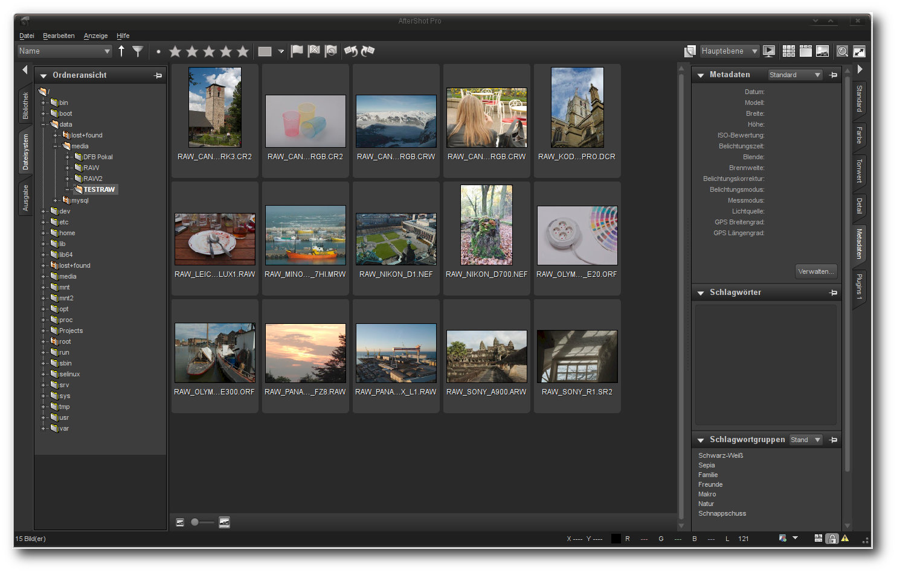

freiesMagazin Oktober 2012
(ISSN 1867-7991)
Topthemen dieser Ausgabe
RAW-Bildverarbeitung unter Linux: Techniken und AnwendungenWer hat sich nicht schon einmal über den weißen, vollständig neutralisierten Himmel geärgert, den man bei vermeintlich bestem Wetter und dem schönsten Sonnenschein fotografierte? Der Grund liegt dabei nicht nur an einer falschen Einstellung, sondern auch oftmals am Ausgabeformat. Dabei können Kameras der gehobenen Preisklasse häufig Bilder im Rohdatenformat (RAW) abspeichern. Dieser Artikel stellt die bekanntesten Applikationen unter Linux vor, vergleicht sie und erklärt, wie anspruchsvolle Fotografen ihre Bilder noch weiter verbessern können. (weiterlesen)
Pfiffige Datensicherung mit storeBackup
Wenn ein Backup kleiner ist als der von den Quelldateien beanspruchte Platz auf der Festplatte, hat man entweder einen Fehler gemacht – oder vielleicht storeBackup benutzt. Das Kommandozeilenprogramm geht äußerst sparsam mit dem verfügbaren Platz auf der Festplatte um, und mancher bezeichnet es als ideales Backupprogramm für Einsteiger und Profis. (weiterlesen)
Creative Commons – Was ist das und kann man das essen?
Creative Commons ist in aller Munde und kommt an vielen Stellen zum Einsatz – sei es bei der Wikipedia, bei OpenStreetMap oder bei freiesMagazin. Der Artikel soll aufzeigen, was Creative Commons ist bzw. was sich hinter den Lizenzen versteckt, wie man diese anwendet und wie man Creative-Commons-lizenzierte Inhalte als Nutzer finden kann. (weiterlesen)
Zum Index
Inhalt
Linux allgemeinRAW-Bildverarbeitung unter Linux
Anleitungen
LanguageTool-Tutorial – Teil I
Software
Pfiffige Datensicherung mit storeBackup
Taskwarrior - What's next? (Teil 3)
Redis – Suchen und Sortieren
Community
Creative Commons – Was ist das?
Rezension: Ubuntu 12.04 für Ein- und Umsteiger
Rezension: Android 4 – Apps entwickeln mit dem Android SDK
Magazin
Editorial
Leserbriefe
Veranstaltungen
Vorschau
Konventionen
Impressum
Zum Index
Editorial
Neuzugang im September
Letzten Monat hatten wir im Editorial erwähnt [1], dass uns ein Redakteur verlassen hat, aber bereits jemand Neues in den Startlöchern steht. Dieser „Neue“ hat seinen Dienst pünktlich zur Oktoberausgabe angetreten. Sein Name ist für deutschsprachige Menschen fast unaussprechlich, aber zumindest schreiben können wir ihn und heißen somit Sujeevan Vijayakumaran in der Redaktion willkommen. Sujeevan Vijayakumaran hält in der Redaktion wie die anderen Redakteure den Kontakt zu den Autoren und betreut diese, wenn neue Artikel eingereicht werden. Daneben kümmert er sich natürlich auch um die Beantwortung von Leserbriefen, über die wir uns im Übrigen immer wieder freuen. Neben freiesMagazin ist Sujeevan Vijayakumaran auch bei Ikhaya, dem Newsteam von ubuntuusers.de [2], aktiv. Wir wünschen Sujeevan eine schöne, lustige, aber vor allem auch eine lange Zeit bei uns im freiesMagazin-Team.Wo ist der Programmierwettbewerb?
Die letzten Jahre gab es bei freiesMagazin von Oktober bis Dezember immer wieder verschiedene Programmierwettbewerbe [3]. Da wir derzeit auch Anfragen oder Vorschläge für einen neuen Wettbewerb bekommen, hier ein kleines Update. Auch dieses Jahr ist wieder ein Programmierwettbewerb geplant. Die groben Details stehen schon, die Feinjustierung nimmt aber noch etwas Zeit in Anspruch. Vor allem durch andere, private Verpflichtungen verzögert sich der freiesMagazin-Programmierwettbewerb dieses Jahr etwas und wird voraussicht erst Anfang Dezember starten. Über die Weihnachtsfeiertage sollten die Teilnehmer dann hoffentlich etwas Zeit finden, um in die Tasten zu hauen.Probleme mit Adobe Reader
Ein Autor meldete uns Probleme beim Öffnen eines unserer erstellen PDF-Dateien mit dem Adobe Reader. So kann es passieren, dass der Adobe Reader einen „Fehler 131“ beim Lesen des Dokumentes meldet. Das Problem tritt beim Einsatz der LiveCycle ReaderExtensions auf. Hilfestellung zur Behebung bietet dabei der Blog von Adobe [4]. Wir empfehlen daher zum Lesen der PDF-Ausgabe von freiesMagazin den Einsatz freier PDF-Betrachter wie Evince oder Okular [5]. Ihre freiesMagazin-Redaktion Links[1] http://www.freiesmagazin.de/freiesMagazin-2012-09
[2] http://ikhaya.ubuntuusers.de/
[3] http://www.freiesmagazin.de/mitmachen#wettbewerb
[4] http://blogs.adobe.com/dmcmahon/2011/02/07/acrobatreader-there-was-a-problem-reading-this-document-131
[5] http://pdfreaders.org/index.de.html
Das Editorial kommentieren
Zum Index
RAW-Bildverarbeitung unter Linux: Techniken und Anwendungen
von Mirko Lindner Kameras der gehobenen Preisklasse können häufig Bilder im Rohdatenformat (RAW) abspeichern. Dieser Artikel stellt die bekanntesten Applikationen unter Linux vor, vergleicht sie und erklärt, wie anspruchsvolle Fotografen ihre Bilder noch weiter verbessern können. Redaktioneller Hinweis: Der Artikel „RAW-Bildverarbeitung unter Linux“ erschien erstmals bei Pro-Linux [1]. Wer hat sich nicht schon einmal über den weißen, vollständig neutralisierten Himmel geärgert, den man bei vermeintlich bestem Wetter und dem schönsten Sonnenschein fotografierte? Der Grund liegt dabei nicht nur an einer falschen Einstellung, sondern auch oftmals an einer technischen Schwäche der meisten Geräte – dem Ausgabeformat. Digitalkameras für gehobenere Bildverarbeitungsansprüche können deshalb neben JPEG und anderen Dateiformaten oftmals die Ausgabe auch in einem herstellerspezifischen Rohdatenformat (RAW) speichern. Im Gegensatz zu den herkömmlichen Formaten handelt es sich bei der Ausgabe um keinen Standard und man benötigt spezielle Applikationen, um sie zu verarbeiten.Einführung
Sieht man von einem gedruckten Bild ab, so stellt die wohl am häufigsten eingesetzte Möglichkeit, Bilder zu archivieren oder abzuspeichern, mittlerweile die Konvertierung des Bildmaterials in JPEG dar. Der in der Regel direkt durch die Fotokamera durchgeführte Schritt ermöglicht dem Fotografen, seine Bilder nicht nur platzsparend zu archivieren, sondern erspart ihm auch eine Menge Arbeit. Denn betrachtet man die interne Struktur einer Digitalkamera, so wird einem schnell klar, wie komplex die Arbeitsabläufe auch in den günstigsten Modellen mittlerweile geworden sind. Technisch gesehen wandelt der in einer digitalen Kamera integrierte CCD-Sensor lediglich die Lichtintensität des einfallenden und durch verschiedene Filter in die Grundfarben zerlegten Lichtes in elektrische Spannung um, welche dann in eine digitale Form in Bits und Bytes übersetzt wird. Die eigentliche Mechanik und Optik der Digitalkamera sind lediglich für die Scharfstellung, die Abschätzung der Belichtungszeit- und Blendenkombination sowie für die optische Filterung verantwortlich. Fällt das Licht durch das Objektiv auf die Kamera, wird es durch diverse Tiefpass-, Infrarot- und Farbfilter durchgereicht und die daraus gewonnenen Lichtintensitäten in entsprechende elektrische Signale mittels Diskretisierung und Quantisierung gewandelt. Verantwortlich für die Aufnahme eines Bildes ist der Fotosensor eines Gerätes, der ähnlich wie ein Schachbrett mit einem Farbfilter nach dem Konzept der Bayer-Matrix überzogen ist. Die lichtempfindlichen Zellen einer einzelnen Fotozelle können dabei nur Helligkeitswerte erfassen. Um Farbinformationen zu erhalten, wird vor jeder einzelnen Zelle ein Farbfilter in einer der drei Grundfarben Rot, Grün oder Blau aufgebracht. Jeder Farbpunkt liefert dabei nur Informationen für eine einzige Farbkomponente.Farbmuster eines Chip-Farb-CCDs – Hier der Bayer-Sensor.
Die eigentliche Berechnung der Bildwerte übernimmt deshalb eine integrierte Firmware direkt auf dem Gerät mittels einer Interpolation (Demosaicing [2]). Die verwendete Software geht in der Regel davon aus, dass es im Bild zwischen zwei benachbarten Pixeln gleicher Farbe nur zu geringen Farbunterschieden kommt. Einfache Verfahren interpolieren deshalb den Farbwert aus den Pixeln gleicher Farbe in der Nachbarschaft und errechnen somit den Farbwert eines Pixels. So errechnete Bilder werden schlussendlich in einer Datei, meistens JPEG, gespeichert. Doch gerade die gebräuchlichsten Formate zur Bildspeicherung erlauben es häufig nicht, alle Informationen, die der Sensor der Kamera liefert, zu speichern. So bieten beispielsweise die allseits eingesetzten JPEG-Varianten nur 8 Bit pro Farbkanal an. Einfach dargestellt ist es also in einem JPEG-Bild nicht möglich, mehr als 256 Helligkeitsabstufungen in einem einzelnen Farbkanal zu nutzen. Aufgrund der Charakteristik des üblicherweise eingesetzten Sensors sind allerdings bei weitem mehr Helligkeitsabstufungen möglich. Um die Informationen des Bildes zu speichern, konvertieren die meisten Kameras nach dem Demosaicing das Bild in ein gängiges Format und zerstören dabei unwiderruflich Bildinformationen. Die Speicherung des Bildes in einem verlustbehafteten Format wie JPEG tut schlussendlich den Rest, damit viele der ursprünglich vorhandenen Bilddaten vollends vernichtet sind.
Das RAW-Format
Um das Problem zu umgehen, können deshalb vor allem Digitalkameras für gehobenere Bildverarbeitungsansprüche neben JPEG oftmals auch ein sogenanntes RAW-Format verarbeiten. Die Bilder der Digitalkamera, die normalerweise durch die interne Elektronik verarbeitet werden, werden so in einem verlustfrei komprimierten Format noch vor der Verarbeitung durch die Firmware mit vollständigen Farbwerten auf die Speicherkarte geschrieben (auch wenn manche Modelle auch hier bereits automatische Eingriffe durchführen). Der Fotograf behält so die komplette Kontrolle über das eigene Bild und kann nahezu alle Parameter nachträglich – einschließlich der Interpolation – ändern oder korrigieren. Einstellungen wie Weißabgleich, Farbtemperatur, Scharfzeichnung oder Kontrasteinstellung können zu einem späteren Zeitpunkt am PC den eigenen Bedürfnissen angepasst und verändert werden. Darüber hinaus beherrschen die meisten Rohdatenformatdateien viel feinere Abstufungen jenseits des limitierten JPEG-Formats. So sind bei RAW 12 (4.096 Stufen) oder 14 Bit (16.384 Stufen) mittlerweile die Regel. Dadurch steht beispielsweise einer nachträglichen Helligkeitsanpassung von nicht optimal belichteten Bildern nichts im Wege. Zudem lassen sich in RAW-Dateien vor allem Übergänge zwischen verschiedenen Helligkeitsstufen, wie Schatten, besser darstellen.Die Zahl der Abstufungen innerhalb eines Farbkanals wird in Bit gemessen. Beispiele für Helligkeitsstufen.
Doch des einen Freud ist des anderen Leid. Zwar lassen sich auch in RAW Bilder zügig erstellen, doch bedürfen sie später einer nachträglichen Bearbeitung. Es gibt mittlerweile auch Kameramodelle, die die Ausgabe des bearbeiteten Bildmaterials auch in RAW ermöglichen, doch hebelt diese Möglichkeit in der Regel die Vorteile des Formats aus. Zudem sind die Dateien des RAW-Formats erheblich größer als die von JPEG, was nicht nur eine längere Übertragungszeit bedeutet, sondern auch eine Verringerung der erreichbaren Bilder pro Sekunde, die eine Digitalkamera abspeichern kann. Ein weiterer, nicht zu unterschätzender Nachteil von RAW-Formaten stellen die Kosten der Hardware dar. Zwar gingen in der Vergangenheit immer mehr Hersteller dazu über, auch kompakte und semiprofessionelle Digitalkameras mit RAW-Unterstützung auszustatten, doch mittlerweile stellt die Ausgabe einen strategischen Mehrwert dar und wird in der Regel als Unterscheidungskriterium zwischen den verschiedenen Einsatzbereichen genutzt. So verbaut beispielsweise Canon seine RAW-fähigen DIGIC-Bildprozessoren gleichermaßen in semiprofessionellen wie in Einsteiger-Geräten. Doch während die erstgenannte Zielgruppe die Bilder auch im RAW-Format speichern kann, müssen Einsteiger auf diese Funktionen verzichten. Abhilfe lässt sich hier allerdings mittels des Firmware-Aufsatzes CHDK (Canon Hacker Development Kit [3]) schaffen, der neben erweiterten Aufnahme-Modi auch Funktionen zur Raw-Speicherung in Kompaktkameras freischaltet.
RAW-Bilder bearbeiten
Betrachtet man das RAW-Dateiformat als das, was es ist – ein Kamera-spezifischer Datenstrom – so kommt man sehr schnell zu dem Schluss, dass das „Format“ im Grunde kein allgemeines Format sein kann. In der Praxis verwendet jeder Hersteller ein eigenes Format. So versieht etwa Canon RAW-Dateien mit der Extension CR, CD2 und in neuen Geräten mit CRW. Minolta kennzeichnet die eigenen Dateien mit MRW oder MDC und Nikon vergibt die Endung NEF oder NRW. Kodak dagegen hat das eigene Format bereits mehrfach geändert und kommt mit den Endungen DCR, DCS oder KDC daher, während Sony auf SRF, SR2 und ARW zurückgreift. Somit muss eine Applikation die Formate vieler Kamera-Hersteller beherrschen, wenn sie den Anspruch hat, RAW-Dateien zu unterstützen. Dementsprechend bieten viele Produzenten von Digitalkameras ihre eigenen Applikationen an, die das interne Format einlesen und weiterverarbeiten können. Zudem existieren auch diverse Erweiterungen, wie beispielsweise für Photoshop, die auch mit neuen Geräten zurecht kommen. Doch auch unter Linux gibt es eine Fülle von Anwendungen, die für die Weiterverarbeitung und die Manipulation der Bilder genutzt werden können. Manche davon sind frei, andere wiederum proprietär.Beispiel eines Bildes nach einer extremen Aufhellung: Original, Raw und JPEG.
Doch wozu das Ganze? Beschränken sich die eigenen Ambitionen beim Fotografieren lediglich auf das Festhalten von Bildinformationen und eine kleinere nachträgliche Änderung, wie zum Beispiel die Entfernung von roten Augen, so ist der Einsatz von RAW-Dateien nicht wirklich zu empfehlen. Der Aufwand der Bearbeitung und die daraus resultierenden Vorteile werden in den seltensten Fällen die geringe Qualitätssteigerung rechtfertigen. Hier kann die Kamera-Elektronik bei weitem die eigenen Ansprüche erfüllen. Anders verhält es sich, wenn der Anwender umfangreichere Nachbearbeitungen vornehmen und Werte, wie etwa die Tonwertkorrektur oder die Anpassung von Kontrast und Bilddynamik, selbst einstellen möchte. Ein weiterer Fall stellt die Korrektur des Weißabgleichs dar oder die Rettung von Bildern. Wie im nebenstehenden Beispiel erkennbar, liefert das RAW-Format auch bei vermeintlich nicht mehr zu gebrauchenden Bildern noch akzeptable Resultate, während das JPEG-Format hier meistens passen muss. Das RAW-Format ist also in der Regel dann angebracht, wenn der Anwender entweder die volle Kontrolle über ein Bild erhalten will oder er damit rechnen muss, dass eine spätere Nachbearbeitung von Nöten sein wird. Dies kann zum einen von den herrschenden Wetter- oder Lichtverhältnissen, zum anderen von der gegebenen Situation abhängen.
RAW und HDR
In der Digitalfotografie sind die Grenzen des technisch Machbaren recht eng gesteckt. Sobald eine Szene über einen großen Dynamikumfang verfügt, ist auch ein Kamerasensor schnell überfordert. Zu sehen sind die Effekte bei vielen Anlässen, denn sobald das Spektrum zwischen hellen und dunklen Stellen für einen Sensor zu groß wird, verschwinden Details, Schatten werden zu dunklen Flecken oder Wolken zu einer weißen Masse. Tritt solch ein Fall ein, hilft auch das RAW-Bild nicht weiter, denn auch hier bilden die Rohdatenformate von Digitalkameras nicht den gewünschten Dynamikumfang ab. Doch es gibt durchaus Wege, den Dynamikbereich auszuweiten. So bilden beispielsweise HDR-Aufnahmen ein Motiv mit einer Belichtungsreihe in vollem Dynamikumfang der Kamera ab. Vereinfacht gesagt wird in diesem Fall ein Motiv normal, unter- und überbelichtet. Die so entstandenen Einzelfotos der Belichtungsreihe werden am PC zu einem HDRI („High Dynamic Range Image“) Bild zusammengesetzt. Das Ergebnis kann dabei sehr unterschiedlich ausfallen, doch die Bilder zeichnen sich durch einen Detailreichtum aus, der weit über den Dynamikumfang des Sensors und des RAW-Bildes hinausgehen kann.Beispiel einer aus vier Einzelbildern erstellten HDR-Szene.
© Vorlage: Kevin McCoy, Gesamtwerk: Darxus (CC-BY-SA 3.0)
{kind=link}
Auch wenn ein HDR-Bild den Dynamikumfang im Ausgangsbild steigern kann, spielt auch hier das Eingangsmaterial eine Rolle. Wurde das Bild aus mehreren RAW-Bildern erzeugt, lässt das Ausgangsbild erheblich mehr Farbabstufungen zu als ein HDR-Bild auf Basis von gleich vielen JPEG-Dateien. Der Grund sollte auch hier klar sein: In den Ausgangsbildern des RAW-Formats ist der Dynamikumfang in mehr Farbabstufungen abgebildet worden, als es beispielsweise bei JPEG der Fall sein kann. Die Folge sind Bilder, die durch die verwendete Software noch präziser berechnet und dargestellt werden können.
RAW unter Linux
Auch das freie Betriebssystem Linux bietet zahlreiche Anwendungen zur Bearbeitung von RAW-Bildern an. Doch bei der Nutzung ist Vorsicht geboten, denn nicht jede Applikation eignet sich für die Einsatzzwecke. Zwar verfügen mittlerweile viele Tools dank libraw oder dcraw auch über eine Import-Funktion, doch können sie aufgrund ihrer Funktionsweise oftmals nicht korrekt mit dem gelieferten Material umgehen. Ihnen fehlt es schlicht an einer internen Unterstützung für den erweiterten Dynamikbereich. Die Folge sind unter anderem Bilder, die zwar dem RAW-Format entstammen, von der Software aber auf einen kleineren Dynamikbereich heruntergerechnet wurden. Ein prominentes Beispiel stellt dabei der allseits beliebte Grafikkünstler Gimp dar, der mittels diverser Plugins auch um einen RAW-Import ergänzt werden kann. Da die Anwendung intern allerdings nur mit 8 Bit arbeitet, verlieren Anwender bei der Bearbeitung mit Gimp unwiderruflich Bild-Informationen. Eine Abhilfe wird wohl erst eine kommende Version mit sich bringen, die auch mit dem erweiterten Dynamikbereich klar kommen soll. Gimp informiert deshalb in der aktuellen Version vor einem Import über die Gefahren. Viele andere Anwendungen tun es allerdings nicht. Die folgende Auflistung unterschlägt deshalb bewusst alle Applikationen, die nicht in der Lage sind, den vollen Dynamikumfang der RAW-Quelle zu verarbeiten. Auch diverse kleinere Applikationen, die nicht über ein Mindestmaß an Korrekturfunktionen verfügen, finden sich nicht in der Liste der getesteten Programme. Ebenso das Kommandozeilentool „dcraw“ selbst, das zwar die Basis vieler Tools darstellt, aber nur über marginale Korrekturmöglichkeiten verfügt.AfterShot Pro
Das Fotoentwicklungs-Programm AfterShot Pro [4] des kanadischen Herstellers Corel könnte eigentlich auch Bibble 6 heißen. Seit der Übernahme der kleinen texanischen Software-Schmiede Bibble [5] hat sich optisch nicht viel getan und AfterShot Pro sieht nicht nur wie Bibble aus, sondern fühlt sich auch so an. Die Software zeichnet sich auch in der neuen Version durch eine hohe Arbeitsgeschwindigkeit und viele Funktionen aus. Eine Stärke von AfterShot Pro stellt auch die Plugin-Schnittstelle dar. Noch sind allerdings nicht alle mit Bibble lauffähigen Plugins kompatibel mit der neuen Anwendung.AfterShot Pro.
Wie in anderen Anwendungen nimmt auch unter AfterShot Pro die Bilddarstellung den Großteil des Bildschirms ein. Hier können Anwender zwischen verschiedenen Ansichten eines Bildes wählen – unter anderem einer Miniaturansicht, einer Einzelbildanzeige oder einem Vergleich verschiedener Bilder. Links angeordnet in der Applikation sind die Reiter „Bibliothek“, „Dateisystem“ und „Ausgabe“, die einen schnellen Zugriff auf die Ein- und Ausgabe Funktionen der Anwendung gewähren. Am rechten Bildschirmrand der Anwendung bindet AfterShot Pro die Korrekturwerkzeuge ein, die in die Gruppen „Standard“, „Farbe“, „Tonwert“, „Detail“, „Metadaten“ und „Plugins“ unterteilt sind. Die Werkzeugleiste selbst lässt sich von der Hauptanwendung trennen und auf einen Zweitmonitor verschieben, was noch mehr Platz der eigentlichen Bilddarstellung verschafft. 
Die Anzeige der Bilder in der Galerieansicht erlaubt eine Bewertung, Verschlagwortung oder aber auch die Suche.
Bereits vorhandene Archive werden bei AfterShot Pro entweder direkt in eine zuvor festgelegte Struktur integriert oder auf dem Speicherort belassen. So können bereits bewährte Strukturen auch beibehalten werden, ohne dass sie auf die Anwendung zugeschnitten sein müssen. Zudem lassen sich neue Verzeichnisse als Kataloge in die Anwendung einbinden, was in der Praxis einer getrennten Datenbank gleichzusetzen ist. Erwähnenswert ist hier auch, dass die Anwendung bei der Suche nicht nur eine, sondern auch mehrere Datenbanken berücksichtigen kann. Der Direktzugriff auf Dateisystemordner ist möglich, ohne dass die Bilder zuvor in die Datenbank importiert werden mussten. Eine direkte Importfunktion von einer Kamera aus bringt die Anwendung allerdings nicht mit. Die eigentliche Bearbeitung von RAW-Dateien mit AfterShot erfolgt flott. Dank konfigurierbarer Werkzeuge und Ansichten kann die Anwendung an den individuellen RAW-Workflow angepasst werden. Die Fotobearbeitung geschieht dabei, wie auch schon bei Bibble, durch das nichtdestruktive Anwenden von Werkzeugen. So lassen sich zu jedem Zeitpunkt immer die Quelldaten rekonstruieren und alle Schritte wiederholen, ohne dass nur ein Pixel im Original verändert worden ist. Änderungen speichert AfterShot Pro in einer separaten Steuerungsdatei, die im selben Verzeichnis wie das Original liegt. Beim Laden des Bildes wendet die Applikation dann automatisch alle durchgeführten Schritte an.
Änderungen können auch auf einzelne Layer oder Regionen angewendet werden.
Die ausgeklügelte Stapelverarbeitung erlaubt verschiedene Parameter, beispielsweise für Fülllichter für die Aufhellung, Weißabgleich oder Noise Ninja auf hunderte von Fotos anzuwenden. Doch nicht nur globale Parameteränderungen sind mit der Funktion möglich, auch zahlreiche aufwändige Bearbeitungsschritte lassen sich im Stapelbetrieb auf mehrere Bilder anwenden.
Die Druckoption erlaubt es, eigene Layouts zu definieren.
Sämtliche Bearbeitungsfunktionen lassen sich über Ebenen auf einzelne Bildbereiche anwenden. Der Konverter unterstützt zudem viele Kameras und Objektive. Sind ein Kameramodell und ein Objektiv bekannt, kann die Anwendung die Korrekturen für Weichzeichung und Vignettierung automatisch durchführen. Zum Entrauschen setzt AfterShot Pro auf eine funktionsreduzierte Version von Noise Ninja [6]. Die Korrektur von stürzenden Linien ist in der Anwendung nicht eingebaut, die kann allerdings mit dem kostenlosen Plugin zPerspector [7] nachgerüstet werden. Einmal getätigte Korrekturschritte lassen sich zudem abspeichern und automatisiert auf andere Bilder anwenden. Ergebnisse bei einer Suche nach gewünschten Inhalten liefert AfterShot Pro dank einer integrierten Datenbank schnell. Als Kriterien stehen dabei sämtliche durch IPTC und/oder EXIF bereitgestellten Informationen, Bewertungen oder Tags zur Verfügung. Hier könnte der Hersteller allerdings noch ein wenig mehr Arbeit leisten und die Suchfunktion um eine Verknüpfung unterschiedlicher Merkmale ergänzen. Beim Speichern trägt die Anwendung die Tags in die eigene Datenbank oder in eine XMP-Begleitdatei ein. Direktes Schreiben der EXIF- oder IPTC-Daten in die Originaldatei unterstützt das Programm nicht. Lediglich die Kopie des Originals enthält auf Wunsch die zusätzlichen Daten. Auch die Auswertung von Geotags unterstützt AfterShot Pro nicht. Die Ausgabe der Bilder erfolgt bei AfterShot Pro in den Formaten JPEG und TIFF (8/16 Bit). Weitere Formate unterstützt die Anwendung nicht. Zudem lassen sich Bilder direkt von der Anwendung aus in verschiedenen zuvor definierten Layouts drucken. Ein in der Bildanzeige zuschaltbares Soft-Proofing liefert erste Anhaltspunkte, wie es unter verschiedenen Profilen aussehen wird. Auch eine Ausgabe in Form einer Diashow ist in der Anwendung implementiert, wobei die Ausgabe als solche recht minimalistisch daherkommt und beispielsweise über keinerlei Effekte verfügt. Fazit: AfterShot Pro bietet eine Fülle von Korrekturfunktionen und eine durchaus ansehnliche Bildverwaltung. Die mächtige Stapelbearbeitung erlaubt es, hunderte von Bildern automatisch zu korrigieren und zu archivieren. Auch die Integration in die Linux-Umgebung kann als gelungen bezeichnet werden. Probleme zeigt AfterShot Pro dagegen in fast allen Belangen der Bildpräsentation. Auch ein Import von Bildern direkt von einer Kamera aus und die unausgereifte Suche trüben das ansonsten perfekte Bild.
Darktable
Der relativ neue und erst Anfang des Jahres in der Version 1.0 freigegebene Bildverwalter und -Optimierer Darktable [8] wartet mit einer vertrauten Optik und einem durchdachten Bedienkonzept auf. Trotz des relativ geringes Alters von drei Jahren beherrscht das Programm erstaunlich viele Funktionen, die von der Konvertierung über die Bearbeitung bis hin zu einer ausgeklügelten Ausgabe samt einer durchdachten Stapelverarbeitung reichen.Darktable.
Die Oberfläche von Darktable wirkt auf den ersten Blick spartanisch. Doch der Schein trügt, denn hinter den wenigen Punkten verbergen sich Funktionen, die einen kompletten RAW-Workflow ermöglichen. Auf der linken Seite der Anwendung sind die Datei- und Datenbankfunktionen untergebracht. Auch in Darktable dominiert der mittlere Bildbereich, der fast die komplette Fläche füllt. Auf der rechten Seite sind dagegen die für den momentan aktiven Bereich verfügbaren Werkzeuge zu finden. Streng genommen kann Darktable in drei logisch angeordnete Bereiche unterteilt werden: Leuchttisch („lighttable“), Dunkelkammer („darkroom“) und „Tethering“. So finden sich auf dem Leuchttisch alle Operationen, die mit der Verwaltung der Bilder zu tun haben. Hier können Verzeichnisse zu Galerien zusammengefasst, Geräte eingebunden oder Bildern eine Wertung oder die passenden Schlüsselwörter gegeben werden. Auch die Suche nach Bildern ist hier implementiert. Sie erlaubt unter anderem logische Operationen und die Verknüpfung von mehreren Kategorien. Auf ausgewählte Bilder können auf dem Leuchttisch zudem automatisch ablaufende Operationen angewendet werden, was die Bearbeitung einer großen Zahl an Bildern mit einem minimalen Zeitaufwand ermöglicht. Den zweiten Bereich stellt die Dunkelkammer dar. Neben einer Auflistung der Werkzeuge blendet der Bereich auch eine Filmrolle ein, die zur schnellen Umschaltung zwischen verschiedenen Bildern genutzt werden kann. Bei der Werkzeugauswahl ist zu beachten, dass die Applikation im Standardmodus nicht alle Funktionen einblendet. Viele wenig benutzte Funktionen oder Funktionen, die die Entwickler für weniger relevant halten, finden sich hinter der Schaltfläche „Weitere Module“. Ein Klick auf den Bereich bringt ein Fenster mit Piktogrammen zum Vorschein, in dem Werkzeuge ein- und ausgeschaltet oder in die Favoritenleiste verfrachtet werden können.
In der Dateisystemansicht können Bilder bewertet, verschlagwortet oder gesucht werden.
Der Funktionsumfang der Dunkelkammer ist mittlerweile beachtlich und braucht sich nicht hinter anderen Anwendungen zu verstecken. Bildkorrekturen werden in Darktable verlustfrei durchgeführt. Alle Korrekturen wie beispielsweise die Anpassung des Weißabgleichs, das Schärfen oder die Farbkorrektur können in einer Voreinstellung gespeichert und wenn benötigt, später auch für andere Bilder projiziert werden. Alle durchgeführten Aktionen, samt Werten, speichert Darktable zudem in einem Verlaufsbereich, der zu jedem Zeitpunkt gespeichert und als Basis für andere Bilder oder für eine Stapelverarbeitung genutzt werden kann. Selten war die Erstellung von RAW-Prozessketten so einfach wie unter Darktable. Die Bedienung der mitgelieferten Werkzeuge gestaltet sich durchaus intuitiv, auch wenn die Auswahl der Tools teilweise verwirren kann. Ein Kritikpunkt ist allerdings die Geschwindigkeit mancher Helfer, die in manchen Bereichen noch Wünsche offen lässt. Auch die Funktionsweise diverser Werkzeuge könnte Verbesserungen erfahren. So korrigiert beispielsweise die Objektivfunktion das Bild nicht wirklich zufriedenstellend.
Hinter dem Reiter „weitere Module“ verstecken sich weitere Funktionen, die explizit eingeschaltet oder als Favoriten gesetzt werden können.
In der Version 1.0 [9] stellte Darktable erstmalig auch die Tethering-Funktion vor, die nun im dritten Bereich der Anwendung zu finden ist. Bei der Funktion handelt es sich um nichts anderes, als um eine LiveView-Anzeige, die auch in diversen Kameras zu finden ist. Hier wird das Bild der Kamera – ein unterstütztes Modell vorausgesetzt - direkt auf dem Bildschirm dargestellt. Doch nicht nur eine Anzeige des Bildes ist möglich. Auch eine Steuerung der wichtigsten Optionen erlaubt die Ansicht. So lassen sich hier beispielsweise der ISO-Wert oder der Weißabgleich korrigieren. Daneben gibt das Tool dem Anwender auch die Möglichkeit, Bilder direkt aufzunehmen, die sofort mit Tags versehen werden können.
Der zoombare Leuchttisch ermöglicht schnelle Anpassungen an Bildern.
Die dauerhafte Ausgabe der Bearbeitungsschritte erfolgt in Darktable über eine im Leuchttisch-Bereich erreichbare Exportfunktion. Neben der Speicherung der Resultate auf der Festplatte erlaubt die Funktion auch einen Export in Form einer Galerie, den Versand per E-Mail oder die Übermittlung der Resulate an einen Webdienstleister. Eine Funktion zum Drucken der Bilder oder eine Präsentation in Form einer Diashow sind nicht vorhanden. Fazit: Trotz des relativ geringen Alters bietet Darktable eine beachtliche Anzahl an Tools, die fast alle Anwender zufriedenstellen sollten. Bei unserem Test fiel uns kaum ein Workflow-Schritt auf, der nicht mit den zahlreichen Werkzeugen erledigt werden konnte. Die Stapelbearbeitung ist durchdacht und erleichtert die Arbeit ungemein. Auch die oftmals angesprochene Abweichung in der Bedienung kann überzeugen und stört nach einer kurzen Einarbeitung nicht. Defizite zeigt die Applikation dagegen in der Geschwindigkeit und der Qualität der Werkzeuge, die nicht immer die gewünschten Resultate liefern und teilweise auch nicht korrekt funktionieren. Auch das Fehlen einer Druckoption fällt negativ auf.
Digikam
Digikam [10] ist einer der beliebtesten Bildverwalter für KDE unter Linux, aber auch für Windows. Seit digiKam 1.0, so die Eigenschreibweise, kurz vor Weihnachten 2009 freigegeben wurde, wird die Applikation in einem Tempo entwickelt, das zweifelsohne zum Staunen verleitet. Dementsprechend fällt auch der Funktionsumfang aus. Abgesehen von fortgeschrittenen Bildeditierfunktionen findet sich mittlerweile kaum noch eine Nische, die Digikam nicht ausfüllen kann. So auch die Entwicklung von RAW-Bildern.Digikam.
Verantwortlich für den enormen Funktionsumfang zeigt sich unter anderem KIPI. Das im Rahmen von Digikam entwickelte „KDE Image Plugins Interface“ (KIPI) stellt eine Schnittstelle dar, die Fremdanwendungen zahlreiche Funktionen zur Bearbeitung von Bildern zur Verfügung stellt. Die Lösung wird unter anderem von Digikam, KPhotoAlbum [11] und Gwenview [12] verwendet und stellt einen integralen Teil der Funktionalität der Applikationen dar. Unter anderem bietet sie auch die Möglichkeit, mittels diverser Im- und Export-Modi Bilder weiter zu verarbeiten und zu katalogisieren. Auch der RAW-Import wurde als KIPI-Modul realisiert. Digikam setzt sich aus verschiedenen Bereichen zusammen, die jeweils in neuen Fenstern geöffnet werden. Der erste Bereich, den der Anwender sieht, stellt die Album-Ansicht dar. Die Komponente dient als die zentrale Anlaufstelle der Anwendung und bietet Zugriff auf die anderen Bereiche. Zudem können hier als Alben eingebundene Bilder bewertet, verschlagwortet oder aber einfach nur durchsucht werden. Der unmittelbare Zugriff auf beliebige Datenträger und Verzeichnisse ist allerdings nicht möglich. So müssen alle Bilder, die in Digikam bearbeitet werden sollen, zuvor einem Album zugewiesen werden. Schlagwörter, Bildunterschriften oder allgemeine Informationen weist die Applikation sowohl einzelnen, oder aber auch mehreren Bildern zu. Ferner verfügt Digikam über eine Stapelverarbeitung, die allerdings im Vergleich zu anderen Anwendungen etwas gewöhnungsbedürftig ausfällt. So müssen bei der Erstellung eines Workflows alle benötigten Tools in einem speziellen Editor platziert und angepasst werden. Einen weiteren Nachteil der Stapelverarbeitung stellt die Tatsache dar, dass die meisten Funktionen „blind“ durchgeführt werden müssen und nicht alle Funktionen von Digikam auch in der automatischen Verarbeitung genutzt werden können. So war es beispielsweise nicht möglich, RAW-Bilder automatisch anzupassen. Für diesen Zweck bietet die Anwendung eine spezielle Rohbild-Stapelkonvertierung an, die vor der eigentlichen Stapelverarbeitung ausgeführt werden muss. Versucht man dagegen direkt RAW-Bilder in der regulären Stapelverarbeitung zu bearbeiten, meldet die Anwendung bei der Abarbeitung der Funktionen einen unbekannten Fehler.
Die Galerieansicht geht weit über die Möglichkeiten auch fortgeschrittener Tools hinaus. Hier spielt Digikam seine Stärke als Bildverwalter klar aus.
Die eigentliche Bearbeitung der Bilder findet in der Editor-Komponente statt, die entweder durch den Klick auf „Bildbearbeitung“ oder durch das Drücken der Taste F4 erreicht werden kann. Öffnet man dabei ein RAW-Bild, konvertiert Digikam die Quelle automatisch in ein 8-Bit-Bild. Abhilfe bringt hier die Änderung des Standardverhaltens unter „Rohdekodierung“ und die Festlegung des Dekodierverhaltens. Zur schnelleren Navigation kann der Anwender eine Miniaturliste aller im aktuellen Albenverzeichnis enthaltenen Bilder anzeigen. Hier stört es allerdings, dass ein Wechsel zwischen den Bildern nicht ohne das vorherige Speichern möglich ist. Des Weiteren speichert Digikam die Bilder entweder in einer vereinfachten Form nicht-destruktiv, wobei die Anwendung für jedes Bild eine Kopie anlegt, oder überschreibt das Original. So abgespeicherte Bilder lassen zwar Rückschlüsse auf die durchgeführten Schritte ziehen, eine Wiederherstellung der Informationen oder gar der Einzelschritte ist aber nicht möglich.

RAW-Bilder kann die Anwendung entweder automatisch oder kontrolliert über eine separate Option laden.
Die Korrekturwerkzeuge der Anwendung sind solide und bieten alle Funktionen an, die man für einen RAW-Workflow benötigt. Nach jedem Schritt blendet die Applikation eine Vorschau der Änderung an. Die Art der Darstellung kann bei den meisten Tools individuell festgelegt werden. Die Geschwindigkeit und die Resultate der Werkzeuge sind akzeptabel und bieten nur wenige Punkte zur Kritik. Alle typischen Punkte eines RAW-Workflows konnten mühelos und ohne größere Anstrengung durchgeführt werden. Zusätzlich bietet Digikam noch eine Fülle von Spezialwerkzeugen an, die das Leben des Fotografen extrem erleichtern können. So erkennt die Applikation beispielsweise Gesichter auf den Bildern, ist in der Lage, aus verschiedenen Bildserien HDR-Bilder zu generieren, stellt Geotags dar oder lässt sie grafisch verändern und ermöglicht es, verschiedene Bilder zu einem einzelnen Panoramabild zusammenzufügen. Keine andere Anwendung unter Linux hat so viele universelle Funktionen unter einer Oberfläche vereint.
Anfängern greift die Anwendung dank zahlreicher Tools (hier eine automatische Korrektur) unter die Arme.
Eine weitere Stärke von Digikam stellt die Ausgabe dar. Neben der Möglichkeit der Speicherung auf der Festplatte in verschiedenen Formaten eröffnet die Anwendung zahlreiche Export-Möglichkeiten. Unter anderem erlaubt das Programm automatisierte Veröffentlichungen bei zahlreichen Online-Diensten, darunter Flickr oder Facebook. Auch ein Abgleich mit mobilen Geräten ist möglich. Für eine Druckausgabe bietet das Tool mannigfaltige Layout-Vorgaben. Zudem ermöglicht die Anwendung einen Export der Daten in eine grafisch ansprechende HTML-Galerie. Fazit: Digikam ist mit Abstand die funktionsreichste Anwendung unter allen hier vorgestellten Tools. Funktionen wie HDR, Geotagging, Panorama, eine Gesichtserkennung, ausgefeilte Taggingfunktionen oder aber eine ausgereifte Bildverwaltung sind nur die herausragendsten Eigenschaften der Anwendung. Der eigentliche RAW-Workflow ist dagegen nicht wirklich auf dem Stand der Technik. Zwar bietet das Programm alle Funktionen an, die für eine Bearbeitung von RAW-Bildern notwendig sind, doch vor allem bei einer großen Zahl an Material stößt die Handhabung wegen der etwas ungewöhnlichen Stapelverarbeitung schnell an ihre Grenzen. Stärken zeigt das Programm dagegen beim Export und beim Drucken.
Fotoxx
Wie die Mehrzahl der hier vorgestellten Applikationen ist auch Fotoxx [13] eine Software zur Bildverwaltung und Bildverarbeitung. Der Schwerpunkt der Anwendung liegt laut Aussage des Entwicklers auf einer einfachen und schnellen Bedienung. Vor allem Einsteiger sollen mit Fotoxx ein Tool erhalten, das sie nicht überfordert und alle für einen Bildbearbeitungsprozess benötigten Funktionen mit sich bringt.Fotoxx.
Die Oberfläche der Anwendung ist in zwei separate Bereiche gegliedert, die sich jeweils hinter den Reitern „F“ und „G“ auf der linken Seite des Hauptfensters befinden. Während unter „F“ alle Bearbeitungsschritte durchgeführt werden, blendet der Bereich „G“ einen Galeriemodus ein, in dem durch die im Dateisystem oder durch die in der Datenbank gespeicherten Bilder navigiert werden kann. Ein Nachteil der Galeriedarstellung ist allerdings, dass sie nicht dediziert aufgerufen werden, sondern nur aus dem Bearbeitungsmodus gestartet werden kann. Auch die Navigation durch die Verzeichnisstruktur ist gewöhnungsbedürftig. Erschwerend kommt noch hinzu, dass der Vorschaubrowser nur Bildertypen anzeigt, die ihm bekannt sind. RAW oder DNG gehören nicht dazu. Ein Umschalten zwischen den zwei verschiedenen Darstellungsmodi ist jederzeit möglich, wobei allerdings alle Änderungen zuvor gespeichert werden müssen. Fotoxx unterscheidet sich fundamental von den typischen Applikationen des Genres. Vieles ist in der Anwendung zunächst gewöhnungsbedürftig. So müssen fast alle Tools im Bearbeitungsmodus direkt aus dem teilweise unübersichtlichen Menü gestartet werden. Eine Funktion für Favoriten gibt es nicht. Genauso wenig gibt es eine Funktion für Stapelverarbeitung, sodass alle Bearbeitungsschritte manuell für jedes Bild einzeln durchgeführt werden müssen. Ungewohnt ist auch die Anordnung mancher Menüs. So finden sich beispielsweise die Benutzereinstellung unter dem Menüpunkt „Werkzeuge“. Vor allem beim ersten Start ist eine längere Suche nach den Tools unvermeidlich. Hat sich der Anwender allerdings mit der Anwendung eine Weile beschäftigt, findet er sich doch recht zügig zurecht. Das Laden von RAW-Bildern erledigt Fotoxx durch den Aufruf einer auf ufraw-batch aufbauenden Importfunktion. Eine Übergabe von Parametern ist nicht vorgesehen. Hier muss der Anwender dem Automatismus der Anwendung vertrauen. Dedizierte Korrekturen eines Bildes erledigt Fotoxx im Bearbeitungsbereich, der zahlreiche Tools aufweist, die die meisten Bearbeitungsschritte eines RAW-Workflows abdecken. So lassen sich in der Anwendung nicht nur zahlreiche Tonwertkorrekturen erledigen, sondern auch die Perspektive ändern. Auch das Zusammensetzen von HDR oder Panoramabildern beherrscht das Programm. Viele Werkzeuge können zudem parallel aufgerufen und benutzt werden, was vor allem auf Dual-Monitoren sehr angenehm ist. Unter anderem lassen sich so fast die kompletten Farbanpassungen durchführen. Eine Vorher/Nachher-Ansicht gibt es nicht, doch das Programm erledigt die Transformation derartig schnell, dass man durchgeführte Änderungen fast sofort sieht.
Die Galerieansicht zeigt nur bekannte Formate an – RAW-Dateien gehören nicht dazu.
Gefundene Bilder können auch unter Fotoxx mit Tags versehen, bewertet oder nach anderen Kriterien katalogisiert werden. Die Suche erweist sich allerdings als unlogisch. So werden beispielsweise die Resultate im Galeriebereich dargestellt, die eigentliche Suche muss aber im Bearbeitungsbereich gestartet werden. Einsortierte Bilder können nach Tags, Datum oder selbst definierten Kriterien gesucht werden. Auch eine Suche nach Geo-Informationen, samt einer grafischen Anzeige des Ortes, erlaubt die Anwendung.
Werkzeuge werden in der Anwendung stets in neuen Fenstern geöffnet und können simultan benutzt werden.
Bearbeitete Bilder schreibt Fotoxx entweder in dieselbe oder eine neue Versionsdatei. Unterstützt werden neben TIFF (8/16) ebenso PNG (8), ICO, BMP und JPEG. Zudem erlaubt die Anwendung eine Ausgabe der Resultate auf einem Drucker, wobei hier sowohl Vorlagen als auch weitreichende Konfigurationsmöglichkeiten fehlen.
Fotoxx bietet auch zahlreiche Tools an, die primär nichts mit der Entwicklung von RAW-Dateien zu tun haben.
Fazit: Die Intention des Programmierers, eine einfache und schnelle Anwendung zu erstellen, sieht man Fotoxx sofort an. Setzt man eine gewisse Einarbeitungszeit voraus, gestaltet sich die Arbeit mit der Anwendung durchaus flott, auch wenn viele Menüpunkte unlogisch und verwirrend erscheinen. Die Werkzeuge sind schnell und bieten zahlreiche Möglichkeiten für Optimierungen und ein ausreichendes Feintuning an. Bei vielen fortgeschrittenen Funktionen muss Fotoxx allerdings passen. So lassen sich in der Anwendung weder ausreichende Objektivanpassungen noch ein automatisierter Ablauf mittels einer Stapelverarbeitung durchführen. Auch die Galerie und die Dateisystemansicht überzeugen nicht. Weitere Defizite weist Fotoxx bei der Ausgabe des Bildmaterials auf.
Photivo
Auch Photivo [14] stellt ein relativ junges Projekt dar, das sich primär der Entwicklung von RAW-Bildern verschrieben hat. Das Programm bietet einen umfassenden Workflow, beschränkt sich allerdings weitgehend auf die Bearbeitung von Bildern. Ausgeklügelte Importfunktionen gibt es in der Anwendung genauso wenig wie eine Bildverwaltung. Zur Verwaltung größerer Bildbestände eignet sich das Programm deshalb nur bedingt. Eine Datenbank, die Schlagwörter speichert oder katalogisiert, weist das Programm genauso wenig auf wie eine Suche. Bearbeitungsfunktionen für Metadaten sind nicht vorhanden. Dasselbe gilt auch für Geotagging.
Photivo.
Die Darstellung des Editierbereichs orientiert sich an bekannten Genrevertretern. So nimmt auch bei Photivo das Bild die prominenteste Rolle ein. Links davon sind ein Histogramm, die Werkzeugleiste sowie diverse Informationen angeordnet. Etwas verloren sind ganz unten Funktionen zur Ansicht, Export oder der Vorschau angebracht. Auch ein Link zum Dateimanager und die Wahl der Vorschaufunktion sind hier angeordnet. Die Oberfläche des RAW-Editors wirkt auf den ersten Blick aufgeräumt und hält alle Funktionen über strukturierte Reiter bereit. So finden sich hier unter anderem Bereiche für die Kamera, Geometrie, Effekte oder die Ausgabe. Bei einer näheren Betrachtung verwirren aber zahlreiche Punkte. Hier hilft auch nicht die eingebaute Suche, die nach dem Titel eines Werkzeugs sucht. Wer beispielsweise nach dem Schlagwort „Kontrast“ fahndet, findet insgesamt 13 verschiedene Tools, die teilweise den gleichen Namen tragen und dieselben Kontrollelemente haben, weil sie in verschiedenen Bereichen des Menüs auftauchen. Erfreulich ist hier allerdings, dass die zahlreichen Menüpunkte vom Anwender unter „Einstellungen“ selbst definiert werden können. Der Funktionsumfang für RAW-Bearbeitung ist beeindruckend. Ob allgemeine Bildkorrekturen oder die Beseitigung spezieller Problemstellungen - mit Photivo kein Problem. Die angebotenen Tools sind qualitativ hochwertig und erlauben einen kompletten RAW-Workflow. Operationen, die Photivo durchführt, berechnet die Anwendung standardmäßig auf einer verkleinerten Ausgabe des Materials. Nutzer mit schnellen Systemen können allerdings auch auf eine Berechnung des Originals wechseln. Zudem kann der Anwender festlegen, ob das Bild sofort bei einer Änderung aktualisiert werden soll oder manuell durch das Starten einer Vorschau. Das fertige Bild berechnet Photivo dagegen wie bei vielen anderen Applikationen beim Rendering. Und das kann durchaus dauern, denn Photivo gehört nicht zu den schnellen Vertretern seiner Gattung. Die Entwickler selbst erklären das durch die Qualität der Werkzeuge und den Willen, die besten Algorithmen zu verwenden, anstatt die Geschwindigkeit im Fokus zu haben.
Die Dateisystemansicht von Photivo wirkt aufgeräumt und erlaubt eine leichte Navigation.
Interessant sind auch die in Photivo eingebundenen Filter, die nicht der Korrektur, sondern der Verfremdung dienen. Auch hier beeindruckt die Qualität der gelieferten Arbeit. So liefert beispielsweise der Filter für graduelle Überlagerung Resultate, die sich auch nicht hinter kommerziellen Produkten verstecken müssen. Der Schwarz-Weiß-Filter erlaubt dagegen so fein nuancierte Einstellungen, dass kaum ein Element nach der Konvertierung auf der Strecke bleibt.
Der Werkzeugbereich verwirrt nicht selten (hier: Suche nach dem Stichwort Kontrast).
Die eigentliche Fotobearbeitung geschieht auch bei Photivo durch das nichtdestruktive Anwenden der Werkzeuge. So lassen sich auch in dieser Anwendung zu jedem Zeitpunkt Filter abschalten oder Tools weiter optimieren, ohne dass der Anwender auf eine Undo-Funktion angewiesen ist. Durchgeführte Aktionen speichert Photivo intern. Zudem lassen sich die für jedes Werkzeug festgelegten Parameter in einer Datei speichern und notfalls wieder laden. Aktive Werkzeuge können in einem separaten Bereich ein- und ausgeblendet werden. Auch lässt sich der komplette Workflow abspeichern. So abgelegte Vorlagen können später für andere Bilder genutzt werden. Über eine echte Stapelverarbeitung verfügt die Anwendung allerdings nicht. So lassen sich zwar die Vorlagen jeweils einem neuen Bild zuweisen, wer aber eine Serie von Bildern bearbeiten will, muss zu diversen Shell-Tricks greifen.
Der Funktionsumfang der Anwendung ist enorm (hier: alle Werkzeuge).
Fertige Resultate sendet die Anwendung an Gimp oder speichert in einem zuvor festgelegten Format. Dabei erzeugt die Exportfunktion auf Wunsch Bildversionen in voller Auflösung, wahlweise mit 8 oder 16 Bit Farbtiefe. Beim Verlassen des Editors erzeugt Photivo zudem eine JPEG- und eine Steuerungsdatei, in der eine Liste der zur Korrektur genutzten Befehle enthalten ist. Über weitergehende Optionen jenseits der Ausgabe auf einer Festplatte verfügt Photivo allerdings nicht. So ist es unter anderem nicht möglich, Bilder zu drucken oder in einer Diashow zu präsentieren. Fazit: Dass der Funktionsumfang junger Projekte durchaus sehr leistungsfähig und professionell ausfallen kann, beweist Photivo. Die Anwendung hat sich zu einem äußerst mächtigen Programm entwickelt und bietet zahlreiche Tools an, um ein Bild an die eigenen Bedürfnisse anzupassen. Für Anfänger in der Materie könnte Photivo deshalb zu umfangreich ausfallen. Schwächen weist Photivo dagegen in der Ausgabe, der Geschwindigkeit und der Struktur der Oberfläche auf. Auch die fehlende Stapelverarbeitung für mehrere Bilder und die nicht vorhandene Bildverwaltung trüben das ansonsten exzellente Bild.
Rawstudio
Das bereits im Jahre 2006 aus der Taufe gehobene Rawstudio [15] konzentriert sich voll und ganz auf die Entwicklung von Bildern und verzichtet weitgehend auf jegliche „branchenfremde“ Funktionalität. Die Oberfläche der Anwendung gliedert sich in drei verschiedene Bereiche. Im oberen Bereich der Anwendung befindet sich die Vorschauleiste, die wiederum in sechs verschiedene Unterreiter angeordnet ist. Deren Bedeutung ist allerdings nicht sofort erkennbar. So listet der oberste Reiter alle geladenen Bilder, die im Übrigen in der Standardeinstellung nur RAW-Dateien sein dürfen. Die Bereiche 1 bis 3 entsprechen einer Queue/Priorität, die man jedem Bild mitgeben kann, während unter „U“ alle noch nicht bewerteten Bilder zu sehen sind. Der Reiter „D“ listet schlussendlich alle Bilder auf, die als gelöscht markiert worden sind. Einzelne Bilder können schnell mittels der Tasten „1“, „2“ oder „3“ einer bestimmen Queue zugeordnet werden, was sich vor allem in der Praxis als äußerst praktisch erweist. Vor allem größere Bildersammlungen sind so in kürzester Zeit sortiert und katalogisiert.Rawstudio.
Das Laden der Bilder erfolgt bei Rawstudio durch eine dedizierte Auswahl direkt aus einen Dateisystembaum. Zur eigentlichen Verwaltung größerer Bildbestände eignet sich Rawstudio deshalb nur bedingt. Neben der Möglichkeit einer einfachen Verschlagwortung von Bildern und der bereits zuvor erwähnten Katalogisierung bietet die Anwendung zwar noch eine einfache Suchmöglichkeit. Diese beschränkt sich allerdings nur auf Schlagwörter. Weitere Funktionen, wie beispielsweise Geotagging oder komplexe Exif-Funktionen samt einer selektiven Suche sucht man in der Anwendung vergebens. Auch bei Rawstudio nimmt der Bildbereich den prominentesten Platz ein. Durch das Drücken der Taste F10 lässt sich der Bereich zudem in einer Volldarstellung auf einem zweiten Monitor einblenden. Ein Klick mit der rechten Maustaste auf den Bildbereich blendet diverse Optionen ein - unter anderem eine Vorher/Nachher-Ansicht und eine Über/Unterbelichtungs-Warnung. Ein direkter Klick auf den Bildbereich mit der linken Maustaste korrigiert dagegen den Weißabgleich. Der Werkzeugbereich liegt auf der rechten Seite des Fensters. Hier findet der Anwender unter anderem die Möglichkeit, Kamera- oder Farbprofile in den Workflow einzubinden. Ferner beinhaltet der Bereich auch alle relevanten Regler, Transformationswerkzeuge oder ein Histogramm. Ebenfalls im Werkzeugbereich enthalten sind eine Tagsuche, eine Baumansicht des Dateisystems und der Batch-Manager, in dem neben dem Ausgabeverzeichnis auch das zu verwendete Format bestimmt werden kann. Zudem listet Rawstudio hier alle Bilder auf, die durch einen Batch-Vorgang bearbeitet werden.
Eine Vorschauansicht sorgt für Kontrolle bei der Bearbeitung des Bildes.
Bei der Korrektur und der Anpassung von Bildern beschränkt sich Rawstudio auf das absolut Notwendige. Dass die Anwendung trotzdem für die meisten Anwender von Interesse sein könnte, dürfte unter anderem in der Auswahl der Funktionen und der hohen Arbeitsgeschwindigkeit liegen. Größere Wartezeiten bei der Anwendung von Werkzeugen sind auch auf schmalbrüstigen Systemen kaum zu erwarten. Zur Auswahl stehen dabei neben Standardwerkzeugen, wie der Korrektur von Kontrast oder der Temperatur, auch ein Kanalmischer und eine Objektivkorrektur. Elemente für Lichter- oder eine Schattenkompression lässt Rawstudio allerdings vermissen.
Ebenfalls in der Anwendung integriert – eine Tethering-Funktion.
Einstellungen eines Bildes können unter Rawstudio mühelos zwischen verschiedenen Bildern geteilt werden. Neben der Möglichkeit, Änderungen durch eine Stapelverarbeitung auch auf andere Bilder anzuwenden, erlaubt die Anwendung auch das direkte Kopieren von Einstellungen mittels „Strg“ + „C“ und „Strg“ + „V“. Das Programm öffnet in diesem Fall ein neues Fenster mit allen zu übertragenden Werten, die je nach Vorhaben entweder an- oder abgewählt werden können.
Dank der Einbindung von Lensfun erkennt auch Rawstudio Objektive automatisch.
In Bildern durchgeführte Änderungen werden auch in Rawstudio verlustfrei durchgeführt. Dabei speichert die Anwendung, wie die meisten RAW-Konverter, neben dem Resultat auch die Veränderungen in separaten Steuerungsdateien. Bei Rawstudio liegen die Korrekturen im Verzeichnis des Originals im Unterordner .rawstudio. Zudem legt die Export-Funktion in demselben Ordner eine Vorschau des Bildes ab. Fertig bearbeitete Bilder werden wahlweise einzeln oder stapelweise in ein zuvor festgelegtes Verzeichnis exportiert. Zusätzlich bietet die Anwendung auch die Möglichkeit, die Ausgaben an Gimp umzuleiten oder via Facebook, Flickr oder Picasa zu publizieren. Eine Druckoption oder eine Möglichkeit der Präsentation sind allerdings nicht vorhanden. Fazit: Dass Rawstudio trotz funktionaler Einschränkungen mittlerweile eine große Fangemeinde um sich versammelt hat, verwundert nicht. Zwar beschränkt sich die Anwendung auf die wichtigsten Funktionen eines RAW-Workflows, erledigt aber die an das Programm gestellten Aufgaben mit Bravour. Weder die Qualität noch die Geschwindigkeit lassen irgendwelche Wünsche offen. Schwächen weist Rawstudio dagegen bei der Ausgabe der Bilder und bei fortgeschrittenen Funktionen auf. Wie kaum ein anderes Projekt krankt das Programm zudem an einem akuten Dokumentationsmangel.
RawTherapee
Der ursprünglich proprietäre und seit Anfang 2010 unter der Bedingung der GNU GPLv3 vertriebene Konverter RawTherapee [16] mauserte sich in der letzten Zeit zu einem der beliebtesten Tools sowohl unter Linux als auch unter Windows. Das Programm bietet zahlreiche fortschrittliche Einstellungsmöglichkeiten, eine intuitive Bedienung und Funktionen, die den allermeisten Aufgaben eines RAW-Workflows gewachsen sind. Wie auch bei anderen Vertretern der Konverter-Sparte verzichtet allerdings auch RawTherapee auf jegliche Funktionalität jenseits des reinen Entwickelns. Datenbankfunktionen, Druckeroptionen oder Werkzeuge für den Online-Export sucht man in der Anwendung genauso vergebens wie fortgeschrittene Katalogisierungs- oder Tagging-Operationen.RawTherapee.
Die Oberfläche von RawTherapee ist in verschiedene Reiter gruppiert. Der erste nennt sich „Dateiverwaltung“ und beinhaltet alle Funktionen, die zur Ansicht und der Auswahl von Bildern notwendig sind. Hier können Anwender unter anderem durch die Verzeichnisstruktur des Systems oder durch die Favoriten navigieren, Bilder mittels zahlreicher Filter suchen, sie bewerten oder ihnen Farbmarkierungen geben. Auch zahlreiche Basisoperationen wie Drehen, Spiegeln oder Zuschneiden sind hier zu finden. Ferner bietet der Bereich auch diverse Tools zum Entwickeln an, die direkt und ohne Umwege auf eine ausgewählte Vorschau angewendet werden können. Korrekturen, die in der Vorschauansicht durchgeführt wurden, werden sofort in der Vorschau sichtbar und lassen sich dank der recht großzügigen Darstellung der Vorschaubilder auch durchaus gut beurteilen. Ebenfalls in der Vorschauansicht findet die Steuerung der Stapelbearbeitung statt. Eine Mehrfachauswahl von Bildern erlaubt ein Zuweisen eines zuvor erstellten Profils zu mehreren Dateien. So markierte Elemente können an die Stapelbearbeitung geschickt werden. Die Stapelbearbeitung, unter RawTherapee auch „Warteschlange“ genannt, findet ihren Platz im zweiten Reiter und ist für die Entwicklung der Bilder verantwortlich. Der Start der Warteschlange kann individuell beeinflusst werden. So können beispielsweise zuerst der Verarbeitung Bilder zugewiesen werden, die erst nach einem dedizierten Start abgearbeitet werden. Doch auch ein automatischer Start ist möglich. Wird der Warteschlange ein Bild zugewiesen, so kann sie automatisch anlaufen und alle Schritte im Hintergrund abarbeiten, während der Anwender selbst weiter an einem anderen Bild arbeitet. Die Ausgabe der Bilder kann wahlweise im JPEG-, TIFF- oder PNG-Format erfolgen. Für die eigentliche Bearbeitung in der Vollbildansicht öffnet die Anwendung je einen separaten Reiter. Die zahlreich darin platzierten Werkzeuge unterteilt die Anwendung in die Kategorien „Belichtung“, „Detail“, „Farbe“, „Verändern“, „RAW“ und „Metadaten“. Unter „Belichtung“ findet sich, wie erwartet, die Steuerung der Lichter, Schatten, des Schwarzpegels, aber auch eine Tonwertkurve und die Korrekturen des Tone-Mappings oder der Sättigung. Besonders elegant hantiert die Anwendung dabei mit der Sättigung, die beispielsweise nur auf ungesättigte Farben angewendet werden kann. Der Bereich „Details“ weist dagegen zahlreiche Einstellungen auf, die sich der Schärfung und der Rauschunterdrückung verschrieben haben. Unter „Farbe“ kann dagegen der automatische oder manuelle Weißabgleich durchgeführt werden. Ebenso hier findet sich auch ein Kanalmixer, HSV-Equalizer und ein Regler für Dynamik eines Bildes. Schaltet man die Option ein, erhöht RawTherapee die Sättigung, ohne allerdings dabei die Farben zu ändern. Über eine eigene Schwarz-Weiß-Funktion verfügt RawTherapee allerdings nicht. Hier muss manuell Hand an die Sättigung und den Kanalmixer gelegt werden. Ebenso nicht vorhanden sind Werkzeuge zum Entfernen roter Augen.
Die Dateisystemansicht lässt eine einfache Navigation durch Galerien zu.
Objektivkorrekturen, wie beispielsweise eine Vignettierungs- oder eine Verzeichungskorrektur, oder Funktionen zum Ausschnitt listet der „Verändern“-Bereich auf. Im Gegensatz zu anderen freien Anwendungen nutzt RawTherapee allerdings nicht die Bibliothek von lensfun, sondern erlaubt die Einbindung von Adobe LCP-Profilen, was in der Praxis erheblich mehr Arbeitsaufwand erfordert und weniger automatisiert abläuft. Wie der Seite des Projektes allerdings entnommen werden kann, ist eine Integration von lensfun bereits angedacht und steht auf der Liste der Entwickler.
Bilder können entweder sofort gespeichert oder in eine Warteschlange eingereiht werden.
„RAW“-Bereich führt eine breite Palette an Werkzeugen, die für eine Verarbeitung von RAW-Dateien verantwortlich sind. Unter anderem können hier die Vorverarbeitung und die Farbinterpolation bestimmt werden. Ebenso sind hier die Bestimmung des Dunkel- und Weißbildes sowie diverse RAW-Weiß/Schwarzpunkt-Korrekturen zu finden. Metadaten werden dagegen in dem gleichnamigen, letzten Bereich verändert. RawTherapee erkennt in der Bilddatei abgelegte Exif-Daten und ermöglicht die Änderung der darin enthaltenen Informationen. Über den Unterreiter „IPTC“ erhält der Nutzer zudem Zugriff zu Schlagwort-Einträgen etwa zur Bildbeschreibung, Autor, Titel, Copyright oder Aufnahmeort. Hier ist auch die Verschlagwortung der Bilder möglich, um sie schneller anhand der Tags finden zu können.
RawTherapee kommt mit zahlreichen Werkzeugen, die den kompletten RAW-Workflow abdecken.
Bearbeitete Fotos müssen, wie auch in anderen Anwendungen üblich, explizit exportiert werden. Dies kann entweder direkt oder durch das Hinzufügen des Bildes in die Warteschlange erfolgen. Die Arbeitsgeschwindigkeit ist dabei akzeptabel, auch wenn die Anwendung nicht zu den schnellsten Vertretern der Gattung gehört. Über Funktionen zur Präsentation oder zum Druck verfügt das Programm genauso wenig wie über eine Panoramagenerierung oder HDR-Berechnung. Fazit: RawTherapee beherrscht mühelos das Darstellen, Bearbeiten und Konvertieren von RAW-Dateien. Das Programm verfügt über zahlreiche Funktionen und überrascht durch professionelle und funktionsstarke Werkzeuge. Die Oberfläche der Anwendung wirkt aufgeräumt und ist intuitiv bedienbar. Doch gerade der große Umfang der Funktionen könnte überfordern. Die Lektüre der ausgezeichneten Dokumentation ist deshalb vor allem für RAW-Neulinge Pflicht. Schwächen weist die Anwendung hingegen in der Verwaltung der Bilder und dem Ausgabeoptionen auf. Die manuelle Einbindung von Linsen-Korrekturprofilen wirkt nicht mehr zeitgemäß, wobei das Problem den Entwicklern bekannt und eine Lösung bereits angedacht ist.
UFRaw
Wie die Mehrzahl der hier vorgestellten Anwendungen stellt auch der Unidentified Flying Raw-Konverter (UFRaw [17]) ein freies Programm zum Auslesen, Bearbeiten und Umwandeln von Bilddateien dar, die im Rohdatenformat von Digitalkameras geliefert werden. Das Programm kann sowohl als Plug-in für den Grafikkünstler Gimp als auch als eigenständige Anwendung installiert werden. Grundsätzlich bleibt festzuhalten, dass UFRaw ein wahrer Allrounder ist, der eine breite Verwendung findet. Viele Applikationen setzen im Hintergrund auf die Funktionalität UFRaw und erledigen beispielsweise die Konvertierung der RAW-Dateien mittels „ufraw-batch“.UFRaw.
Die eigenständige Variante von UFRaw kommt mit einer GTK+-Oberfläche und bietet zahlreiche Funktionen zur Korrektur von Bilddaten. Im Gegensatz zu allen anderen hier vorgestellten Anwendungen lädt das Programm allerdings nur RAW-Dateiformate. Das Einlesen und Korrigieren von Standard-Bildern ist in der Anwendung nicht vorgesehen. Genauso wenig verfügt das Tool über einen Galerie-Modus oder einen Katalog. Wird UFRaw ohne einen Dateinamen gestartet, präsentiert das Programm eine Dateiauswahl, aus der das gewünschte Bild ausgewählt werden kann. Das gleichzeitige Laden von mehreren Bildern in einer einzigen Instanz des Programms funktioniert allerdings nicht. Will der Anwender mehrere Bilder bearbeiten, muss er das zuvor angepasste Objekt schließen, bevor er aus der Auswahl ein weiteres laden kann. Das Hauptfenster der Applikation teilt sich in zwei Bereiche: Den größten Teil nimmt auch bei UFRaw der Bildbereich ein, unter dem eine Leiste mit Informationen zur Größe der Bilddatei, Skala, dem Zoombereich und der Ausgabe platziert wurde. Auf der linken Seite finden sich dagegen zwei Histogramme und eine Palette an Werkzeugen, die hinter verschiedenen Reitern positioniert wurden. So bietet der erste Reiter einen kompletten Satz an Werkzeugen für den Weißabgleich. Unter anderem kann hier neben einem automatischen auch ein manueller Abgleich durchgeführt werden. Auch die Art der Interpolation, Rauschunterdrückung oder die Festlegung des Dunkelbildes kann hier erfolgen. Die Konfiguration der Graustufen samt eines Kanalmixers ist dagegen im Reiter „Graustufen“ zu finden, wohingegen im Reiter „Linsenkorrektur“ die Justierung des Objektivs erledigt werden kann. Bei unserem Test verrichtete die Funktion allerdings nur bedingt zufriedenstellend ihre Arbeit. So wurde zwar immer das passende Kameramodell gefunden, die dazugehörende Linse erkannte das Programm aber nicht mehr. Doch auch bei einer dedizierten Wahl der Linse waren die Resultate bei manchen Modellen immer noch weit von einer guten Lösung entfernt.
Überbelichtete Stellen zeigt UFRaw auf verschiedene Arten an.
Eine Gradationskurve liegt im Reiter unter „Basiskurve“. Sie kann als Vorlage gespeichert und bei Bedarf in anderen Bildern eingelesen werden. Der Reiter „Farbverwaltung“ beherbergt dagegen zahlreiche Optionen, die sich, wie der Name bereits suggeriert, der Anpassung von Farben widmen. Hier können unter anderem ICC-Profile für die Ein- und Ausgabe sowie den Bildschirm eingebunden werden. Kontrast und Sättigung werden dagegen im Bereich „Leuchtstärke und Sättigung“ korrigiert, gefolgt von dem Reiter zur Korrektur des Farbtons und einem Reiter zur Korrektur der Größe eines Bildes. Unter anderem lässt sich hier das Bild drehen, spiegeln und zuschneiden. Der Ausgabeformat wird im Reiter „Sichern“ festgelegt. Neben PPM, PNG und TIFF unterstützt UFRaw auch JPEG als Ausgabeformat. Zudem kann unter „Sichern“ auch festgelegt werden, ob die Anwendung die Werkzeugstandards speichern soll. Im Gegensatz zu anderen Applikationen speichert UFRaw nicht die Bearbeitungsschritte in einer separaten Datei für jedes Bild einzeln, sondern global. Dies führt unter anderem dazu, dass jedes geladene Bild die Voreinstellungen des Vorgängers übernimmt. Will man das Verhalten abstellen, muss die Option „Bildstandards sichern“ entsprechend angepasst werden.
Aufgaben erledigt die Applikation nichtdestruktiv (Hier: Zuschnitt).
Eine dedizierte Stapelbearbeitung besitzt die GUI-Variante nicht. Wer jedoch eine Reihe von Bildern abarbeiten will, kann sich des zugrunde liegendem Tools „ufraw-batch“ bedienen. Wie UFRaw erlaubt auch „ufraw-batch“ das Setzen von Parametern direkt von der Kommandozeile aus. Kombiniert mit den Möglichkeiten der Shell und den zahlreichen Tools unter Linux lassen sich so Kaskaden an Funktionen bilden, die wohl mit keinem anderen Programm möglich sind. So können beispielsweise das Drucken oder eine Publikation im Netz, die UFRaw nicht selbst im Lieferumfang mit sich bringt, durch eine Kombination mit anderen Tools mühelos realisiert werden. Den einzigen Wermutstropfen stellt die Komplexität und die damit einhergehende Bedienung dar, die vor allem unerfahrene Benutzern anfänglich frustrieren werden.
Eine Möglichkeit, Exif-Daten zu bearbeiten, gibt es nicht.
Fazit: Auch UFRaw überzeugt durch einen vollständigen Satz von Funktionen, die die meisten Anforderungen an einen RAW-Konverter erfüllen. Neben zahlreichen grundlegenden Anpassungen lassen sich mit der Anwendung auch diverse fortgeschrittene Aktivitäten durchführen. Die Objektivkorrektur könnte allerdings noch diverse Überarbeitungen vertragen. Im Gegensatz zu anderen Anwendungen beschränkt sich UFRaw lediglich auf die eigentliche Entwicklung der Bilder. Funktionen jenseits des Bereichs oder gar Funktionen zur Katalogisierung oder dem Druck sucht man in der Anwendung vergebens. Dafür ist die Bedienung der GUI-Variante erfreulich intuitiv. Die Komponenten sind logisch angeordnet und verwirren nicht. Kenner werden sich in der Applikation schnell zurecht finden, ohne dass sie groß nach Funktionen suchen müssen.
Vergleich der Funktionen
Einen Vergleich der Funktionen zwischen den verschiedenen Programmen, die hier vorgestellt wurden, bietet Pro-Linux im Originalartikel [18]. Links[1] http://www.pro-linux.de/artikel/2/1583/raw-bessere-fotos.html
[2] http://de.wikipedia.org/wiki/Demosaicing
[3] http://chdk.wikia.com/wiki/CHDK
[4] http://www.corel.com/corel/product/index.jsp?pid=prod4670071&cid=catalog20038&segid=6000006&storeKey=us&languageCode=en
[5] http://www.pro-linux.de/news/1/17908/corel-stellt-aftershot-pro-vor.html
[6] http://www.pro-linux.de/news/1/17908/corel-stellt-aftershot-pro-vor.html
[7] http://aftershotpro.com/plugins/index.html?plug=zperspector
[8] http://www.darktable.org/
[9] http://www.darktable.org/2012/03/darktable-1-0-released/
[10] http://www.digikam.org/
[11] ttp://www.kphotoalbum.org/
[12] http://gwenview.sourceforge.net/
[13] http://www.kornelix.com/fotoxx.html
[14] http://photivo.org/
[15] http://rawstudio.org/
[16] http://rawtherapee.com/
[17] http://ufraw.sourceforge.net/
[18] http://www.pro-linux.de/artikel/2/1583/11,einfuehrung.html
| Autoreninformation |
| Mirko Lindner (Webseite) befasst sich seit 1990 mit Unix. Seit 1998 ist er aktiv in die Entwicklung des Kernels eingebunden und verantwortlich für diverse Treiber und Subsysteme für Linux und andere freie Plattformen. Daneben ist er einer der Betreiber von Pro-Linux.de. |
Diesen Artikel kommentieren
Zum Index
LanguageTool-Tutorial – Teil I: Einfache XML-Regeln
von Markus Brenneis In der vorletzten Ausgabe von freiesMagazin [1] wurde die freie Stil- und Grammatikprüfung LanguageTool [2] vorgestellt. Wie versprochen wird in dieser Ausgabe gezeigt, wie einfache, in XML [3] geschriebene Regeln für LanguageTool erstellt werden. Und es sei nochmals erwähnt: Programmierkenntnisse sind nicht erforderlich (XML-Grundkenntnisse könnten aber nicht schaden).Es ist doch immer wieder das selbe…
Wie die Überschrift vermuten lässt, soll als erstes eine Regel erstellt werden, die auf ein fälschlicherweise getrennt geschriebenes „dasselbe“ hinweisen soll. Mit Hilfe des Rule Creators [4] ist dies relativ einfach möglich. Als erstes wählt man als Sprache („Language“) Deutsch („German“) aus; das hat keine Auswirkung auf die generierte Regel, sondern ist für das automatische Testen der Regel notwendig. Als falsche Wörter („Wrong words“) wird das fehlerhafte „das selbe“ eingetragen. Anschließend müssen noch zwei Beispielsätze eingegeben werden: einen Satz, der den Fehler enthält („Sentence with error“) und einen Satz, in dem der Fehler behoben ist („Sentence with error corrected“). Also z. B. „Das Kind trägt heute das selbe T-Shirt wie gestern.“ und die korrekte Variante mit „dasselbe“. Nach einem Klick auf „Continue“ werden mehr als 8.000 Wikipediaartikel anhand der fast fertigen Regel geprüft. Sollten dabei Fehler gefunden werden, sind dies entweder Fehler in dem entsprechenden Wikipedia-Artikel oder die Regel generiert Fehlalarme und sollte verbessert werden. Da dies für das Beispiel aber nicht der Fall ist, kann jetzt die Meldung („Error Message“), die von LanguageTool ausgegeben werden soll, wenn der Fehler gefunden wird, eingegeben werden (z. B.: „"dasselbe" wird zusammengeschrieben.“); der Korrekturvorschlag muss dabei in doppelten Anführungszeichen stehen. Als Regelname („Rule Name“) würde sich – passend zu den anderen in LanguageTool verwendeten Regelbezeichnungen nach dem Muster „Kategorie: 'falsch (richtig)'“ – „Zusammen-/Getrenntschreibung: 'das selbe (dasselbe)'“ anbieten. Durch einen Klick auf „Create XML“ wird die Regel erstellt:<rule id="ZUSAMMEN_GETRENNTSCHREIBUNG_DAS_SELBE_DASSELBE" name="Zusammen-/Getrenntschreibung: 'das selbe (dasselbe)'">
<pattern>
<token>das</token>
<token>selbe</token>
</pattern>
<message><suggestion>dasselbe</suggestion> wird zusammengeschrieben.</message>
<example type="incorrect">Das Kind trägt heute <marker>das selbe</marker> T-Shirt wie gestern.</example>
<example type="correct">Das Kind trägt heute dasselbe T-Shirt wie gestern.</example>
</rule>
<pattern>
<token>das</token>
<token>selbe</token>
</pattern>
<message><suggestion>dasselbe</suggestion> wird zusammengeschrieben.</message>
<example type="incorrect">Das Kind trägt heute <marker>das selbe</marker> T-Shirt wie gestern.</example>
<example type="correct">Das Kind trägt heute dasselbe T-Shirt wie gestern.</example>
</rule>
Die Regel erklärt
Die Regel steht in einem rule-Element mit den Attributen id und name. Die ID ist eine einmalige Bezeichnung, die nur aus Großbuchstaben und keinen Leerzeichen besteht und intern benutzt wird, um die Regel anzusprechen. Die automatisch generierte ID könnte auch problemlos auf „DAS_SELBE“ gekürzt werden. Der Name der Regel wird im Einstellungsdialog angezeigt. Zwischen den pattern-Tags steht das „Muster“, das den Fehler beschreibt und aus einer Folge von Tokens besteht, die im Beispiel die Wörter „das“ und „selbe“ sind. Zu beachten ist, dass <token>das selbe</token> nicht funktionieren würde. (Merke: Ein Token enthält nie ein Leerzeichen.) Die message-Tags enthalten die Fehlerbeschreibung, wobei der Korrekturvorschlag in suggestion-Tags eingeschlossen ist.Mit Hilfe des Rule Creator kann man einfache Regeln erstellen.
Last but not least kommen noch die beiden Beispielsätze, die zum automatischen Testen der Regeln verwendet werden. Die Wörter, die LanguageTool im Text als falsch markieren soll, stehen dabei im marker-Element.
Erweiterung der Regel
Nun wäre es schön, wenn die Regel neben „das selbe“ auch „der selbe“, „die selben“ usw. erkennen würde. Anstatt jetzt für jeden Fall eine eigene Regel mit dem Rule Creator zu erstellen, kann die bestehende Regel mit Hilfe regulärer Ausdrücke [5] erweitert werden. Der pattern-Teil sähe dann so aus: <pattern>
<token regexp="yes">der|die|das|des|dem|den</token>
<token regexp="yes">selben?</token>
</pattern>
Die token-Tags haben also das Attribut regexp="yes" bekommen,
das es erlaubt, anstelle einfacher Wörter, reguläre Ausdrücke zu
benutzen. Nun meldet die Regel dann einen Fehler, wenn auf einen
Artikel („der“, „die“, „das“, „des“, „dem“ oder „den“) „selbe“ oder
„selben“ folgt. Jetzt ist nur noch dafür zu sorgen, dass nicht immer
„dasselbe“ als Vorschlag angezeigt wird, sondern „derselbe“ usw.,
also dass der Vorschlag von den im Text tatsächlich vorhandenen
Wörtern abhängt. Dazu kann man innerhalb der message-Tags mit \1
den Text des ersten und mit \2 den Text des zweiten Tokens
erhalten. Damit würde die Fehlermeldung wie folgt aussehen:
<token regexp="yes">der|die|das|des|dem|den</token>
<token regexp="yes">selben?</token>
</pattern>
<message><suggestion>\1\2</suggestion> wird zusammengeschrieben.</message>
Um zu testen, ob die Regel auch wie gewünscht funktioniert, wird ein weiterer Beispielsatz hinzugefügt:
<example type="incorrect" correction="Denselben"><marker>Den selben</marker> Pullover trägt er heute.</example>
Hier wird zusätzlich das Attribut correction verwendet, um
sicherzustellen, dass die Regel die richtige Schreibweise
vorschlägt. Außerdem zeigt dieser Beispielsatz, dass bei den Tokens
standardmäßig nicht zwischen Groß- und Kleinschreibung unterschieden
wird.
Der vollständige Code sieht nun so aus:
Um zu testen, ob die Regel auch wie gewünscht funktioniert, wird ein weiterer Beispielsatz hinzugefügt:
<example type="incorrect" correction="Denselben"><marker>Den selben</marker> Pullover trägt er heute.</example>
<rule id="DAS_SELBE" name="Zusammen-/Getrenntschreibung: 'das selbe (dasselbe)' etc.">
<pattern>
<token regexp="yes">der|die|das|des|dem|den</token>
<token regexp="yes">selben?</token>
</pattern>
<message><suggestion>\1\2</suggestion> wird zusammengeschrieben.</message>
<example type="incorrect" correction="dasselbe">Das Kind trägt heute <marker>das selbe</marker> T-Shirt wie gestern.</example>
<example type="correct">Das Kind trägt heute dasselbe T-Shirt wie gestern.</example>
<example type="incorrect" correction="Denselben"><marker>Den selben</marker> Pullover trägt er heute.</example>
</rule>
<pattern>
<token regexp="yes">der|die|das|des|dem|den</token>
<token regexp="yes">selben?</token>
</pattern>
<message><suggestion>\1\2</suggestion> wird zusammengeschrieben.</message>
<example type="incorrect" correction="dasselbe">Das Kind trägt heute <marker>das selbe</marker> T-Shirt wie gestern.</example>
<example type="correct">Das Kind trägt heute dasselbe T-Shirt wie gestern.</example>
<example type="incorrect" correction="Denselben"><marker>Den selben</marker> Pullover trägt er heute.</example>
</rule>
Testen der Regel
Um sicherzugehen, dass die erweiterte Regel keine Fehlalarme auslöst, sollte sie wieder anhand von Wikipedia-Artikeln getestet werden. Dies ist auch wieder über den Rule Creator möglich, der jetzt über den Link oben rechts in den „Expert Mode“ geschaltet werden muss. Dort muss nun als Sprache German eingestellt, der komplette Code eingegeben und auf „Check XML“ geklickt werden. Zur Zeit (Juli 2012) werden ein paar Fehler in der Wikipedia gefunden, die aber keine Fehlalarme, sondern schlicht Fehler in den Wikipedia-Artikeln sind, die natürlich direkt in der Wikipedia korrigiert werden sollten (ein Hinweis auf LanguageTool in der Änderungszusammenfassung wäre wünschenswert). Da die Testdaten aber nicht immer den aktuellen Artikelversionen entsprechen, könnte der Fehler zwischenzeitlich schon behoben sein. Jetzt sollte die Regel noch in LanguageTool selbst getestet werden. Dazu lädt man zunächst die Stand-Alone-Version (.zip) herunter, wobei es bei der Regelentwicklung sinnvoll ist, eine aktuelle Entwicklerversion [6] zu nehmen, damit man nicht aus Versehen eine bereits existierende Regel neu erfindet. Wenn man die zip-Datei entpackt hat, findet man in der Datei rules/de/grammar.xml alle XML-Regeln für die deutsche Sprache. Dort fügt man in der passenden Kategorie den Code der Regel ein. (Für das Beispiel wäre das nach der Zeile <category name="Zusammen-/Getrenntschreibung">.) Nach dem Speichern der Änderung kann nun die Benutzeroberfläche durch das Öffnen von LanguageToolGUI.jar gestartet werden. Dort gibt man noch einmal einen Beispielsatz ein und überprüft, ob sowohl der Vorschlag als auch die angezeigte Fehlermeldung richtig sind. Darüber hinaus sollte man, wenn die Regel veröffentlicht werden soll, die gesamte grammar.xml noch mit dem testrules-Skript prüfen. Dazu führt man$ sh testrules.sh de
(bzw. testrules.batde unter Windows) aus. Wenn alles glatt läuft,
dann erscheint die folgende Ausgabe:
Running XML pattern tests...
Running tests for German...
Tests finished!
Running disambiguator rule tests...
Running tests for German...
Tests successful.
Running XML bitext pattern tests...
Tests successful.
Validating XML grammar files ...
Running tests for German...
Validation tests successful.
Das Skript prüft neben der Richtigkeit der XML-Syntax, ob die Regel
die Fehler in den fehlerhaften Beispielsätzen findet und die
Fehlermarkierung an der richtigen Stelle ist, ob in den richtigen
Sätzen von der Regel keine Fehler gefunden werden und ob der
Vorschlag mit dem im correction-Attribut vermerkten Vorschlag
übereinstimmt. Sollte ein Fehler gefunden werden, könnte das so
aussehen:
Running tests for German...
Tests finished!
Running disambiguator rule tests...
Running tests for German...
Tests successful.
Running XML bitext pattern tests...
Tests successful.
Validating XML grammar files ...
Running tests for German...
Validation tests successful.
Exception in thread "main" junit.framework.AssertionFailedError: German: Incorrect suggestions: [denselben] != [dasselben] for rule DAS_SELBE[1]:[(der|die|das|des|dem|den), selbe(n)?]:Zusammen-/Getrenntschreibung: 'das selbe (dasselbe)' etc. on input: Er trägt heute ein und den Selben Pullover wie gestern.
In der Zeile steht, dass der Korrekturvorschlag falsch ist
(„Incorrect suggestions“).
Veröffentlichung neuer Regeln
Wenn man eine neue Regel erstellt und getestet hat, möchte man für gewöhnlich diese Regel anderen LanguageTool-Benutzern zur Verfügung stellen. Jeder, der noch kein „offizielles Mitglied“ des Entwickler-Teams ist und somit noch keinen Zugriff auf das Versionsverwaltungssystem [7] von LanguageTool [8] hat, kann neue Regeln an die Mailingliste [9] schicken [10] oder alternativ auch im Forum [11] veröffentlichen. Wer regelmäßig neuen Code beisteuern möchte und bereits ein paar gute Beiträge geleistet hat, wird in das Entwickler-Team eingeladen. Beim Erstellen neuer Regeln ist es immer wichtig, eine seriöse Quelle zu haben, damit LanguageTool keine Verschlimmbesserungen vorschlägt (Sprachgefühl allein genügt nicht). Gute Internetquellen sind z. B. Duden online [12], canoonet [13] und korrekturen.de [14].Die französische Revolution…
Jetzt soll eine Regel entwickelt werden, die ein kleingeschriebenes „französisch“ in „französische Revolution“ erkennen soll, denn bekanntlich schreibt man „zu mehrteiligen Namen gehörende Adjektive […] groß“ [15]. Diese etwas kompliziertere Regel lässt sich nicht mehr mit Hilfe des Rule Creators erstellen, weil dieser nur einen kleinen Bruchteil der möglichen Elemente nutzt und z. B. keine Regeln zur Korrektur falscher Groß-/Kleinschreibung erstellen kann. Die händische Erzeugung des Codes ist jedoch – wenn man die Grundelemente einer Regel kennt – nicht wesentlich schwieriger. Zunächst wird das Grundgerüst der Regel mit ID und Namen angelegt:<rule id="FRANZOESISCHE_REVOLUTION" name="Groß-/Kleinschreibung: 'französische (Französische) Revolution'">
</rule>
Nun ist zu überlegen, welche Token-Folge als Fehler angezeigt werden
soll: Neben „französische“ + „Revolution“ sollten auch die
flektierten [16] Formen
„französischer“ und „französischen“ erkannt werden. Dafür würde sich
der reguläre Ausdruck französische[rn]? anbieten.
Der pattern-Teil sieht dann so aus:
</rule>
<pattern case_sensitive="yes">
<marker>
<token regexp="yes">französische[rn]?</token>
</marker>
<token>Revolution</token>
</pattern>
In dem Code werden zwei neue Funktionen eingesetzt: Das
pattern-Element hat das Attribut case_sensitive="yes" bekommen,
damit bei den Tokens zwischen Groß- und Kleinschreibung
unterschieden wird, was standardmäßig – wie bereits erwähnt – nicht
der Fall ist. Würde das Attribut fehlen, würde auch die richtig
geschriebene Variante bemängelt werden. Außerdem wird das Element
marker verwendet, welches es ermöglicht, anzugeben, welche Wörter
im Text als fehlerhaft markiert werden sollen. In „französische
Revolution“ wird also nur „französische“, aber nicht „Revolution“
angestrichen.
Nun zu der Meldung, die angezeigt werden soll. Da ein regulärer
Ausdruck verwendet wird, ist wieder wie oben ein Verweis auf den
ersten Token notwendig. \1 kann jetzt allerdings nicht verwendet
werden, da der Token ja geändert werden soll; konkret soll der
Anfangsbuchstabe großgeschrieben werden. Um das zu erreichen, kann
das match-Element verwendet werden, was dann so aussieht:
<marker>
<token regexp="yes">französische[rn]?</token>
</marker>
<token>Revolution</token>
</pattern>
<message>Meinten Sie <suggestion><match no="1" case_conversion="startupper"/></suggestion> \2 (1789–1799)? Zu mehrteiligen Namen gehörende Adjektive werden großgeschrieben.</message>
Das match-Element hat zwei Attribute: Mit dem Attribut no="1"
wird der Bezug zum ersten Token hergestellt und mit
case_conversion="startupper" wird die gewünschte Änderung der
Groß- und Kleinschreibung erreicht. Andere mögliche, hier aber nicht
sinnvolle Werte für case_conversion sind startlower
(Anfangsbuchstabe kleinschreiben), allupper (alle Buchstaben groß)
und alllower (alle Buchstaben klein).
Da die Meldung etwas länger ist und u. U. das Kontextmenü in
LibreOffice überlädt, kann auch eine kürzere Version der Meldung
angegeben werden:
<short>Zu mehrteiligen Namen gehörende Adjektive werden großgeschrieben.</short>
Hier ist kein suggestion-Element notwendig, da der Vorschlag von
der längeren Meldung übernommen wird.
Außerdem kann man dem Benutzer mit dem url-Element einen Link zu
der Seite von duden.de anzeigen lassen, damit er die
Rechtschreibregel bei Bedarf noch einmal nachlesen kann:
<url>http://www.duden.de/sprachwissen/rechtschreibregeln/namen#K150</url>
Mit Sicherheit ist aufgefallen, dass der Satz „Zu mehrteiligen Namen
gehörende Adjektive werden großgeschrieben.“ hier zweimal vorkommt.
Für solche häufig vorkommenden „Standard-Floskeln“ (wie z. B. auch
„Bitte prüfen Sie die Getrenntschreibung“) sind am Anfang der
deutschen grammar.xml Entitäten [17]
definiert, sodass einfach <short>&namengross;</short> geschrieben
werden kann.
Natürlich müssen wieder Beispielsätze für das automatische Testen
der Regel hinzugefügt werden. Da es dazu nichts Neues zu sagen gibt,
ist hier direkt der komplette Code für die Regel:
<rule id="FRANZOESISCHE_REVOLUTION" name="Groß-/Kleinschreibung: 'französische (Französische) Revolution'">
<pattern case_sensitive="yes">
<marker>
<token regexp="yes">französische[rn]?</token>
</marker>
<token>Revolution</token>
</pattern>
<message>Meinten Sie <suggestion><match no="1" case_conversion="startupper"/></suggestion> \2 (1789–1799)? &namengross;</message>
<short>&namengross;</short>
<url>http://www.duden.de/sprachwissen/rechtschreibregeln/namen#K150</url>
<example type="correct">Die <marker>Französische</marker> Revolution</example>
<example type="incorrect" correction="Französischen">Die Folgen der <marker>französischen</marker> Revolution</example>
<example type="incorrect" correction="Französischer">Die Unterschiede zwischen <marker>französischer</marker> Revolution und etwas anderem.</example>
</rule>
Es ist jetzt natürlich auch wieder wichtig, die Regel mit Hilfe des
Rule Creators und testrules.sh zu prüfen.
<pattern case_sensitive="yes">
<marker>
<token regexp="yes">französische[rn]?</token>
</marker>
<token>Revolution</token>
</pattern>
<message>Meinten Sie <suggestion><match no="1" case_conversion="startupper"/></suggestion> \2 (1789–1799)? &namengross;</message>
<short>&namengross;</short>
<url>http://www.duden.de/sprachwissen/rechtschreibregeln/namen#K150</url>
<example type="correct">Die <marker>Französische</marker> Revolution</example>
<example type="incorrect" correction="Französischen">Die Folgen der <marker>französischen</marker> Revolution</example>
<example type="incorrect" correction="Französischer">Die Unterschiede zwischen <marker>französischer</marker> Revolution und etwas anderem.</example>
</rule>
Gottfried Wilhelm Leibni(t)z?
LanguageTool ist auch beim Thema „Falschschreibung prominenter Eigennamen“ behilflich. Es soll nun eine Regel entwickelt werden, die erkennt, wenn Herr Gottfried Wilhelm Leibniz [18] (nicht mit ähnlich lautenden Namen [19] zu verwechseln) fälschlicherweise mit t geschrieben wird. Eine solche Regel könnte so aussehen:<rule id="GOTTFRIED_WILHELM_LEIBNIZ" name="Eigenname: 'Leibnitz (Leibniz)'">
<pattern>
<token>Gottfried</token>
<token>Wilhelm</token>
<marker>
<token>Leibnitz</token>
</marker>
</pattern>
<message>Meinten Sie den Philosophen <suggestion>Leibniz</suggestion>?</message>
<short>&eigenname;</short>
<example type="correct">Gottfried Wilhelm <marker>Leibniz</marker></example>
<example type="incorrect" correction="Leibniz">Gottfried Wilhelm <marker>Leibnitz</marker></example>
</rule>
Der Code enthält noch keine Besonderheiten: &eigenname; steht kurz
für einen „Möglicherweise falsch geschriebener Eigennamen.“ und der
für das als falsch angestrichene „Leibnitz“ erhält man als Korrekturvorschlag
„Leibniz“.
Es wäre jetzt aber auch schön, wenn Falschschreibungen von
Ausdrücken, die vom Namen abgeleitet sind (z. B. „Leibnitzsches
Gesetz“ [20]), erkannt
werden.
Für die Erkennung der Falschschreibung ist der reguläre
Ausdruck Leibnitzsche[ns]? geeignet. Die ersten Zeilen der Regel
sehen also so aus:
<pattern>
<token>Gottfried</token>
<token>Wilhelm</token>
<marker>
<token>Leibnitz</token>
</marker>
</pattern>
<message>Meinten Sie den Philosophen <suggestion>Leibniz</suggestion>?</message>
<short>&eigenname;</short>
<example type="correct">Gottfried Wilhelm <marker>Leibniz</marker></example>
<example type="incorrect" correction="Leibniz">Gottfried Wilhelm <marker>Leibnitz</marker></example>
</rule>
<rule id="LEIBNIZSCHES" name="Eigenname: 'Leibnitzsches (Leibnizsches)' etc.">
<pattern>
<token regexp="yes">Leibnitzsche[ns]?</token>
</pattern>
Bei der Meldung wird es jetzt aber etwas komplizierter. Wie schon
bei der „französischen Revolution“ ist das match-Element
notwendig, um an den Text des Tokens zu kommen.
Nun ist aber keine
Änderung der Groß- und Kleinschreibung verlangt, sondern das
Ersetzen von Buchstaben. Dafür gibt es die Attribute regexp_match
und regexp_replace,
mit deren Hilfe jedes Vorkommen von „Leibnitz“ im ersten Token durch „Leibniz“ ersetzt werden kann, d. h. das „t“ wird entfernt:
<pattern>
<token regexp="yes">Leibnitzsche[ns]?</token>
</pattern>
<message>Meinten Sie <suggestion><match no="1" regexp_match="Leibnitz" regexp_replace="Leibniz"/></suggestion> (nach dem Philosophen Leibniz)?</message>
Insgesamt sieht die Regel mit Beispielsätzen und kurzer Fehlermeldung so aus:
<rule id="LEIBNIZSCHES" name="Eigenname: 'Leibnitzsches (Leibnizsches)' etc.">
<pattern>
<token regexp="yes">Leibnitzsche[ns]?</token>
</pattern>
<message>Meinten Sie <suggestion><match no="1" regexp_match="Leibnitz" regexp_replace="Leibniz"/></suggestion> (nach dem Philosophen Leibniz)?</message>
<short>&eigenname;</short>
<example type="correct">Das <marker>Leibnizsche</marker> Gesetz</example>
<example type="incorrect" correction="Leibnizsche">Das <marker>Leibnitzsche</marker> Gesetz</example>
</rule>
Jetzt wäre es aber etwas übertrieben, wenn im Konfigurationsdialog
von LanguageTool alle Regeln, bei denen es um die Falschschreibung
von „Leibniz“ geht, angezeigt werden würden. (Das würde den ohnehin
nicht so übersichtlichen Dialog noch unübersichtlicher machen.)
Deshalb gibt es die Möglichkeit, mehrere Regeln zu einer Regelgruppe
(
rulegroup) zusammenzufassen, was dann so aussehen kann:
<pattern>
<token regexp="yes">Leibnitzsche[ns]?</token>
</pattern>
<message>Meinten Sie <suggestion><match no="1" regexp_match="Leibnitz" regexp_replace="Leibniz"/></suggestion> (nach dem Philosophen Leibniz)?</message>
<short>&eigenname;</short>
<example type="correct">Das <marker>Leibnizsche</marker> Gesetz</example>
<example type="incorrect" correction="Leibnizsche">Das <marker>Leibnitzsche</marker> Gesetz</example>
</rule>
<rulegroup id="GOTTFRIED_WILHELM_LEIBNIZ" name="Eigenname: 'Leibnitz (Leibniz)'">
<rule>
<pattern>
<token regexp="yes">Leibnitzsche[ns]?</token>
</pattern>
<message>Meinten Sie <suggestion><match no="1" regexp_match="Leibnitz" regexp_replace="Leibniz"/></suggestion> (nach dem Philosophen Leibniz)?</message>
<short>&eigenname;</short>
<example type="correct">Das <marker>Leibnizsche</marker> Gesetz</example>
<example type="incorrect">Das <marker>Leibnitzsche</marker> Gesetz</example>
</rule>
<rule>
<pattern>
<token>Gottfried</token>
<token>Wilhelm</token>
<marker>
<token>Leibnitz</token>
</marker>
</pattern>
<message>Meinten Sie den Philosophen <suggestion>Leibniz</suggestion>?</message>
<short>&eigenname;</short>
<example type="correct">Gottfried Wilhelm <marker>Leibniz</marker></example>
<example type="incorrect" correction="Leibniz">Gottfried Wilhelm <marker>Leibnitz</marker></example>
</rule>
</rulegroup>
Regel-ID und -Name wandern also zu dem übergeordneten rulegroup-Element.
<rule>
<pattern>
<token regexp="yes">Leibnitzsche[ns]?</token>
</pattern>
<message>Meinten Sie <suggestion><match no="1" regexp_match="Leibnitz" regexp_replace="Leibniz"/></suggestion> (nach dem Philosophen Leibniz)?</message>
<short>&eigenname;</short>
<example type="correct">Das <marker>Leibnizsche</marker> Gesetz</example>
<example type="incorrect">Das <marker>Leibnitzsche</marker> Gesetz</example>
</rule>
<rule>
<pattern>
<token>Gottfried</token>
<token>Wilhelm</token>
<marker>
<token>Leibnitz</token>
</marker>
</pattern>
<message>Meinten Sie den Philosophen <suggestion>Leibniz</suggestion>?</message>
<short>&eigenname;</short>
<example type="correct">Gottfried Wilhelm <marker>Leibniz</marker></example>
<example type="incorrect" correction="Leibniz">Gottfried Wilhelm <marker>Leibnitz</marker></example>
</rule>
</rulegroup>
Zusammenfassung und Ausblick
Hier ist noch einmal eine Zusammenfassung von allen Elementen, die in Teil I erklärt wurden:- Elemente rule und rulegroup, Attribute id und name
- Element pattern, Attribut case_sensitive="yes", Unterelemente marker und token, Attribut regexp="yes"
- Element message, Unterelemente suggestion und match, Attribute no, regexp_match und regexp_replace
- Element url
- Element example, Attribute type="incorrect", type="correct" und correction, Unterelement marker
[1] http://www.freiesmagazin.de/freiesMagazin-2012-08
[2] http://languagetool.org/de/
[3] http://de.wikibooks.org/wiki/Websiteentwicklung:_XML:_Beschreibung
[4] http://languagetool.org/ruleeditor/
[5] https://de.wikipedia.org/wiki/Regulärer_Ausdruck
[6] http://languagetool.org/download/snapshots/
[7] https://de.wikipedia.org/wiki/Versionsverwaltung
[8] http://sourceforge.net/projects/languagetool/develop
[9] https://de.wikipedia.org/wiki/Mailingliste
[10] https://lists.sourceforge.net/lists/listinfo/languagetool-devel
[11] http://languagetool.org/forum/
[12] http://www.duden.de/
[13] http://canoo.net/
[14] http://www.korrekturen.de/beliebte_fehler.shtml
[15] http://www.duden.de/sprachwissen/rechtschreibregeln/namen#K150
[16] https://de.wikipedia.org/wiki/Flexion
[17] https://de.wikipedia.org/wiki/Zeichen-Entität-Referenz
[18] https://de.wikipedia.org/wiki/Leibniz
[19] https://de.wikipedia.org/wiki/Leibnitz_(Begriffsklärung)
[20] https://de.wikipedia.org/wiki/Leibnizsches_Gesetz
[21] https://de.wikipedia.org/wiki/PoS-Tagging
[22] http://languagetool.org/development/
[23] http://languagetool.wikidot.com/
| Autoreninformation |
| Markus Brenneis (Webseite) ist seit November 2011 LanguageTool-Entwickler und schreibt regelmäßig u. a. neue Regeln für die deutsche Grammatikprüfung. |
Diesen Artikel kommentieren
Zum Index
Pfiffige Datensicherung mit storeBackup
von Frank Brungräber Wenn ein Backup kleiner ist als der von den Quelldateien beanspruchte Platz auf der Festplatte, hat man entweder einen Fehler gemacht – oder vielleicht storeBackup benutzt. Das Kommandozeilenprogramm geht äußerst sparsam mit dem verfügbaren Platz auf der Festplatte um, und mancher bezeichnet es als ideales Backupprogramm für Einsteiger und Profis. Die Entwicklung von storeBackup begann bereits 1999. Die erste Version litt jedoch unter zu vielen Unzulänglichkeiten, daher wurde das Programm komplett neu geschrieben und im Mai 2002 mit der Versionsnummer 1.0 unter der GPL veröffentlicht. Am 11. August stellte der Entwickler, Heinz-Josef Claes, die Version 3.3 rc2 fertig [1].Funktionsweise
Schon bei oberflächlicher Betrachtung fällt auf, dass storeBackup extrem sparsam mit Speicherplatz umgeht. Ziel ist es, jegliche Duplikate von Dateien zu vermeiden und dafür lieber eine umfangreichere Historie vorzuhalten. Dazu verwendet das Programm Hardlinks [2]. Hardlinks „verbinden“ den Eintrag, den man im Dateimanager sieht, mit dem Ort auf der Festplatte (dem Inode [3]), auf dem die Datei gespeichert wird. Kopiert man z. B. die Datei Foto1.jpg von der Kamera auf seine Festplatte, ist der Platz, den die Daten auf der Platte einnehmen, der Inode; die im Dateimanager angezeigte Datei Foto1.jpg ist der Hardlink auf diesen Inode. Man kann jetzt einen zweiten Hardlink auf diesen Inode anlegen und ihn Foto2.jpg nennen; da es sich aber nur um einen Link handelt, wird nur extrem wenig zusätzlicher Speicherplatz auf der Festplatte benötigt. Legt man jetzt eine Verknüpfung auf Foto2.jpg an und nennt diese Foto3.jpg, handelt es sich dabei nur um einen symbolischen Link (auch Softlink oder Verknüpfung genannt [4]). Wird Foto2.jpg gelöscht, weist der Softlink Foto3.jpg ins Leere, während Foto1.jpg weiterhin funktionieren würde. Um eine Datei zu löschen, müssen also alle Hardlinks gelöscht werden.Schematische Darstellung von harten und symbolischen Links.
storeBackup nutzt die Hardlinks für ein platzsparendes Backup: Anstatt bereits gespeicherte Dateien nochmals zu speichern, wird lediglich ein Hardlink angelegt; nur die neu hinzugekommenen oder geänderten Dateien werden neu gespeichert. Werden z. B. Ordner der Fotosammlung umbenannt oder Videos mit neuen Dateinamen versehen, erkennt storeBackup anhand der gespeicherten Metadaten (Prüfsumme, Dateigröße, Erstellungs- und Änderungszeitstempel), dass es sich um bereits gespeicherte Dateien handelt – und speichert lediglich die Hardlinks mit den neuen Namen, ohne dafür nennenswert Plattenplatz zu verbrauchen. Auf diese Weise ist man in der komfortablen Situation, dass jedes Backup ein Vollbackup ist – auch wenn man eigentlich nur ein inkrementelles Backup vorgenommen hat, da die bereits vorhandenen Dateien ja nicht erneut übertragen wurden. Diese Vorgehensweise wirkt sich natürlich auch auf die Geschwindigkeit des Backups aus, da ein Hardlink erheblich schneller erstellt ist als eine (große) Datei kopiert werden kann. Der Clou: storeBackup unterstützt auch Backups von mehreren Computern (z. B. in einem Netzwerk oder wenn eine Familie alle PCs auf einer externen Festplatte sichert) und legt Hardlinks an, wenn auf beiden identische Dateien gefunden werden. Voraussetzung ist lediglich, dass storeBackup verwendet und entsprechend konfiguriert wird. Bei großen Dateien, die ständig geändert werden (z. B. E-Mail-Dateien des Posteingangs oder des Mailarchivs, Festplatten virtueller Maschinen u. ä.), kann man schnell ein Problem bekommen, wenn z. B. auf einer 1TB-Platte nur eine einzige 100GB-Datei gesichert werden soll: Schon nach zehn Backups wäre Schluss (wahrscheinlich noch eher, da ja auch noch andere Dateien vorhanden sind). storeBackup erlaubt es, derart große Dateien in kleine „Häppchen“ („blocked files“) aufzuteilen – und künftig nur noch die Teile der Datei neu zu speichern, die sich verändert haben. Alle übrigen bekommen nur einen Hardlink, verbrauchen also praktisch keinen Plattenplatz. Unter bestimmten Umständen – z. B. wenn auf einen NFS-Server gesichert werden soll – kann es vorkommen, dass es günstiger ist, erst einmal alle Dateien für ein Backup auf den Server zu übertragen und Hardlinks, Rechte und neue Ordner erst später anzulegen. Auch hierfür ist storeBackup gerüstet; die entsprechende Option heißt „lateLinks“; sie hilft, die für das Backup nötige Zeit beträchtlich zu verringern. Natürlich kann man mit storeBackup auch Backups automatisieren (z. B. per cron-job) oder bestimmte Archivierungsintervalle (Backups von allen sieben Tagen einer Woche, zwölf Monats-Backups, je ein Jahresbackup) festlegen. Eine nicht zu unterschätzende Eigenschaft von storeBackup ist, dass das Programm zwar für das Backup benutzt werden muss, die Rücksicherung aber genauso gut mit Bordmitteln, also ganz ohne storeBackup, möglich ist. Mit anderen Worten: Die gesicherten Dateien können unter allen Umständen wiederhergestellt werden, auch wenn storeBackup nicht (mehr) zur Verfügung steht. Wer schon einmal in diversen Foren die Hiferufe verzweifelter Anwender gelesen hat, die ihre gesicherten Dateien nicht mehr wiederherstellen konnten, weil das Backupprogramm nur irgendwelche Fehlermeldungen ausgab, weiß was gemeint ist. Es gibt sicher viele Anwender, die erst einmal zurückzucken, wenn sie bemerken, dass storeBackup keine grafische Benutzeroberfläche hat. Die Einarbeitung lohnt sich aber; immerhin erhält man die Möglichkeit, sich bei minimaler Festplattenbelegung eine ganze Serie von Vollbackups anzufertigen. Im Falle eines Falles kann man damit auch eine alte Version einer Datei wiederbeleben. Um es vorwegzunehmen: Schwierig ist die Bedienung von storeBackup nicht. Es würde aber den Rahmen dieses Artikels sprengen, wollte man alle Möglichkeiten, die das Programm bietet, hier im Detail aufzählen und vorstellen. Daher sollen hier nur die Basisfunktionen gezeigt und ein Beispiel für ein erstes Backup eines Einzelplatzrechners gegeben werden. Wer sich für fortgeschrittene Optionen interessiert, findet im – auch auf Deutsch vorliegenden – Handbuch [5] eine umfangreiche Dokumentation dazu.
Installation
Bei einigen Distributionen – u. a. Ubuntu und OpenSuse – kann storeBackup über die Paketverwaltung installiert werden. Es empfiehlt sich aber, die jeweils aktuelle Version von der storeBackup-Homepage [6] herunterzuladen. Die Perl-Umgebung, die storeBackup benötigt, ist zumindest unter Ubuntu bereits vorhanden, anderenfalls muss sie eventuell noch installiert werden. Die Installation ist denkbar einfach; der Download muss nur entpackt werden. Im folgenden Beispiel ist das Download-Archiv in /tmp gespeichert, storeBackup soll jetzt in den Ordner /opt installiert werden. Hierfür sind root-Rechte nötig; man kann das Programm natürlich auch mit Benutzerrechten im Home-Verzeichnis entpacken.# cd /opt/
# tar -jxvf /tmp/storeBackup.tar.bz2
Will man beim Programmstart nicht immer den vollständigen Pfad
angeben, muss die Path-Variable noch gesetzt werden. Dazu öffnet man
die Datei .bashrc (oder die jeweilige
Konfigurationsdatei der aktiven Shell) mit einem Editor und ergänzt
folgende Zeile:
# tar -jxvf /tmp/storeBackup.tar.bz2
export PATH=/opt/storeBackup/bin:$PATH
Hat man storeBackup über die Paketverwaltung installiert, kann man
(jedenfalls unter Ubuntu) das Programm künftig mit storeBackup
starten, ansonsten ruft man es mit storeBackup.pl auf. Durch
Setzen von MANPATH können auch die man-pages aufgerufen werden:
export MANPATH=/opt/storeBackup/man:$MANPATH
Die Beispiele in diesem Artikel gehen davon aus, dass storeBackup in
/opt installiert wird und die PATH-Variable wie beschrieben
gesetzt wurde.
Erstes Backup
Einem ersten Test-Backup steht nun nichts mehr im Wege. Zunächst soll einfach nur mit Standard-Einstellungen das Verzeichnis test in den Ordner backuptest (der bereits bestehen muss) gesichert werden. Um eine Vorstellung vom Effekt der Hardlinks zu bekommen, sollte man eine etwas größere Datei (z. B. ein Video) in das test-Verzeichnis aufnehmen. Das Backup ginge jetzt schon per Kommandozeile (und mit Benutzerrechten), wenn man Quell- und Zielverzeichnis nach --sourceDir bzw. --backupDir vorgibt:$ storeBackup.pl --sourceDir /home/frank/test --backupDir /home/frank/backuptest
Um storeBackup optimal nutzen zu können, bietet es sich an, eine
Konfigurationsdatei anzulegen, in der alle wichtigen Einstellungen
gespeichert werden. Wenn die Home-Verzeichnisse aller Benutzer und
ggf. auch das gesamte System gesichert werden sollen, muss
storeBackup mit root-Rechten gestartet werden. storeBackup sichert
immer auch die Berechtigungen; beim Wiederherstellen werden diese
dann auch korrekt wiederhergestellt. Ist man alleiniger Nutzer eines
Rechners, kann man die Backups seines Home-Verzeichnisses natürlich
auch mit Benutzerrechten erstellen.
Die Konfigurationsdatei wird erzeugt mit
$ storebackup.pl -g Backups.conf
In der Konfigurationsdatei sind umfangreiche (englische) Kommentare
enthalten, die Hinweise zum Umgang mit den Einstellungen geben;
Kommentarzeichen sind die Raute # und das Semikolon ; am
Zeilenanfang. Zusätzliche Erläuterungen enthält das
Benutzerhandbuch, das im storeBackup-Unterverzeichnis /doc als PDF
auf Deutsch und Englisch vorliegt.
Mit einem Texteditor werden zunächst nur drei Einträge (ungefähr in
den Zeilen 29, 35 und 121) geändert und das Semikolon am
Zeilenanfang entfernt:
sourceDir=/home/frank/test
backupDir=/home/frank/backuptest
cpIsGnu=yes
Die letzte Zeile bedeutet, dass nicht das (ursprüngliche) POSIX-cp
verwendet wird, sondern GNU-cp, das zusätzliche Erweiterungen von cp
unterstützt [7]. Jede
Linux-Distribution unterstützt GNU-cp, und obwohl die Option
cpIsGnu für ein funktionierendes Backup eigentlich nicht notwendig
ist, empfiehlt es sich, diese einzuschalten, da sie es erlaubt, bei
Bedarf Socket-, Block- und Zeichendateien zu sichern.
Um das Backup zu starten, wird dem Programm der Ort der
Konfigurationsdatei mit dem Parameter -f oder --file übergeben:
backupDir=/home/frank/backuptest
cpIsGnu=yes
$ storeBackup.pl -f Backups.conf
Das erste Backup dauert immer am längsten, da alle Dateien
analysiert und übertragen werden müssen und Hardlinks nur bei
Dubletten angelegt werden können. Ein Blick in das Verzeichnis
backuptest zeigt, dass alles geklappt hat. Nun wird dem
Verzeichnis test eine beliebige Datei hinzugefügt (z. B. eine
kleine Textdatei); außerdem kann man eine der vorhandenen Dateien
duplizieren. Anschließend wird das Backup erneut ausgeführt.
Ergebnis: Ein neuer Ordner mit der Uhrzeit des Backups wird
angelegt, das Backup erfolgte erheblich schneller – die Hardlinks
zeigen ihre Wirkung (wer die Inodes überprüfen will, kann das mit
ls -i tun).
Die Rücksicherung soll jetzt in das Verzeichnis
/home/frank/ruecksicherung erfolgen, das bereits angelegt ist. Dazu
benutzt man storeBackupRecover.pl (nach -r oder --restoreTree
folgt das Verzeichnis mit den wiederherzustellenden Backups, -t
oder --targetDir bezeichnet das Verzeichnis für die Rücksicherung):
$ storeBackupRecover.pl -r /home/frank/backuptest -t /home/frank/ruecksicherung
Ein großer Vorteil von storeBackup ist, dass die Wiederherstellung
auch ganz ohne storeBackup bewerkstelligt werden kann:
unkomprimierte Dateien kopiert man einfach, komprimierte entpackt
man mit einem gängigen Tool, aufgeteilte setzt man mit cat zusammen
– und wenn diese auch noch komprimiert waren, benutzt man bzcat.
storeBackupRecover bietet allerdings einige Vorteile durch diverse
Konfigurationsmöglichkeiten, das automatische Entpacken
komprimierter Dateien und die automatische Wiederherstellung der
Rechte.
Erweiterte Optionen
Allgemeines
Die Konfigurationsdatei von storeBackup erlaubt sehr viele Feineinstellungen, von denen hier aber nur die allerwichtigsten kurz behandelt werden sollen. Alle Einstellmöglichkeiten werden im Handbuch ausführlich erklärt. Einstellungen werden aktiviert, indem das Semikolon am Zeilenanfang gelöscht wird. Im Folgenden soll ein Backup des home-Verzeichnisses auf einer zweiten Festplatte angelegt werden, die als /media/ext_FP/ gemountet wurde. Dazu werden nur die Pfade in der vorhin erstellten Konfigurationsdatei angepasst. Das Wurzelverzeichnis für alle Backups, die von storeBackup kontrolliert werden, soll Backups heißen; es muss bereits vorhanden sein. Unter series kann man festlegen, wie die Backup-Serie heißen soll – dies ist aber nur dann notwendig, wenn man mehrere verschiedene Backups sichern will (z. B. wenn mehrere Computer mit storeBackup auf derselben Platte gesichert werden sollen). Bei einem Einzelplatz-Rechner kann man diesen Eintrag unverändert lassen; storeBackup legt dann die Serie default an.sourceDir=/home/frank
backupDir=/media/ext_FP/Backups
Um einzelne Dateien oder Verzeichnisse vom Backup auszuschließen,
aktiviert man die Option exceptDirs. Wer z. B. sein
Home-Verzeichnis verschlüsselt, sollte das verschlüsselte
Verzeichnis .Private vom Backup ausnehmen. Wichtig ist, dass die
Pfadangabe relativ zu dem Verzeichnis erfolgt, das in sourceDir
angegeben wurde:
backupDir=/media/ext_FP/Backups
exceptDirs= .Private
Kompression und Zeitreihen
storeBackup komprimiert Dateien automatisch, wenn sie größer als 1kB sind. Will man z. B. erst ab 2kB komprimieren, editiert man den entsprechenden Eintrag:minCompressSize=2048
Wer ganz auf die Kompression von Dateien verzichten will, gibt
Folgendes vor:
comprRule=0
Sollen nur einzelne Dateien nicht komprimiert werden, trägt man die
entsprechenden Dateiendungen ein. Einige Dateitypen werden von
storeBackup aber ohnehin nicht komprimiert (u. a. mp3, zip, bz2, png,
jpg – die vollständige Liste wird in der Konfigurationsdatei
angegeben), da sich dies nicht lohnen würde.
Will man z. B. iso-Dateien nicht komprimieren, gibt man Folgendes an
(der Backslash ist notwendig, weil es sich hier um einen regulären
Ausdruck [8]
handelt und der Punkt dort eine Sonderstellung hat):
exceptSuffix= \.iso
Weitere Dateiendungen werden mit einem Leerzeichen voneinander
getrennt. Ab Version 3.3 kann man eine Positiv- und eine
Negativliste definieren.
Besonders praktisch ist, dass man eine Zeitreihe für Backups
einrichten kann. Im folgenden Beispiel sollen die Backups
folgendermaßen aufbewahrt werden: Das erste Backup des Jahres wird
zehn Jahre (3700 Tage) aufbewahrt, das erste Backup eines Monats
zwei Jahre (700 Tage), das erste einer Woche ein halbes Jahr (200
Tage) und Mehrfach-Backups eines Tages sollen 30 Tage lang gespeichert
werden. In der Konfigurationsdatei wird dafür Folgendes eingetragen:
keepFirstOfYear=3700d
keepFirstOfMonth=700d
keepFirstOfWeek=200d
keepDuplicate=30d
keepFirstOfMonth=700d
keepFirstOfWeek=200d
keepDuplicate=30d
Dateiblöcke
Wie oben beschrieben, kann storeBackup große Dateien (virtuelle Festplatten, E-Mail-Archive, TrueCrypt-Container) aufteilen und blockweise sichern. Dabei wird anstelle einer einzelnen Datei ein Verzeichnis angelegt, in dem die einzelnen Blöcke abgelegt werden. Beim ersten Backup wird die Datei gesplittet und abgelegt, bei Folge-Backups müssen dann nur noch die geänderten Teile der Datei gespeichert werden; alle anderen werden mit Hardlinks gesichert. Dies kann ganz erheblich Platz auf der Backup-Festplatte sparen. Es gibt zwei Möglichkeiten, Dateien zu definieren, auf die dieses Verfahren zutreffen soll (storeBackup bezeichnet es als „blocked files“): Über die Dateiendung oder mit einer Regel. Am einfachsten sind Dateiendungen zu definieren, z. B. .vdi für virtuelle Festplatten von VirtualBox oder .pst für Outlook-Dateien. Im folgenden Beispiel werden beide Dateitypen blockweise gesichert, wenn sie mindestens 50MB groß sind. In diesem Falle werden Blöcke mit je 500kB angelegt und komprimiert. Interessant ist übrigens, dass die Option checkBlocksCompr neben yes und no ab Version 3.3 auch check erlaubt – in diesem Falle prüft storeBackup, ob sich eine Kompression lohnt, und entscheidet anhand eines Schnelltests, ob der Block gepackt wird oder nicht.checkBlocksSuffix= \.vdi \.pst
checkBlocksMinSize=50M
checkBlocksBS=500k
checkBlocksCompr=yes
Bei Thunderbird-Mailarchiven stößt dieses Verfahren jedoch an seine
Grenzen, da einige (große) Dateien nicht über eine Dateiendung
verfügen. Hier kann man mit Regeln arbeiten. Insgesamt können fünf
Regeln (mit den Nummern 0 – 4) definiert werden.
Im folgenden Beispiel werden alle .vdi-Dateien sowie alle Dateien
im Unterverzeichnis /Mails in 200kB-Blöcken gesichert, wenn sie
größer als 10MB sind; komprimiert wird nur dann, wenn das sinnvoll
ist:
checkBlocksMinSize=50M
checkBlocksBS=500k
checkBlocksCompr=yes
checkBlocksRule0= '$size > &::SIZE("10M")' and ( '$file =~ m#\.vdi$#' or '$file =~ m#^Mails/#' )
checkBlocksBS0=200k
checkBlocksCompr0=check
Wichtig ist hier, dass der relative Pfad angegeben wird, ausgehend
vom Quellverzeichnis (sourceDir). Da sourceDir hier
/home/frank ist, muss also ~ m#^Mails/# angegeben werden.
Sofern checkBlocksCompr0=check angegeben ist, muss außerdem zur
Wiederherstellung der Daten das storeBackup-Modul
storeBackupRecover verwendet werden, da cat oder bzcat zum
Dekomprimieren und Zusammenfügen der Dateien nicht mehr ohne
Weiteres funktionieren würden – es sind ja nicht alle Dateien
komprimiert, sondern nur die, bei denen das sinnvoll war. Wer Wert
darauf legt, die Wiederherstellung auch ohne storeBackupRecover
bewerkstelligen zu können, sollte daher die Zeile mit
checkBlocksCompr0 auskommentiert lassen; dann wird immer
komprimiert (sofern die Kompression nicht wie oben beschrieben
ausgeschaltet wurde).
checkBlocksBS0=200k
checkBlocksCompr0=check
Backup mehrerer Computer
Will man mehrere Computer platzsparend auf einer Festplatte sichern, ist das für storeBackup kein Problem: Auf allen PCs wird storeBackup installiert und die Konfigurationsdatei so angepasst, dass alle PCs in dasselbe Wurzelverzeichnis gesichert werden. Angenommen, die externe Festplatte wird immer als /media/extFP/ eingebunden und das Backup-Wurzelverzeichnis heißt backups, müsste die Konfigurationsdatei so aussehen:PC1:
sourceDir=/home/userPC1/
backupDir=/media/extFP/backups
series=userPC1
PC2:
sourceDir=/home/userPC2/
backupDir=/media/extFP/backups
series=userPC2
So erhält jeder Benutzer sein eigenes Backup-Verzeichnis
(/media/extFP/backups/userPC1 bzw. /media/extFP/backups/userPC2)
und kann (wenn die Zugriffsrechte entsprechend eingerichtet sind,
also die Option ignorePerms nicht geändert wird) auch immer nur
auf sein eigenes Verzeichnis zugreifen. Dateien, die bei beiden
Backups identisch sind, werden aber aufgrund der verwendeten
Hardlinks nur einmal auf die Festplatte geschrieben werden.
sourceDir=/home/userPC1/
backupDir=/media/extFP/backups
series=userPC1
PC2:
sourceDir=/home/userPC2/
backupDir=/media/extFP/backups
series=userPC2
lateLinks
Sichert man auf einen NFS-Server [9], kann es sinnvoll sein, die zu sichernden Daten nur auf den Server zu übertragen und die Verarbeitung der Daten, also das Setzen von Hardlinks und Rechten, ggf. auch das Komprimieren, vom Server erledigen zu lassen. So spart man Zeit beim Backup. Eines sollte man jedoch bedenken: Solange das mit lateLinks erstellte Backup noch nicht verarbeitet wurde, ist es noch unvollständig, obwohl alles vorhanden ist, um es zu komplettieren. Hat man mehrere Backups mit lateLinks erstellt und noch nicht mit storeBackupUpdateBackup.pl verarbeitet, darf man keinesfalls ein zurückliegendes, noch unvollständiges Backup löschen, da die folgenden Backups (wie bei inkrementellen Backups) auf diesem aufbauen. Verwendet man lateLinks, sollte man daher für das Löschen einzelner Backups sicherheitshalber auf storeBackupDel.pl oder storeBackup.pl zurückgreifen. Für die zeitversetzte Sicherung muss in der Konfigurationsdatei lediglich die Option --lateLinks aktiviert werden (ggf. zusammen mit --lateCompress). Auf dem Server wird das Backup später (z. B. nachts) mittels storeBackupUpdateBackup.pl verarbeitet. Dabei können auch Archivierungs- und Löschregeln abgearbeitet werden, sofern dies so konfiguriert wurde. Natürlich sollte man immer kontrollieren, ob irgendwelche Error-Meldungen bei der Verarbeitung erzeugt wurden.Isolierter Modus: Zwischen-Backup auf USB-Sticks
Wenn man mit seinem Notebook unterwegs ist und seine externe Festplatte zu Hause gelassen hat, muss man deshalb nicht auf Backups verzichten: storeBackup kann die geänderten Daten einfach auf einem (ausreichend großen) USB-Stick speichern. storeBackup nennt dies „isolated mode“ („Isolierter Modus“). Voraussetzung ist, dass der Stick mit einem Dateisystem formatiert ist, das die zu sichernden Dateinamen unterstützt. Verwendet man einen mit FAT oder NTFS formatierten USB-Stick, sind z. B. Doppelpunkte nicht möglich. Es bietet sich an, das auf der Festplatte verwendete Dateisystem auch auf dem Stick zu verwenden. Aber Vorsicht – beim Formatieren werden alle Daten auf dem Stick gelöscht! Anschließend wird der Stick als /media/usb eingebunden und ein Verzeichnis für die Backups angelegt:$ mkdir /media/usb/backups
Die oben erstellte Konfigurationsdatei, die für das Backup auf der
zweiten Festplatte verwendet wird, wird als Basis für die
Konfigurationsdatei für den Isolierten Modus verwendet. Das erledigt
storeBackupSetupIsolatedMode ohne weiteres Zutun des Anwenders. Es
müssen nur die Konfigurationsdatei für die „gewöhnlichen“ Backups
(-f backup.conf) und das Verzeichnis für die inkrementellen
Backups (-t /media/usb/backups) angegeben werden:
$ storeBackupSetupIsolatedMode.pl -f backup.conf -t /media/usb/backups/
Damit wird die Datei isolate-stbu.conf angelegt und die notwendigen
Änderungen vorgenommen (backupDir verweist auf
/media/usb/backups/, mergeBackupDir auf das ursprüngliche
Backup-Verzeichnis auf der zweiten Festplatte, otherBackupSeries
wird angepasst, lateLinks auf yes und keepMinNumber auf den
Maximalwert gesetzt, damit kein Backup vorzeitig gelöscht wird).
Ferner werden die Metadaten des letzten Vollbackups übertragen.
Auf dem USB-Stick können nun inkrementelle Backups angelegt werden,
d.h. nur die seit dem letzten Backup neu erstellten oder geänderten
Dateien werden gesichert. Zugriff auf die „alten“ Backups (die zu
Hause liegen) hat man dabei natürlich nicht, da auf dem USB-Stick ja
nur die Metadaten des letzten Backups sowie die veränderten Daten
als Delta gespeichert sind. Diese Methode soll z. B. auf Reisen auch
nur sichern und nicht wiederherstellen – die Wiederherstellung ist
erst nach der Verarbeitung aller Backups zu Hause möglich.
Um ein Backup auf dem USB-Stick anzulegen, wird storebackup.pl mit
der generierten Konfigurationsdatei isolate-stbu.conf verwendet:
$ storeBackup.pl -f isolate-backup.conf
Die Backups auf dem Stick bauen – wie auch bei der Option lateLinks
– aufeinander auf, daher dürfen die einzelnen Backups nicht gelöscht
werden, bevor sie nicht von storeBackup verarbeitet und in das
Master-Backup übertragen wurden.
Die Integration des USB-Backups in die „normalen“ Backups erfolgt in
zwei Schritten: Zuerst werden die Daten in das Backup-Verzeichnis
kopiert, danach werden sie integriert.
Für den ersten Schritt wird das Modul
storeBackupMergeIsolatedBackup.pl verwendet, wobei nach dem Schalter
-f (oder --configFile) der Speicherort für die
Konfigurationsdatei angegeben wird:
$ storeBackupMergeIsolatedBackup.pl -f isolate-stbu.conf
Die Sicherheitsabfrage, ob die Backups vom Stick in das
Backup-Verzeichnis kopiert werden sollen, wird mit yes
beantwortet; danach erhält man die Anweisung, welchen Befehl man als
nächsten laufen lassen soll; man kann ihn dann einfach kopieren und
einfügen. Der Parameter -a (oder --autorepair) ist optional; er
veranlasst automatische Korrekturen bei Inkonsistenzen:
$ storeBackupUpdateBackup.pl -b "/media/ext_FP/Backups" -a
Damit werden alle auf dem USB-Stick gespeicherten inkrementellen
Backups auf der externen Festplatte verarbeitet; jedes USB-Backup
wird damit zu einem Vollbackup.
Replikation von Backups
Ab Version 3.3 von storeBackup ist es möglich, Backups zu replizieren. Hat man z. B. ein Backup auf einer Festplatte angelegt, können mit dieser Funktion weitere Backups auf anderen Festplatten angelegt werden. Lagert man z. B. eine Festplatte im Büro und bringt sie nur einmal in der Woche nach Hause, um die Backups darauf zu aktualisieren, so könnte man natürlich einfach nur storeBackup ein aktuelles Backup anfertigen lassen – aber dann hätte man aber auch nur ein Backup statt der vergangenen sieben (wenn jeden Tag ein Backup gemacht wird). Durch die Replikation kann storeBackup jedoch alle „versäumten“ Backups nachholen, indem einfach die Unterschiede der Backups vom zweiten zum ersten Tag, vom dritten zum zweiten Tag usw. kopiert und neu verlinkt werden. Die Einrichtung dieser Konfiguration wird durch einen eigens programmierten Wizard erleichtert. Nähere Details zu diesem Feature kann man der Dokumentation von storeBackup entnehmen, die die Replikation sehr ausführlich und mit Beispielen erklärt.storeBackup oder rsync?
Mancher Leser wird sich fragen, wieso man eigentlich storeBackup verwenden sollte, wo es doch mit rsync [10] ebenfalls ein Programm gibt, das mit Hardlinks arbeitet und das obendrein mit grsync [11] eine grafische Oberfläche hat. Der Unterschied liegt in der Zielrichtung beider Programme: rsync will Dateien auf verschiedenen Datenträgern synchronisieren (und ist darin sehr gut), während storeBackup Backup-Serien anlegt. Angenommen ein Foto wird umbenannt oder verschoben, so wird rsync die umbenannte oder verschobene Datei erneut kopieren, während storeBackup das nicht tut und stattdessen nur einen Hardlink anlegt. Dasselbe passiert mit geänderten Verzeichnisnamen: rsync kopiert das gesamte Verzeichnis; storeBackup legt lediglich Hardlinks an. Dubletten werden also von rsync nur unter ganz bestimmten Umständen erkannt. rsync komprimiert keine Dateien (und soll es auch nicht, da ja Verzeichnisse synchronisiert werden sollen), storeBackup kann das tun. Und bei den Backup-Funktionen wie Historisierung oder dem Löschen von alten Backups hat storeBackup naturgemäß die Nase vorn.Fazit
storeBackup ist ein sehr mächtiges Backupprogramm, das auch anspruchsvolle Benutzer zufrieden stellen wird, jedoch auch für den Durchschnittsanwender gut geeignet ist. Linux-Einsteiger sollten sich nicht davon abschrecken lassen, dass storeBackup keine grafische Oberfläche hat; der Funktionsumfang und die Möglichkeit, eine ganze Serie von Vollbackups erstellen zu können, wiegt die Einarbeitung in das Programm mehr als auf. Ein Vorteil der „fehlenden“ grafischen Oberfläche ist im Übrigen, dass man nicht von ihrem Funktionieren abhängig ist, wenn man das Backup anfertigt oder benötigt. Der einzige Nachteil von storeBackup ist, dass es derzeit nicht für Anwender geeignet ist, die auf Bändern oder auf DVDs sichern wollen. Links[1] http://storebackup.org/
[2] https://de.wikipedia.org/wiki/Harter_Link
[3] https://de.wikipedia.org/wiki/Inode
[4] https://de.wikipedia.org/wiki/Softlink
[5] http://www.nongnu.org/storebackup/de/
[6] http://savannah.nongnu.org/files/?group=storebackup
[7] http://everything2.com/user/RPGeek/writeups/cp
[8] https://de.wikipedia.org/wiki/Regulärer_Ausdruck
[9] https://de.wikipedia.org/wiki/Network_File_System
[10] http://rsync.samba.org/
[11] http://www.opbyte.it/grsync/
| Autoreninformation |
| Frank Brungräber hörte von storeBackup zum ersten Mal bei einem Treffen der Hanau Linux User Group (HuLUG) – und dass er es jetzt regelmäßig benutzt, liegt nicht nur daran, dass der Entwickler des Programms bei den Treffen am gleichen Tisch sitzt. |
Diesen Artikel kommentieren
Zum Index
Taskwarrior - What's next? (Teil 3)
von Dirk Deimeke Der Taskwarrior [1] ist eine Aufgabenverwaltung für die Kommandozeile. Von einfachen ToDo-Listen bis hin zum Management kleinerer Projekte wird alles durch diese Anwendung abgedeckt. Achtung: In alten Versionen von Taskwarrior steckte ein hässlicher Fehler, der bei Verwendung des Kommandos task merge (bisher noch nicht in dieser Reihe behandelt) zu Datenverlust führen konnte. Das ist der schwerste Fehler, den Taskwarrior bis jetzt hatte. Es wird dringend empfohlen, auf die aktuelle Version 2.1.2 [2] [3] (oder neuer) zu aktualisieren oder das Kommando nicht einzusetzen. In der August-Ausgabe von freiesMagazin [4] wurden die Installation von Taskwarrior und die drei Kommandos add, ls und done erklärt. Im September [5] folgten dann die Befehle delete, undo, modify, config, show und die Attribute priority, project sowie die Filterung von Aktionen. Die meisten Ausgaben von Taskwarrior sind farbig. Es lohnt sich, die Beispiele nachzuvollziehen, um in den Genuss von bunt zu kommen. :-)Genereller Aufbau eines Taskwarrior-Kommandos
Der generelle Aufbau eines Taskwarrior-Kommandos ist$ task [filter] <command> [attributes]
Daraus lässt sich auch gleich folgern, dass nahezu alle Kommandos nicht nur auf
eine Aufgabe angewendet werden können, sondern auch auf eine Gruppe von
Aufgaben, die durch Filter vorausgewählt werden. Ein Spezialfall der Filterung
ist die Anzeige von Aufgaben nach bestimmten Kriterien.
task priority:H ls zeigt alle Aufgaben mit hoher Priorität an, task priority:H
modify priority:M weist allen Aufgaben mit hoher Priorität eine mittlere
Priorität zu, auch diese „Massenänderungen“ lassen sich mit task undo wieder
zurück nehmen.
Datum und Uhrzeit
Intern werden bei Taskwarrior Datum und Uhrzeit in der „Unix-Zeit“ gespeichert. Die Unixzeit ist die Anzahl der Sekunden seit der offiziellen Geburt von Unix, dem 01.01.1970 um 00:00:00 Uhr UTC, häufig auch als „The Epoch“ bezeichnet. Auch wenn man die Darstellung der Zeit durch Konfiguration der Datumsformate verändern kann, wird intern immer noch mit der „Unix-Zeit“ gerechnet und alle Daten inklusive Uhrzeit und Sekunden gespeichert.Datumsformate
Da Taskwarrior maßgeblich von Paul Beckingham (wohnhaft nahe Boston) beeinflusst und entwickelt wird, ist das amerikanische Datumsformat voreingestellt. Das wird jetzt in einem ersten Schritt verändert. Zunächst der Start der Woche, in der amerikanischen Variante startet die Woche am Sonntag, bei uns startet sie am Montag. Die Konfigurationsvariable, die dafür verändert werden muss, heißt weekstart und sie kann derzeit nur die Werte Sunday oder Monday annehmen, das wird in einer Folgeversion auf alle Wochentage erweitert werden.$ task show weekstart
Config Variable Value
weekstart Sunday
$ task config weekstart Monday
Are you sure you want to add 'weekstart' with a value of 'Monday'? (yes/no) yes
Config file /home/ddeimeke/.taskrc modified.
Bei den Datumsformaten ist etwas mehr zu beachten, es gibt sechs verschiedene
Formate, die standardmäßig gesetzt sind.
Config Variable Value
weekstart Sunday
$ task config weekstart Monday
Are you sure you want to add 'weekstart' with a value of 'Monday'? (yes/no) yes
Config file /home/ddeimeke/.taskrc modified.
$ task show dateformat
Config Variable Value
dateformat m/d/Y
dateformat.annotation m/d/Y
dateformat.edit m/d/Y H:N:S
dateformat.holiday YMD
dateformat.info m/d/Y H:N:S
dateformat.report m/d/Y
Von oben nach unten haben die Formate folgende Bedeutungen. Das
Standard-Datumsformat (dateformat), für Anmerkungen (annotation),
Bearbeitungen (edit), Feiertage (holiday), Informationen (info) und für
Berichte (report).
Die Buchstaben, die das Datumsformat beschreiben, sind in der Manpage von taskrc
erklärt, der Vollständigkeit halber sind sie auch in obigem Kasten aufgeführt.
Config Variable Value
dateformat m/d/Y
dateformat.annotation m/d/Y
dateformat.edit m/d/Y H:N:S
dateformat.holiday YMD
dateformat.info m/d/Y H:N:S
dateformat.report m/d/Y
| Datumsformate in Taskwarrior | ||
| m | Monat ohne führende Null | bspw. 1 oder 12 |
| d | Tag ohne führende Null | bspw. 1 oder 30 |
| y | Jahr mit zwei Ziffern | bspw. 09 |
| D | Tag mit führender Null | bspw. 01 oder 30 |
| M | Monat mit führender Null | bspw. 01 oder 12 |
| Y | Vier-stelliges Jahr | bspw. 2009 |
| a | Kurzname des Wochentags | bspw. Mon oder Wed |
| A | Langname des Wochentags | bspw. Monday oder Wednesday |
| b | Kurzname des Monats | bspw. Jan oder Aug |
| B | Langname des Monats | bspw. January oder August |
| V | Wochennummer | bspw. 03 oder 37 |
| H | Stunde mit führender Null | bspw. 03 oder 11 |
| N | Minute mit führender Null | bspw. 05 oder 42 |
| S | Sekunde mit führender Null | bspw. 07 oder 47 |
$ task config dateformat YMD
$ task config dateformat.annotation YMD
$ task config dateformat.edit YMD
$ task config dateformat.holiday YMD
$ task config dateformat.info YMD
$ task config dateformat.report YMD
Hinweis: Wenn nur mit Daten gearbeitet wird und nicht mit Uhrzeiten, wird die
Uhrzeit automatisch auf 00:00:00 Uhr gesetzt, da Taskwarrior intern mit einem
Zeitstempel auf Sekundenbasis arbeitet.
$ task config dateformat.annotation YMD
$ task config dateformat.edit YMD
$ task config dateformat.holiday YMD
$ task config dateformat.info YMD
$ task config dateformat.report YMD
Fälligkeit
Es gibt eine These im Zeitmanagement, die besagt, dass Aufgaben ohne Fälligkeitsdatum unwichtig sind und nicht bearbeitet werden müssen. Das hört sich drastisch an, führt aber dazu, dass Aufgabenlisten nicht ins unermessliche wachsen. Aufgaben in Taskwarrior müssen kein Fälligkeitsdatum haben, aber selbstverständlich werden Fälligkeiten unterstützt. Fälligkeiten werden in Taskwarrior durch das Attribut due beschrieben.$ task add due:20121019 "Neuen Artikel für freiesMagazin verfassen"
Created task 1.
$ task add due:20121227 "Silvester-Party planen"
Created task 2.
Im bisher benutzten Report ls werden die Fälligkeitszeiten nicht dargestellt.
Der Report list ist da etwas ausführlicher. Über Reports wird in der nächsten
Folge mehr zu lesen sein.
Created task 1.
$ task add due:20121227 "Silvester-Party planen"
Created task 2.
$ task ls
ID Project Pri Description
1 Neuen Artikel für freiesMagazin verfassen
2 Silvester-Party planen
2 tasks
$ task list
ID Project Pri Due Active Age Description
1 20121019 4m Neuen Artikel für freiesMagazin verfassen
2 20121227 3m Silvester-Party planen
2 tasks
Die zuerst fälligen Aufgaben werden als Erstes angezeigt, gefolgt von denen, die
später fällig sind. Apropos, der 19. Oktober ist Redaktionsschluss für die
November-Episode von freiesMagazin, Autoren werden immer gesucht. :-) Die
Planung der Silvester-Party soll natürlich nicht erst am 31. Dezember
abgeschlossen sein.
ID Project Pri Description
1 Neuen Artikel für freiesMagazin verfassen
2 Silvester-Party planen
2 tasks
$ task list
ID Project Pri Due Active Age Description
1 20121019 4m Neuen Artikel für freiesMagazin verfassen
2 20121227 3m Silvester-Party planen
2 tasks
Relative und „sprachliche“ Datumsformate
Neben den Datumsformaten, die durch Tag, Monat und Jahr gekennzeichnet werden, kennt Taskwarrior auch andere „Umschreibungen“, die es nicht notwendig machen, das genaue Datum im Kopf zu haben. Randbermerkung: Die komplette Behandlung von Daten wird im Laufe der nächsten Zeit in ein eigenes Softwareprojekt mit dem Namen „libkronisk“ [6] ausgelagert. Damit werden dann auch Beschreibungen wie „der Tag vor dem ersten Samstag im August“ möglich sein. Derzeit ist das leider noch nicht möglich. Libkronisk soll in dem Zusammenhang auch für die Berechnung von Feiertagen – hier gibt es auch ein eigenes Projekt namens Holidata.net [7], was Feiertagsdaten von verschiedenen Ländern enthält – benutzt werden. Nun aber zurück zu den Datumsangaben. Taskwarrior versteht die folgenden. Relative Benennung: task ... due:today
task ... due:yesterday
task ... due:tomorrow
Relative Tageswerte (und Uhrzeiten):
task ... due:yesterday
task ... due:tomorrow
task ... due:23rd
task ... due:3wks
task ... due:1day
task ... due:9hrs
Start und Ende der Woche (Montag):
task ... due:3wks
task ... due:1day
task ... due:9hrs
task ... due:sow
task ... due:eow
Start und Ende der Arbeitswoche („work week“, Montag):
task ... due:eow
task ... due:soww
task ... due:eoww
Start und Ende der Kalenderwoche („calendar week“, Sonntag oder Montag):
task ... due:eoww
task ... due:socw
task ... due:eocw
Start und Ende des Monats:
task ... due:eocw
task ... due:som
task ... due:eom
Start und Ende des Quartals:
task ... due:eom
task ... due:soq
task ... due:eoq
Start und Ende des Jahres:
task ... due:eoq
task ... due:soy
task ... due:eoy
Kommender Wochentag in englischer Schreibweise:
task ... due:eoy
task ... due:Monday (Tuesday, Wednesday, Thursday, Friday, Saturday, Sunday)
Aufgaben „verstecken“
Höchstwahrscheinlich ist es so, dass man Aufgaben, die erst in einem Jahr fällig sind, nicht heute schon sehen möchte. Um Aufgaben auszublenden, wird in Taskwarrior das Attribut wait verwendet. Dieses Attribut wird genau so wie due eingesetzt. Mit der Planung der Silvester-Party soll erst im Oktober begonnen werden.$ task 2 mod wait:20121001
Modifying task 2 'Silvester-Party planen'.
Modified 1 task.
$ task list
ID Project Pri Due Active Age Description
1 20121019 2m Neuen Artikel für freiesMagazin verfassen
1 task
Nebenbei: Da der 1. Oktober der Beginn des neuen Quartals ist, hätte man auch
task 2 mod wait:soq schreiben können.
Die Aufgabe ist nicht mehr sichtbar und wird erst nach dem 1. Oktober 2012
wieder angezeigt. Um den Überblick nicht zu verlieren, kann man sich mit dem
Report waiting alle Aufgaben anzeigen lassen, die noch in der Warteschleife
stecken, aber deren Zeit bisher noch nicht gekommen ist.
Modifying task 2 'Silvester-Party planen'.
Modified 1 task.
$ task list
ID Project Pri Due Active Age Description
1 20121019 2m Neuen Artikel für freiesMagazin verfassen
1 task
$ task waiting
ID Project Pri Wait Age Description
2 20121001 3m Silvester-Party planen
1 task
Gerne werden Aufgaben auch auf „irgendwann“ oder auf „später“ verschoben, ohne,
dass man sich festlegen möchte, wann „irgendwann“ oder „später“ ist. Natürlich
wird auch das mit zwei Spezialformen abgedeckt.
ID Project Pri Wait Age Description
2 20121001 3m Silvester-Party planen
1 task
task ... wait:later
task ... wait:someday
Beide Formen setzen das Datum auf den 18.01.2038, das ist der größte Wert (in
Sekunden), der als Unix-Zeitstempel mit 32bit dargestellt werden kann.
task ... wait:someday
Frühesten Erledigungszeitpunkt festlegen
Manche Aufgaben haben nicht nur einen Fälligkeitsdatum, sie haben auch einen frühesten Zeitpunkt, an dem sie erledigt werden können. So findet die Ubucon [8] in 2012 vom 19. bis zum 21. Oktober statt. Die Aufgabe „Ubucon besuchen“ kann also gar nicht vor dem 19. Oktober erledigt werden. Das hierfür verwendete Attribut heißt scheduled.$ task add scheduled:20121019 "Ubucon besuchen"
Created task 3.
Diese Aufgabe wird, wenn man sie nicht mit wait ausblendet hat, in den „normalen“
Übersichten angezeigt, allerdings werden sie farbig anders hervorgehoben.
Der Report ready zeigt hingegen nur die Aufgaben an, die auch zur Erledigung
anstehen.
Created task 3.
$ task ready
ID Project Pri Due A Age Urgency Description
1 20121019 17m 1.92 Neuen Artikel für freiesMagazin verfassen
1 task
ID Project Pri Due A Age Urgency Description
1 20121019 17m 1.92 Neuen Artikel für freiesMagazin verfassen
1 task
Verfallsdatum festlegen
Das letzte Attribut, das erklärt wird, ist das Attribut until. Es kennzeichnet den Zeitpunkt, nachdem eine Aufgabe gelöscht werden soll. Im obigen Beispiel wäre es sinnfrei, die Aufgabe „Ubucon besuchen“ noch nach dem 21. Oktober angezeigt zu bekommen, da die Ubucon an dem Tag endet. Wenn hier ein until:20121021 gesetzt wird, endet die Aufgabe, um 0:00 Uhr am 21. Oktober, was sehr schade wäre, da die Ubucon auch noch am Sonntag besucht werden kann.$ task list
ID Project Pri Due Active Age Description
1 20121019 28m Neuen Artikel für freiesMagazin verfassen
3 12m Ubucon besuchen
2 tasks
$ task 3 modify until:20121022
Modifying task 3 'Ubucon besuchen'.
Modified 1 task.
Nach 0:00 Uhr am 22. Oktober wird die Aufgabe „Ubucon besuchen“ von Taskwarrior
gelöscht (wenn sie nicht vorher erledigt wurde).
ID Project Pri Due Active Age Description
1 20121019 28m Neuen Artikel für freiesMagazin verfassen
3 12m Ubucon besuchen
2 tasks
$ task 3 modify until:20121022
Modifying task 3 'Ubucon besuchen'.
Modified 1 task.
Aufgaben beginnen und beenden
Im Report list, der in den vergangenen Beispielen verwendet wurde, gibt es die Spalte „Active“, die kennzeichnet, ob eine Aufgabe bereits in Bearbeitung ist oder noch nicht.$ task 1 start
Starting task 1 'Neuen Artikel für freiesMagazin verfassen'.
Started 1 task.
$ task list
ID Project Pri Due Active Age Description
1 20121019 * 48m Neuen Artikel für freiesMagazin verfassen
3 31m Ubucon besuchen
2 tasks
$ task 1 stop
Stopping task 1 'Neuen Artikel für freiesMagazin verfassen'.
Stopped 1 task.
$ task list
ID Project Pri Due Active Age Description
1 20121019 48m Neuen Artikel für freiesMagazin verfassen
3 31m Ubucon besuchen
2 tasks
Wie im Beispiel zu sehen ist, wird in der Spalte „Active“ ein „*“ gesetzt, wenn
die Arbeit an einer Aufgabe mit start begonnen wurde. Diese Zeile wird dann
auch hervorgehoben dargestellt. Sobald die Aufgabe mit stop beendet wird,
verschwindet der Stern auch wieder.
Beide Kommandos können auch zur Zeiterfassung benutzt werden, wie genau das
funktioniert, wird in der nächsten Folge des Workshops erklärt.
Starting task 1 'Neuen Artikel für freiesMagazin verfassen'.
Started 1 task.
$ task list
ID Project Pri Due Active Age Description
1 20121019 * 48m Neuen Artikel für freiesMagazin verfassen
3 31m Ubucon besuchen
2 tasks
$ task 1 stop
Stopping task 1 'Neuen Artikel für freiesMagazin verfassen'.
Stopped 1 task.
$ task list
ID Project Pri Due Active Age Description
1 20121019 48m Neuen Artikel für freiesMagazin verfassen
3 31m Ubucon besuchen
2 tasks
Daten, die bei einer Aufgabe eine Rolle spielen.
Überblick
Die Aufgabe- wird zu einem bestimmten Zeitpunkt („entry“) erstellt.
- ist versteckt bis der wait-Zeitpunkt verstrichen ist.
- kann nach der scheduled-Zeit bearbeitet werden.
- wird durch start und stop aktiv beziehungsweise inaktiv.
- muss zum Fälligkeitsdatum (due) erledigt werden.
- ist überfällig (overdue) wenn das Fälligkeitsdatum überschritten wurde.
- wird nach dem Enddatum (until) gelöscht.
Ausblick
Die nächste Folge des Workshops wird wiederkehrende Aufgaben und Reports zum Thema haben. Damit wird die Datumsbehandlung komplettiert und die Möglichkeit geschaffen, Ausgaben von Taskwarrior nach eigenem Geschmack zu definieren bzw. den richtigen Report auszuwählen. Ebenso wird die Dringlichkeit („urgency“) einer Aufgabe Thema werden, da Taskwarrior die Möglichkeit bietet, Aufgaben nach Dringlichkeit zu sortieren. Links[1] http://taskwarrior.org
[2] http://taskwarrior.org/projects/taskwarrior/wiki/Download
[3] http://www.deimeke.net/dirk/blog/index.php?/archives/3110-Taskwarrior-2.1.2-....html
[4] http://www.freiesmagazin.de/freiesMagazin-2012-08
[5] http://www.freiesmagazin.de/freiesMagazin-2012-09
[6] http://tasktools.org/projects/libkronisk.html
[7] http://holidata.net/
[8] http://ubucon.de/
| Autoreninformation |
| Dirk Deimeke (Webseite) beschäftigt sich seit 1996 aktiv mit Linux und arbeitet seit einigen Jahren als Systemadministrator und System Engineer für Linux und Unix. In seiner Freizeit engagiert er sich für Open-Source-Software im Projekt Taskwarrior, im Podcast DeimHart und im Blog Dirks Logbuch. |
Diesen Artikel kommentieren
Zum Index
Redis – Suchen und Sortieren
von Jochen Schnelle In der freiesMagazin-September-Ausgabe [1] wurde das Key-Value Store Redis [2] ausführlich vorgestellt. Beschrieben wurden unter anderem die Installation und der Betrieb eines Redis-Datenbankservers sowie die fünf verschiedenen Datentypen. Redis kann aber noch mehr – wie z. B. das Suchen nach Schlüsseln und das Sortieren von Ergebnissen.Vorbereitung
Es wird für diesen Artikel davon ausgegangen, dass der Redis-Server bereits einsatzbereit ist und läuft. Wie in dem eingangs erwähnten Artikel werden auch in diesem Artikel alle Befehle für die Redis Kommandozeile abgesetzt. Zuerst wird die Datenbank mit ein paar Werten gefüllt, um eine Grundlage für die späteren Beispiele zu haben. Als erstes werden zwei Listen angelegt:redis 127.0.0.1:6379> LPUSH nummern 10 7 8 1
(integer) 4
redis 127.0.0.1:6379> LPUSH worte foo bar spam egg
(integer) 4
Dann vier Hashes:
(integer) 4
redis 127.0.0.1:6379> LPUSH worte foo bar spam egg
(integer) 4
redis 127.0.0.1:6379> HMSET audio:Banshee platform Linux description "In Mono programmierter Audioplayer..."
OK
redis 127.0.0.1:6379> HMSET audio:Rhythmbox platfrom Linus description "Standardplayer des GNOME Desktops..."
OK
redis 127.0.0.1:6379> HMSET audio:Amarok platfrom Linux description "Beliebter Player für KDE..."
OK
redis 127.0.0.1:6379> HMSET audio:Winamp platform Windows description "Verbreiteter Audioplayer unter Windows..."
OK
Und zum Schluss noch drei Sets:
OK
redis 127.0.0.1:6379> HMSET audio:Rhythmbox platfrom Linus description "Standardplayer des GNOME Desktops..."
OK
redis 127.0.0.1:6379> HMSET audio:Amarok platfrom Linux description "Beliebter Player für KDE..."
OK
redis 127.0.0.1:6379> HMSET audio:Winamp platform Windows description "Verbreiteter Audioplayer unter Windows..."
OK
redis 127.0.0.1:6379> SADD audioplayer:Linux Banshee Rhythmbox Amarok
(integer) 3
redis 127.0.0.1:6379> SADD audioplayer:Windows Winamp
(integer) 1
redis 127.0.0.1:6379> SADD jochen:likes Banshee Rhythmbox Winamp
(integer) 1
Diese neun Schlüssel-Werte-Paare werden im Folgenden gesucht,
abgefragt, sortiert und gefiltert.
(integer) 3
redis 127.0.0.1:6379> SADD audioplayer:Windows Winamp
(integer) 1
redis 127.0.0.1:6379> SADD jochen:likes Banshee Rhythmbox Winamp
(integer) 1
Schlüssel suchen
Schlüssel sind in Redis alles, dies wurde schon im oben erwähnten Artikel ausführlich besprochen. Folgerichtig stellt die Datenbank mit dem KEYS-Kommando auch einen Befehl bereit, mit dem sich nach Schlüsseln suchen lässt, z. B.:redis 127.0.0.1:6379> KEYS audio:Banshee
1) "audio:Banshee"
redis 127.0.0.1:6379> KEYS audio:Mediaplayer
(empty list or set)
Wobei die bloße Suche nach kompletten Schlüsseln besser mit Hilfe
des EXISTS-Befehls erfolgt:
1) "audio:Banshee"
redis 127.0.0.1:6379> KEYS audio:Mediaplayer
(empty list or set)
redis 127.0.0.1:6379> EXISTS audio:Mediaplayer
(integer) 0
Der Vorteil von KEYS ist, dass sich hier in die Suche auch
Platzhalter wie *, ? und [...] einbauen lassen. Mit dem
folgenden Befehl lassen sich alle Schlüssel finden, die mit
audio: beginnen:
(integer) 0
redis 127.0.0.1:6379> KEYS audio:*
1) "audio:Amarok"
2) "audio:Winamp"
3) "audio:Rhythmbox"
4) "audio:Banshee"
Alle Schlüssel suchen, die mit audio beginnen und auf x enden:
1) "audio:Amarok"
2) "audio:Winamp"
3) "audio:Rhythmbox"
4) "audio:Banshee"
redis 127.0.0.1:6379> KEYS audio*x
1) "audio:Rhythmbox"
2) "audioplayer:Linux"
Das folgende Beispiel findet alle Schlüssel, die mit audio:
beginnen und ein a im Schlüsselnamen haben:
1) "audio:Rhythmbox"
2) "audioplayer:Linux"
redis 127.0.0.1:6379> KEYS audio:*a*
1) "audio:Amarok"
2) "audio:Winamp"
3) "audio:Banshee"
Analog kann man auch mit dem Platzhalter ? suchen, wobei das
Fragezeichen genau ein beliebiges Zeichen darstellt.
Ein Suchbefehl wie z. B. KEYS audio:am[ao]rok würde – wenn
vorhanden – die Schlüssel amarok und amorok finden, nicht aber
amirok.
Der KEYS-Befehl mag zwar für manche Anwendungszwecke praktisch
sein, aber die Entwickler raten von Einsatz in produktiv laufenden
Datenbanken ab [3]. Der Grund
hierfür ist einleuchtend: Die Ausführungsgeschwindigkeit des Befehls
sinkt linear mit der Anzahl der Schlüssel, da alle Schlüssel
sequentiell nacheinander durchlaufen werden. Dies spielt hier in
diesem Beispiel mit neun Schlüsseln sicherlich keine Rolle, in
Datenbank mit mehreren Hundertausenden oder Millionen von Schlüsseln
soll die „Bremswirkung“ von KEYS aber deutlich spürbar sein.
1) "audio:Amarok"
2) "audio:Winamp"
3) "audio:Banshee"
Sortieren
Redis bietet auch die Möglichkeit, Ergebnisse sortiert zurückliefern zu lassen. Dies geschieht mit Hilfe des Befehl SORT, der auf Listen, Hashes und Sets angewendet werden kann. Im einfachsten Fall wird SORT wie folgt genutzt:redis 127.0.0.1:6379> SORT nummern
1) "1"
2) "7"
3) "8"
4) "10"
Der gleiche Befehl für die Liste worte liefert auf den ersten
Blick ein verwunderliches Ergebnis:
1) "1"
2) "7"
3) "8"
4) "10"
redis 127.0.0.1:6379> SORT worte
1) "egg"
2) "spam"
3) "bar"
4) "foo"
Die Liste ist nicht sortiert, die Reihenfolge entspricht der des
Anlegens. Das liegt daran, dass SORT standardmäßig numerisch
sortiert, nicht alphabetisch. Dies muss explizit angeben werden:
1) "egg"
2) "spam"
3) "bar"
4) "foo"
redis 127.0.0.1:6379> SORT worte ALPHA
1) "bar"
2) "egg"
3) "foo"
4) "spam"
Die umgekehrte Reihenfolge ist natürlich auch möglich:
1) "bar"
2) "egg"
3) "foo"
4) "spam"
redis 127.0.0.1:6379> SORT worte ALPHA DESC
1) "spam"
2) "foo"
3) "egg"
4) "bar"
Und die Anzahl der gelieferten Ergebnisse kann auch eingeschränkt
werden:
1) "spam"
2) "foo"
3) "egg"
4) "bar"
redis 127.0.0.1:6379> SORT worte ALPHA LIMIT 0 2
1) "bar"
2) "egg"
Der SORT-Befehl kann aber noch wesentlich mehr. Er kann zusätzlich
auch als Filter dienen, indem zusätzlich BY und GET angegeben
werden. Das folgende Beispiel zeigt, wie das Set jochen:likes nach
platform aus allen Hashs audio: sortiert wird und als Ergebnis
description aus den Hashs zurückgeliefert wird:
1) "bar"
2) "egg"
redis 127.0.0.1:6379> SORT jochen:likes BY audio:*->platform GET audio:*->description ALPHA
1) "Standardplayer des GNOME Desktops..."
2) "In Mono programmierter Audioplayer..."
3) "Verbreiteter Audioplayer unter Windows..."
Das Suchergebnis lässt sich auf Wunsch auch noch direkt in einem
neuen Schlüssel speichern:
1) "Standardplayer des GNOME Desktops..."
2) "In Mono programmierter Audioplayer..."
3) "Verbreiteter Audioplayer unter Windows..."
redis 127.0.0.1:6379> SORT jochen:likes by audio:*->platform get audio:*->description ALPHA STORE neu
(integer) 3
redis 127.0.0.1:6379> TYPE neu
list
redis 127.0.0.1:6379> LRANGE neu 0 -1
1) "Standardplayer des GNOME Desktops..."
2) "In Mono programmierter Audioplayer..."
3) "Verbreiteter Audioplayer unter Windows..."
Da SORT auch einen vergleichsweise hohen Overhead in der Datenbank
erzeugt, empfehlen die Entwickler, den Befehl sparsam einzusetzen.
Beziehungsweise wurde deswegen wohl auch der STORE-Befehl
geschaffen, nämlich um „teure“ Suchergebnisse direkt speichern zu
können. Von daher ist SORT ... STORE ... in Kombination mit einer
TTL („Time to live“) für den Schlüssel sinnvoll, da dann das
Ergebnis einer Suche gecacht werden kann. Implementiert man dies
für eine eigene Applikation, dann muss man sich programmseitig
allerdings darum kümmern, dass die Suche periodisch nach Ablauf der
TTL wieder neu ausgeführt und gespeichert wird.
Weitere Beispiele und Details sind in der Dokumentation zu SORT zu
finden [4].
(integer) 3
redis 127.0.0.1:6379> TYPE neu
list
redis 127.0.0.1:6379> LRANGE neu 0 -1
1) "Standardplayer des GNOME Desktops..."
2) "In Mono programmierter Audioplayer..."
3) "Verbreiteter Audioplayer unter Windows..."
Zusammenfassung
Neben Geschwindigkeit, einem Publish-Subscribe Service und fünf verschiedenen Datentypen bietet Redis noch mehr Möglichkeiten. Wie hier im Artikel gezeigt kann gezielt nach Schlüsseln – direkt oder mit Platzhaltern – gesucht werden. Auch wenn der KEYS-Befehl nicht produktiv eingesetzt werden sollte, ist er für die Entwicklung mit Redis nützlich. Mit dem SORT-Befehl lassen sich Suchergebnisse datenbankseitig sortieren. Des Weiteren kann der Befehl auch als Filter dienen. Außerdem lassen sich Suchergebnisse direkt als neuer Schlüssel speichern. Links[1] http://www.freiesmagazin.de/freiesMagazin-2012-09
[2] http://redis.io/
[3] http://www.redis.io/commands/keys
[4] http://www.redis.io/commands/sort
| Autoreninformation |
| Jochen Schnelle (Webseite) interessiert sich generell für Datenbanken und verfolgt die Entwicklung von Redis seit der Version 1.x, auch wenn er Redis (im Moment) selber nicht produktiv im Einsatz hat. |
Diesen Artikel kommentieren
Zum Index
Creative Commons – Was ist das und kann man das essen?
von Dominik Wagenführ Creative Commons ist in aller Munde und kommt an vielen Stellen zum Einsatz – sei es bei der Wikipedia, bei OpenStreetMap oder bei freiesMagazin. Der Artikel soll aufzeigen, was Creative Commons ist bzw. was sich hinter den Lizenzen versteckt, wie man diese anwendet und wie man Creative-Commons-lizenzierte Inhalte als Nutzer finden kann.Was ist Creative Commons?
Wenn man es grob beschreiben will, kann man sagen, dass „Creative Commons“ ein Lizenzmodell ist, um kreative Inhalte so zu verbreiten, dass es Nutzern erlaubt ist, diese Inhalte weiter zu verwenden. Etwas genauer genommen steht der Name „Creative Commons“ [1] nicht für die Lizenz, sondern für die Organisation, welche die Creative-Commons-Lizenzen (kurz CC-Lizenzen) erstellt und verbreitet. Die Organisation hat sich zum Ziel gesetzt, mit dieser Hilfestellung die Verbreitung Freier Inhalte, d.h. kreative Inhalte zur freien Verwendung unter Einhaltung bestimmter Regeln, zu fördern. Und diese Hilfestellung ist auch notwendig, denn die wenigsten kreativen Köpfe sind zugleich Juristen. Es gibt zahlreiche andere Lizenzen für Freie Inhalte [2]; eine der bekanntesten ist sicherlich die GNU Free Documentation License (GFDL) [3]. Der Lizenztext der Lizenz umfasst mehrere Bildschirmseiten und ist, um juristisch anwendbar zu sein, natürlich auch in juristischer Sprache geschrieben und damit nicht leicht verständlich. Daneben hat die GFDL wie viele anderen Lizenzen für Freie Inhalte das Problem, dass sie im US-amerikanischen Raum entstanden sind und damit zum einen in der Regel nur in englischer Sprache vorliegen und zum anderen auf spezielle US-amerikanische Gesetze angepasst sind. Hier setzt Creative Commons an. Die Creative-Commons-Lizenzen wurden so gewählt, dass sie auch von rechtlichen Laien verständlich und leicht anwendbar sind. Daneben gibt es sie in einer juristisch lokalisierten Form für zahlreiche Länder, sodass das jeweilige Landesrecht in den Lizenztext mit einbezogen wird. Es soll somit sichergestellt werden, dass sowohl die kreativen Köpfe, die ihre Inhalte verbreiten wollen, als auch die Nutzer dieser Inhalte genau wissen, was sie tun dürfen und was nicht.Wo werden Creative-Commons-Lizenzen benutzt und wofür sind sie geeignet?
Creative Commons gibt es seit 2001 und die Lizenzen haben sich seit dem immer weiter im Netz etabliert. Angewendet werden kann eine Lizenz auf alle möglichen kreative Inhalte: Bilder, Filme, Musik etc. Aber auch im wissenschaftlichen und Bildungsbereich können die Lizenzen zum Einsatz kommen, um z.B. Unterrichtsmaterialien frei verfügbar zu machen. Einer der bekanntesten Benutzer der Lizenz ist die Wikipedia [4]. Seit Mitte 2009 stehen die Inhalte der verschiedenen Wikimedia-Projekte (darunter fällt auch die deutsche Wikipedia) unter einer CC-Lizenz [5]. Der Wechsel von der zuvor genutzten GFDL (siehe oben) wurde getätigt, da die Texte der Wikipedia so wesentlich leichter in anderen Projekten genutzt werden können. Der zweitbekannteste Benutzer ist vermutlich das Projekt OpenStreetMap [6]. Das Projekt stellt von Nutzern gesammelte Kartendaten zur Verfügung, die an anderen Stellen und für andere Projekte genutzt werden können. So gibt es beispielsweise den Dienst Skobbler [7], der die Daten aufbereitet und so z.B. eine Hotel- oder Restaurantsuche im gewählten Kartenabschnitt erlaubt. Derzeit stehen die Daten von OpenStreetMap noch unter einer CC-Lizenz, was sich aber gerade ändert [8]. Grund dafür ist, dass die CC-Lizenz nicht unbedingt auf datenbasierende Inhalte angewendet werden kann, an deren Erstellung vielen Urheber beteiligt sind. Das Problem ist ganz einfach, dass normalerweise jeder Urheber eines Werkes genannt werden muss. Wer also eine OpenStreetMap-Karte verwendet, müsste erst herausfinden, welche Autoren die Straßen, Wege und Attribute eingezeichnet haben und diese mitangeben. Dies ist aber alles andere als praktikabel; selbst OpenStreetMap hält sich nicht daran und hat deswegen erlaubt, als Urheber nur „OpenStreetMap und Mitwirkende“ zu schreiben [9]. Der Wechsel zur neuen Open Database License (ODbL) [10] ist inzwischen vollzogen (September 2012), die grafischen Kartendaten liegen aber nach wie vor unter CC-Lizenz. Als weitere Beispiele sind sicherlich noch ubuntuusers.de [11] oder freiesMagazin [12] zu nennen, die beide eine CC-Lizenz einsetzen. Auch in der „realen“ Welt sind die CC-Lizenzen angekommen. So zeigen die Infotafeln der Stadt Sonthofen Ausschnitte von OpenStreetMap-Karten. Und Fernsehsender wie der NDR nutzen für einen Teil ihr selbstproduzierten Programme CC-Lizenzen, sodass die Inhalte legal im Netz verbreitet werden dürfen [13]. Daran kann man erkennen, dass Creative Commons kein temporäres Phänomen ist, sondern sich auch nachhaltig auf das Leben außerhalb des Internets auswirken kann.Die Infotafeln der Stadt Sonthofen zeigen Ausschnitte von OpenStreetMap-Karten unter CC-Lizenz.
Für Software sind die Creative-Commons-Lizenzen im Übrigen weniger geeignet. Natürlich kann man den Quellcode unter Creative-Commons-Lizenz zur Verfügung stellen, in der Regel meint man mit Software aber das fertige Programm. Und stellt man dieses unter eine CC-Lizenz, ist damit nichts über den Quellcode gesagt. Hierfür gibt es speziellen Open-Source-Lizenzen [14], die besser für Software geeignet sind. Andersherum kann man auch sagen, dass herkömmliche Open-Source-Lizenzen, die auch ab und an fälschlicherweise für kreative Werke genutzt werden, gar nicht sinnvoll hierfür angewendet werden können. Würde man ein Musikstück unter die Open-Source-Lizenz wie die bekannte GNU General Public License [15] stellen, reicht es nicht aus, das Lied als MP3 oder OGG irgendwo zum Download anzubieten. Genau genommen müssten auch alle Tonspuren angeboten werden oder zumindest die Noten jedes einzelnen Instruments, sodass jemand, der Interesse daran hat, kleinste Nuancen am Lied verändern kann – und dafür benötigt er mehr als das fertige Endprodukt.
Welche Creative-Commons-Lizenzen gibt es?
Die Creative-Commons-Lizenzen sind modular aufgebaut, d.h. aus einer geringen Anzahl von Eigenschaften kann sich jeder Urheber die passende Lizenz seiner Wahl erstellen. Aus „Alle Rechte vorbehalten.“ wird dann ein „Einige Rechte vorbehalten.“. Dies bedingt auch, dass es nicht _die_ Creative-Commons-Lizenz gibt, sondern man immer nur von _einer_ Creative-Commons-Lizenz spricht. Aus dem Grund sollte man immer angeben bzw. verlinken, welche Lizenz man aus dem modularen Aufbau genau nutzt, um Missverständnisse und Lizenzprobleme zu vermeiden. Für die Auswahl einer Lizenz hat Creative Commons ein Online-Tool bereitgestellt [16]. Durch die Beantwortung von zwei einfachen Fragen erhält man sofort die richtige Lizenz. Eine gute und hübsche Übersicht findet man auch bei Bildersuche.org [17]. Martin Mißfeldt hat dort eine Infografik erstellt – natürlich unter einer CC-Lizenz – die in knappen Sätzen und Bildern erklärt, wie die Creative-Commons-Lizenzen zu deuten sind. Die einzelne Eigenschaften sollen im Folgenden aber noch etwas näher erläutert werden.Die Creative-Commons-Lizenzen übersichtlich erklärt. © Martin Mißfeldt / Bildersuche.org (CC-BY-SA 2.0)
Namensnennung
Der Namensnennungszusatz (Attribution, kurz: BY) ist zwingender Teil jeder Creative-Commons-Lizenz. Es gab früher auch CC-Lizenzen ohne den Namensnennungszusatz, man hat aber im Laufe der Jahre erkannt, dass der Rechteinhaber des Inhalts immer mit genannt werden sollte. Dabei hat der Urheber eines Werkes natürlich die Möglichkeit, auch ein Pseudonym anzugeben, welches dann bei einer Verbreitung von anderen wiedergegeben werden muss.Weitergabe unter gleichen Bedingungen
Ein weiterer wichtiger Zusatz ist die Weitergabe unter gleichen Bedingungen (ShareAlike, kurz: SA). Hiermit wird festglegt, dass wenn ein Inhalt bearbeitet wird oder als Grundlage für etwas Neues dient, dieser neue Inhalt unter der gleichen oder zumindest einer vergleichbaren Lizenz veröffentlicht wird.Keine Bearbeitung
Möchte man nicht, dass ein Werk von anderen bearbeitet wird, die Weitergabe aber dennoch erlauben, gibt es den Zusatz „Keine Bearbeitung“ (NoDerivatives, kurz: ND). Sehr häufig wird dieser Zusatz von Musikern benutzt, die ihre Lieder nicht verfremdet sehen möchten. Und auch Grafiker nutzen den Zusatz oft, um ihr Werk nicht „entstellen“ zu lassen. Nutzt man den ND-Zusatz, ist die genutzte Lizenz damit keine freie Lizenz im Sinne der Freien-Software-Gemeinde. Für echte Freiheit muss einer Weiterverarbeitung immer erlaubt sein. Es gibt im übrigen keine Kombination von „Keine Bearbeitung“ und „Weitergabe unter gleichen Bedingungen“, da sich letztere explizit auf die Weitergabe eines bearbeiteten Werkes bezieht.Nicht kommerziell
Der letzte Zusatz ist der rechtlich umstrittenste. Nicht kommerziell (NonCommercial, kurz: NC) bedeutet, dass „dieses Werk bzw. dieser Inhalt […] nicht für kommerzielle Zwecke verwendet werden“ darf. Prinzipiell soll damit verhindert werden, dass z.B. eine Band ein Album mit extrem guten Liedern unter der CC-Lizenz veröffentlicht, jemand anderes diese Lieder auf CD presst und dann teuer verkauft. Leider ist der NC-Zusatz nicht so eindeutig, wie man meinen mag. Ist ein privater Blog, der ein Werbebanner einblendet, bereits kommerziell? Oder eine Webseite, die einen Flattr-Button anzeigt? Ebenso ist die Wiederverwendung eines extrem tollen Fotos, welches des NC-Zusatz trägt, in der Wikipedia nicht möglich, da der Wikipedia-Inhalt an vielen anderen Stellen kommerziell genutzt wird (Verkauf der Wikipedia-DVD oder bevorzugte Anzeige in Suchmaschinen). Ausführliche Informationen zur NC-Problematik findet man auf der Creative-Commons-Webseite [18]. Es wurde eine extra Broschüre erstellt, die auf 24 Seiten leicht verständlich an vielen Beispielen und Fragestellungen erklärt, wieso der Zusatz „Nicht kommerziell“ problematisch sein kann. Wie beim ND-Zusatz gilt bei „Nicht kommerziell“ ebenfalls, dass es sich nicht um eine echte freie Lizenz handelt, da die Nutzung eines Werkes unter einer freien Lizenz von jedem ohne Einschränkung möglich sein muss. Dies ist durch das Verbot der kommerziellen Nutzung nicht mehr gegeben.Public Domain
Neben den oben genannten Zusätzen gibt es noch zwei Lizenzen, die nicht in die Modularität passen, sondern eigenständig angewendet werden. Sie sind in Deutschland aber nicht vollständig anwendbar (siehe unten) und liegen auch nicht in einer deutschen Übersetzung vor. Die CC0-Lizenz [19] gibt die eigenen Rechte an einem Werk vollständig an die Gemeinheit ab. Zu verstehen ist dies als „Keine Rechte vorbehalten.“, sodass jeder Nutzer ohne zu fragen das Werk für jeden Zweck nutzen kann, den es gibt. Wichtig dabei ist, dass es in Deutschland nicht möglich ist, die eigenen Urheberpersönlichkeitsrechte komplett abzugeben, d.h. eine komplette Übergabe eines Werkes in die Public Domain ist in Deutschland nicht möglich. Dennoch kann man die Lizenz natürlich benutzen, wenn man eigene Inhalte für jeden ohne Beschränkung freigeben möchte. Die zweite Lizenz, die in den Bereich Public Domain fällt, ist die CC-eigene Public-Domain-Lizenz [20]. Sie soll für fremde Inhalte genutzt werden, die bereits in der Public Domain verfügbar sind, d.h. für Inhalte, die kein Copyright besitzen.Wie wende ich Creative-Commons-Lizenzen an bzw. wie lese ich sie?
Wie oben geschrieben gibt es die Creative-Commons-Lizenzen in vielen Übersetzungen und mit rechtlichen Anpassungen für das jeweilige Land. Dabei ist so eine bestimmte, übersetzte (und rechtlich angepasste) Lizenz zu jeder anderen Übersetzung und natürlich auch zum Original kompatibel, d.h. ein Werk unter der „CC-BY-SA-Lizenz Deutschland“ lässt sich ohne Probleme unter der „CC-BY-SA-Lizenz Japan“ relizenzieren. Am Beispiel der sehr häufig genutzten CC-BY-SA-Lizenz (Namensnennung und Weitergabe unter gleichen Bedingungen) sollen die verschiedenen Ausprägungen einer Lizenz dargestellt werden. Die wichtigste Ausprägung ist der allgemeinverständliche Text (im Englischen „Commons Deed“ genannt) [21]. In diesem ist mit sehr einfachen Worten beschrieben, was die Lizenz leistet und was ein Nutzer mit dem lizenzierten Inhalt machen darf und was nicht. Im Falle der CC-BY-SA also:- Inhalt vervielfältigen, verbreiten und öffentlich zugänglich machen
- Abwandlungen und Bearbeitungen des Inhaltes anfertigen
- das Werk kommerziell nutzen
- Name des Rechteinhabers muss genannt werden
- ein bearbeitetes Werk muss unter gleichen Lizenzbedingungen weitergeben werden
Das CC-BY-SA-Bild zur Darstellung des gewählten Lizenz.
Sinnvoll ist es auch, die Lizenz in den Inhalt selbst zu schreiben, z.B. in die Metainformationen eines Bildes. Hierfür gibt es ein (nicht mehr aktiv entwickeltes) Programm namens CC Publisher [24], welches dabei helfen soll, die Daten in die jeweilige Datei einzutragen. Auf der CC-Seite gibt es noch weitere Hinweise zur manuellen Einbettung [25]. Vereinfacht kann man auch einfach den Text „Dieses Werk steht unter einer Creative Commons … Lizenz.“ zum jeweiligen Inhalt bei der Veröffentlichung dazu schreiben und die jeweilige Lizenz verlinken. Wenn man die Daten aber nicht in das Werk selbst einträgt, kann es passieren, dass irgendwann der Lizenzhinweis verloren geht. Noch ein Wort zur Lokalisierung der Lizenzen. Das Internet kümmert sich nicht groß um Landesgrenzen und so stellt sich dem einen oder anderen Urheber sicher die Frage, ob er die lokalisierte Form der Lizenz (z.B. die deutsche), die allgemeine (englische) oder sogar beide nutzen soll, um rechtlich abgesichert zu sein. Auf die Frage gibt es eine einfache, pragmatische Antwort: Man sollte den Lizenztext nehmen, in dessen Land man bei einem Verstoß rechtlich auch dagegen vorgehen würde. Die deutsche juristische Formulierung bezieht sich eben auf deutsches Recht. Wenn jemand, der z.B. aus den USA kommt, die Lizenz verletzt, kann ein deutsches Gericht diesen theoretisch verurteilen, aber die Durchsetzung des Urteils ist so gut wie unmöglich. Daher sollte man sich bei der Auswahl der Lizenz in der Regel auf die lokalisierte Form beziehen, denn normalerweise wird man maximal im eigenen Land seine Rechte vor Gericht durchsetzen wollen und können. Dies zeigt auch ein zweites „Problem“, was bei allen Lizenzen besteht und was „Lizenzgegner“ gerne als (fadenscheiniges) Argument anführen: Wie sehr ist man bereit, bei einer Lizenzverletzung, die Einhaltung vor Gericht durchzusetzen? Lohnt sich die Wahl einer Lizenz denn überhaupt, wenn man gerichtlich nicht bei einer Verletzung vorgehen kann oder will? Klagen muss bei einer Verletzung eben jeder Urheber selbst und hier rechnen sich die Kosten eines Verfahrens mit der Höhe der Verletzung oft nicht auf. Dennoch kann man die zweite Frage oben mit Ja beantworten, denn mit der Wahl einer Creative-Commons-Lizenz kann man auch etwas anderes ausdrücken – nämlich die Unterstützung und Verbreitung Freier Inhalte. Und für diese Aussage benötigt man kein Gerichtsurteil.
Wie finde ich Creative-Commons-Inhalte?
Für Menschen, die keine Inhalte kreieren, sondern nur nutzen wollen (z.B. Bilder in einem Blog, um einen Text aufzupeppen), gibt es zahlreiche Dienste, um CC-lizenzierte Inhalte zu finden. Die bekannteste ist sicherlich die Creative-Commons-eigene Meta-Suchmaschine [26]. Diese durchsucht verschiedene andere Webseiten wie Flickr, Wikimedia, YouTube oder Jamendo nach CC-lizenzierten Inhalten. Hierbei kann man auch manuell angeben, ob der kommerzielle Einsatz erlaubt sein soll oder nicht bzw. ob das Werk bearbeitet werden darf oder nicht. Etwas komfortabler ist die Meta-Suchmaschine des südkoreanischen CC-Projekts [27]. Diese durchsucht ähnliche Dienste wie oben, durchsucht dabei aber alle Dienste gleichzeitig und nicht nur immer einen auf einmal. Leider ist die Suchmaschine nicht so umfassend wie die von Creative Commons. Zu guter Letzt kann man natürlich auch immer manuell bei den jeweiligen Diensten suchen. Für Bilder mit CC-Lizenz sind sicherlich Flickr [28], Wikimedia [29] und Fotopedia [30] am geeignetsten. Für Musik kommt man nicht an Jamendo [31] vorbei, welche den größten Musikkatalog an Creative-Commons-lizenzierter Musik haben. Auch bei Bandcamp gibt es CC-lizenzierte Musik, leider sehr gut versteckt und nicht durchsuchbar. Nur über ein verstecktes Tag findet man die Künstler mit CC-Musik [32]. Für Videos mit CC-Lizenz hat man bei Vimeo [33] ausreichend Auswahlmöglichkeiten, was die Lizenz angeht. YouTube [34] hängt da etwas hinterher, da man nur durch ein zusätzliches Suchtag creativecommons nach Creative-Commons-Videos suchen kann, dann aber keine Einschränkung bzgl. der genauen Nutzung möglich ist. Abschließend bleibt zu sagen, dass Creative-Commons-Lizenzen sowohl für Urheber als auch für Nutzer eine praktische und einfache Möglichkeit bieten, Freie Inhalte zu verbreiten und zu nutzen. Essen kann man sie vielleicht nicht, aber mit ein bisschen Fantasie geht auch das … [35] Links[1] http://de.creativecommons.org/
[2] http://www.ifross.org/lizenz-center#term-231
[3] http://www.gnu.org/copyleft/fdl.html
[4] https://de.wikipedia.org/
[5] http://www.golem.de/0905/67303.html
[6] http://openstreetmap.de/
[7] http://maps.skobbler.de/
[8] http://openstreetmap.de/lizenzaenderung.html
[9] http://www.openstreetmap.org/copyright
[10] http://opendatacommons.org/licenses/odbl/1.0/
[11] http://ubuntuusers.de/
[12] http://www.freiesmagazin.de/
[13] http://www.ndr.de/ratgeber/netzwelt/creativecommonsindex2.html
[14] http://www.ifross.org/lizenz-center#term-213
[15] http://www.gnu.org/licenses/gpl-3.0.html
[16] https://creativecommons.org/choose/
[17] http://www.bildersuche.org/creative-commons-infografik.php
[18] http://de.creativecommons.org/2012/05/04/ungewollte-nebenwirkungen-von-nc-erklart/
[19] http://creativecommons.org/about/cc0
[20] http://creativecommons.org/about/pdm
[21] http://creativecommons.org/licenses/by-sa/3.0/de/
[22] http://creativecommons.org/licenses/by-sa/3.0/de/legalcode
[23] https://creativecommons.org/choose/
[24] http://wiki.creativecommons.org/CcPublisher
[25] http://wiki.creativecommons.org/Marking/Creators
[26] http://search.creativecommons.org/?lang=de
[27] http://eng.letscc.net/
[28] http://www.flickr.com/search/?l=cc
[29] http://commons.wikimedia.org/
[30] http://www.fotopedia.com/search
[31] http://www.jamendo.com/de/search
[32] http://bandcamp.com/tag/creative-commons
[33] http://vimeo.com/search
[34] http://www.youtube.de/
[35] http://www.flickr.com/search/?l=cc&w=all&q=kuchen&m=text
| Autoreninformation |
| Dominik Wagenführ (Webseite) ist Anhänger von Freien Inhalten und freut sich, dass Creative Commons leicht verständliche Lizenzen zur weltweiten Benutzung zur Verfügung stellt. |
Diesen Artikel kommentieren
Zum Index
Rezension: Ubuntu 12.04 für Ein- und Umsteiger
von Sujeevan Vijayakumaran Das Buch „Ubuntu 12.04 – Für Ein- und Umsteiger“ ist ein kleines Taschenbuch mit etwas mehr als 200 Seiten. Es ist speziell an Einsteiger und Umsteiger gerichtet und soll einen guten Einblick in die Nutzung von Ubuntu geben. Redaktioneller Hinweis: Wir danken dem Verlag bhv für die Bereitstellung eines Rezensionsexemplares.Was steht drin?
Das Buch beinhaltet insgesamt 222 Seiten mit 12 Kapiteln. Zusätzlich gibt es ein einleitendes Vorwort. Es bietet einen Einblick in die Installation und Nutzung der aktuellen LTS-Version Ubuntu 12.04 „Precise Pangolin”. Mit dabei ist eine Live-CD von Ubuntu 12.04. Die Lektüre beginnt mit einem Vorwort, in dem auf vier Seiten kurz erläutert wird, was Ubuntu genau ist. Zudem werden die Inhalte und die Konzeption des Buches thematisiert sowie ein kleiner Abschnitt, in dem den Lesern die Angst an Linux genommen werden soll, dargeboten. Das erste Kapitel (10 Seiten) erklärt nicht nur, wo man die aktuellste Version von Ubuntu herunterlädt, sondern auch, wie man die Iso-Datei auf eine CD brennt oder von einem USB-Stick startet. Zur Darstellung wird dabei eine genaue Bild-für-Bild-Anleitung unter Windows verwendet, da die Zielgruppe des Buches eher Windows-Umsteiger sind. Das zweite Kapitel (24 Seiten) befasst sich ausschließlich mit der Installation von Ubuntu. Dabei wird auch darauf eingegangen, wie genau man die Einstellungen des BIOS ändern muss, damit der Start von CD oder USB-Stick möglich ist. Zudem wird erwähnt, wie man sein Mozilla Firefox und Thunderbird beziehungsweise Microsoft Outlook Profil von Windows nach Ubuntu umzieht. In Kapitel 3 (16 Seiten) wird der Umgang mit Unity erläutert. Der Autor geht dabei sowohl auf die Bedienung des Dashs und der Panels als auch auf die Nutzung der Aktualisierungsverwaltung ein. Im vierten Kapitel 4 (22 Seiten) wird aufgezeigt, wie der Benutzer Ubuntu „feintunen“ kann. Darunter fällt unter Anderem eine Erklärung, wie man eine Netzwerkverbindung über Modem, LAN oder WLAN herstellt. Exemplarisch ist auch erklärt, wie der Nutzer den Windows-Treiber eines WLAN-Sticks installieren kann. Zudem wird darauf eingegangen, wie man Anwendungen über das Software-Center installiert, als auch auf die Installation von Programmen außerhalb der Paketquellen. Kapitel 5 (34 Seiten) thematisiert die Nutzung gängiger Standardprogramme, die in Ubuntu vorinstalliert sind, darunter Firefox, Thunderbird, Empathy und Gwibber. Das sechste Kapitel (14 Seiten) umfasst die Nutzung von Windows-Programmen unter Ubuntu. Konkret sind dafür Anleitungen zu Wine sowie die Nutzung einer virtuellen Maschine mit VirtualBox enthalten. Kapitel 7 (10 Seiten) erläutert die Erstellung mehrerer Benutzerkonten unter einem System sowie die Rechtevergabe über das graphische Menü für ein Benutzerkonto. Das achte Kapitel (26 Seiten) umfasst eine rudimentäre Darstellung der Nutzung der Office-Suite LibreOffice. Sie bietet einen kurzen Einblick in die Anwendungen Writer, Calc, Impress und Draw. Zudem wird gezeigt, wie man Erweiterungen herunterladen und installieren kann. In Kapitel 9 (11 Seiten) wird die Nutzung von Ubuntu One inklusive Installation und Tipps zur Nutzung behandelt. Am Ende des Kapitels wird auch noch kurz als Alternative Dropbox genannt. Im zehnten Kapitel (20 Seiten) geht es ausschließlich um die Sicherheit des Systems. Darunter fällt die Erklärung eines sicheren Passwortes sowie eine kurze Erklärung zu GnuPG. Zudem wird die Nutzung der Backup-Software Deja Dup erläutert. Im elften Kapitel (10 Seiten) bekommt der Leser einen Einblick in die Verzeichnisstruktur von Linux sowie einen knappen Einstieg in die Nutzung der Shell. Das letzte Kapitel (14 Seiten) umfasst lediglich eine kurze Erläuterung zu den restlichen vorinstallierten Anwendungen, die vorher noch nicht im Buch erwähnt wurden. Dabei wird in wenigen Sätzen erläutert, was die Anwendung tut und manchmal auch eine Alternative genannt.Wie liest es sich?
Das Buch ist wirklich nur für Einsteiger und Umsteiger gedacht und eignet sich besonders für Benutzer, die generell wenig oder kaum Erfahrung mit dem Umgang eines Rechners haben. Die Kapitel sind recht kurz und knapp gefasst und reichlich bebildert. Die angegebenen Anleitungen sind ziemlich simpel und lassen sich auf Grund der großen Nutzung von Screenshots sehr gut nachvollziehen. Sprachlich ist es ebenfalls gut verständlich, und auf die Nutzung von vielen Fachbegriffe wird verzichtet. Dieses Buch sollte wirklich nur von Nutzern gelesen werden, die bisher noch nie Ubuntu genutzt haben. Nutzer, die bereits Ubuntu installiert und in Benutzung haben, können diesem Buch kaum etwas abgewinnen. Selbst die Anweisungen zur Nutzung von gängigen Anwendungen wie Firefox oder Thunderbird werden im kleinsten Detail mit Bilder versehen, so dass ein jahrelanger Computernutzer recht schnell gelangweilt ist.Kritik
Das Buch wurde von Christoph Troche geschrieben, mehr Informationen, etwa über den Beruf oder über die Kenntnisstände des Autors, fehlen gänzlich. Dadurch erfährt man leider nicht, inwieweit der Autor in der Materie involviert ist oder wie lange er Linux nutzt. Da das Buch komplett in schwarz-weiß gedruckt ist, sind natürlich auch die abgedruckten Screenshots schwarz-weiß. Nachteilig ist dabei, dass gelegentlich die Screenshots viel zu Dunkel geraten sind und dies die Lesbarkeit eingrenzt. Teilweise sind Screenshots von Fenstern merkwürdig angeschnitten, so dass etwa der Fensterrahmen nur teilweise vorhanden ist. Besonders negativ fallen die Screenshots auf, die gar keine richtigen Screenshots sind. An einigen Stellen wurden dabei Abbildungen von Fensterinhalten eingefügt, die mit einer Digitalkamera vom Bildschirm abfotografiert sind. Die Qualität solcher „Screenshots“ sind dabei selbstverständlich nochmals geringer und meiner Meinung nach in einem professionellen Buch fehl am Platz. Warum manchmal solche Bilder genutzt werden, finde ich fraglich, einzig die Bilder vom BIOS-Menü sind in dem Fall noch gerade akzeptabel. Ebenfalls unpassend ist die Nennung der Hardwaredatenbank von ubuntuusers.de. Sie wird als „aktuell und gut gepflegt“ bezeichnet. Leider wurde die Pflege der Hardwaredatenbank [1] vom Wikiteam von ubuntuusers.de bereits im August 2011 eingestellt, da sie bereits zu diesem Zeitpunkt kaum gepflegt und nicht aktuell war. Des Weiteren wird während der Installation von Ubuntu kaum darauf eingegangen, worin genau der Unterschied zwischen 32-Bit und 64-Bit liegt. Es wird lediglich gesagt, dass man die 32-Bit Variante nutzen sollte, wenn man sich nicht sicher ist. Genaueres wird dabei aber nicht erwähnt oder erläutert. Zudem wird während der Installation nicht die Sinnhaftigkeit der verschiedenen Partitionen erwähnt. Es wird dabei lediglich die Standardinstallation von Ubuntu genutzt und erklärt. Ebenso fehlen Hinweise zu den Derivaten mit anderen Desktopoberflächen wie Kubuntu, Xubuntu und Lubuntu. Dass es solche Derivate überhaupt gibt, wird dabei in keinem Wort erwähnt. Meiner Meinung nach hätte der Autor lieber den Umgang mit Firefox, Thunderbird und LibreOffice etwas kürzen und stattdessen mehr auf grundlegendere Dinge rund um Ubuntu eingehen sollen. Positiv fällt auf, dass die Anleitungen zur Nutzung von Ubuntu klar strukturiert und ebenfalls sehr gut verständlich sind. Durch die oben genannten Fehler und Weglassungen trübt sich der Eindruck des sonst guten Buches. Besonders Einsteiger die noch gar kein Ubuntu installiert haben, finden hierbei eine ausreichende Grundlage zur Nutzung von Ubuntu. Alle anderen können diesem Buch vermutlich kaum etwas abgewinnen. Häufig wird im Buch auf das Wiki von ubuntuusers.de hingewiesen, in dem man mehr Informationen findet. Für viele dürfte dabei das ubuntuusers-Wiki [2] viel ansprechender sein als dieses Buch. Redaktioneller Hinweis: Da es schade wäre, wenn das Buch bei Sujeevan Vijayakumaran im Bücherregal verstaubt, wird es verlost. Die Gewinnfrage lautet: „Wie heißt die neue Version von Ubuntu, die im Oktober 2012 erscheint?“ Die Antworten können bis zum 14.10.2012, 23:59 Uhr über die Kommentarfunktion unterhalb des Artikels oder per E-Mail an| Buchinformationen | |
| Titel | Ubuntu 12.04 – für Ein- und Umsteiger [3] |
| Autor | Christoph Troche |
| Verlag | bhv, 2012 |
| Umfang | 222 Seiten |
| ISBN | 978-3-8266-7587-4 |
| Preis | 14,95€ |
Links
[1] http://ubuntuusers.de/ikhaya/2292/
[2] http://wiki.ubuntuusers.de
[3] http://www.it-fachportal.de/shop/buch/Ubuntu 12.04/detail.html,b183620
| Autoreninformation |
| Sujeevan Vijayakumaran (Webseite) begann seinen Einstieg in die Linux-Welt Anfang 2009 mit Ubuntu. Mittlerweile nutzt er ArchLinux und schätzt weiterhin die Vorteile von Ubuntu. |
Diesen Artikel kommentieren
Zum Index
Rezension: Android 4 – Apps entwickeln mit dem Android SDK
von Michael Niedermair Das Buch stellt eine Einführung in die Java-Android-Programmierung dar für Leser, die schon Java-Erfahrung haben. Es ist jetzt in der zweiten Auflage für Android 4 erscheinen. Dabei werden professionelle Apps für Smartphones und Tablets entwickelt. Es wird von der Idee bis zur Veröffentlichung im Android Market alles gezeigt. Es werden insgesamt 60 Beispiel-Apps mit folgenden Themenschwerpunkten erläutert: Multimedia, Kamera, GPS, Kalender, GUIs, Datenbindungen, Multitasking und vieles mehr. Redaktioneller Hinweis: Wir danken Galileo Computing für die Bereitstellung eines Rezensionsexemplares. Der Autor Thomas Künneth ist Softwareentwickler und IT-Architekt bei einer großen Bundesbehörde. Er ist fleißiger Buchautor und hat u.a Bücher zu Android, Java und Eclipse geschrieben.Was steht drin?
Das Buch ist in fünf Teile mit insgesamt 16 Kapiteln mit Vorwort, Anhang und Index aufgeteilt und umfasst 446 Seiten. Am Ende finden sich zwei Seiten Werbung, um den Druckbogen zu füllen. Teil I befasst sich mit den Grundlagen der Android-Entwicklung. Im ersten Kapitel (18 Seiten) geht es um die Android Plattform, deren Entstehung, die Systemarchitektur, die Runtime-Umgebung, das Application Framework, das Android SDK und die Entwicklungsumgebungen. Im zweiten Kapitel (22 Seiten) wird die erste App „Hallo Android!“ mit Eclipse entwickelt und auf dem Simulator gestartet. Dabei werden die wichtigsten Dateien, die Konfiguration, die Benutzeroberfläche etc. erläutert. Das dritte Kapitel (24 Seiten) beschreibt den Weg von der Idee bis zur Veröffentlichung. Es wird das Konzept von Android erläutert, die notwendige Fachlogik und wie man vom eigentlichen Programm zum Produkt kommt. Dabei wird auch die Fehlersuche, das Debuggen auf echter Hardware und das Verteilen der Anwendung im Android Market und dessen Alternativen behandelt. Teil II behandelt die elementaren Anwendungsbausteine. Das vierte Kapitel (29 Seiten) widmet sich den Activities (Regeln für die Benutzeroberfläche und deren Aktionen), Intents (Intents binden die Komponenten einer oder mehrerer Apps zur Laufzeit ein) und Broadcast Receivern (Komponenten, die auf systemweite Nachrichten reagieren). Im fünften Kapitel (41 Seiten) geht es dann um Benutzeroberflächen wie Views und ViewGroups, um alternative Ressourcen, vorgefertigte Bausteine für die Oberflächen wie Register, Reiter, Dialoge usw. Das sechste Kapitel (23 Seiten) beschäftigt sich mit der Parallelverarbeitung mit Threads und wie man Services erstellt. Teil III nutzt die Telefonfunktionen des Android-Smartphones. Im siebten Kapitel (10 Seiten) geht es um die Telefonfunktionen wie Anrufe tätigen, auf Anrufe reagieren, Telefon- und Netzstatus ermitteln und die LOG-Funktion, um zum Beispiel entgangene Anrufe anzuzeigen. Das achte Kapitel (32 Seiten) behandelt Widgets und Wallpapers und wie man Live Wallpapers erstellt. Das neunte Kapitel (22 Seiten) steht unter dem Motto Sensoren und GPS. Es wird der SensorManager behandelt und es wird gezeigt, wie man auf Sensoren reagieren kann und diese im Simulator testet. Anschließend geht es um GPS und ortsbezogene Dienste, um den aktuellen Standort zu ermitteln und diesen in einer Karte anzuzeigen. In Teil IV geht es um Dateien und Datenbanken. Das zehnte Kapitel (17 Seiten) erläutert das Android-Dateisystem und zeigt, wie grundlegende Dateioperationen durchgeführt werden. Im Anschluss erfolgt das Arbeiten mit externen Speichermedien, wie zum Beispiel die SD-Card. Das elfte Kapitel (20 Seiten) behandelt die Datenbank SQLite, wie man dort Tabellen anlegt und dann Datensätze speichert, abfragt und wieder löscht. Das zwölfte Kapitel (19 Seiten) zeigt, wie man mit Content Providern arbeitet, um zum Beispiel auf Wörterbücher zuzugreifen oder Bookmarks auszulesen. Danach wird gezeigt, wie man einen eigenen Content Provider erstellt. Das dreizehnte Kapitel (23 Seiten) erklärt, was Live Folder (kleine Symbole auf dem Home-Bildschirm, die beim Anklicken ein Popup-Fenster öffnen) sind und wie man diese erstellt. Teil V widmet sich dem Organizer und der Multimedia. Im vierzehnten Kapitel (32 Seiten) geht es um Audio, zum Beispiel wie man eine Diktiergeräte-App erstellt und zusätzliche Audioeffekte einbaut. Auch die Sprachsynthese und Spracherkennung wird behandelt. Das fünfzehnte Kapitel (29 Seiten) behandelt Bilder, Fotos und Video. Es wird gezeigt, wie man die Kamera benutzt, um so Fotos in der eigenen App aufzunehmen und weiter zu verarbeiten. Die erstellte Kamera-App wird dann im Anschluss um eine Videofunktion erweitert. Im sechzehnten Kapitel (27 Seiten) werden Kontakte verwaltet und mit dem Organizer (Kalender, Termine, Alarme …) gearbeitet. Der Anhang umfasst 22 Seiten. Er enthält ein kurzes Literaturverzeichnis, gefolgt von einer Beschreibung der Begleit-DVD, auf der u.a. der komplette Sourcecode, das Android SDK, das Java SDK sowie die Eclipse Entwicklungsumgebung ist. Zusätzlich findet man dort das Buch „Java ist auch eine Insel“ und das Video-Training „Apps entwickeln für Android 4“. Ein weiterer Teil des Anhangs sind häufig gebrauchte Code-Bausteine, die hier ohne weitere Erklärung aufgelistet sind. Abgeschlossen wird der Anhang mit dem Index, der acht Seiten umfasst. Er enthält Stichworte, Programmkonstanten, Methoden und Stichworte.Wie liest es sich?
Das Buch ist für den Android Anfänger geschrieben und setzt Java-Grundkenntnisse voraus. Das Buch liest sich sehr gut, alle Beispiele sind ausreichend gut erklärt. Es werden insgesamt 60 Beispiel-Apps behandelt und erläutert, die in sich abgeschlossen sind. Im Buch werden nur die wichtigen Codeteile abgedruckt; der komplette Code findet sich auf der Begleit-DVD. Jeder Anfänger kann der Beschreibung gut folgen und auch der schon erfahrene Leser findet das eine oder andere interessante Kapitel bzw. Beispiel-Apps. Kennt man sich mit einem Bereich schon aus, so kann man diesen ohne Probleme überspringen, da viele Kapitel einen abgeschlossenen Block darstellen.Kritik
Das Buch ist für Android-Anfänger geschrieben und dafür sehr gut geeignet. Man merkt deutlich, dass der Autor viel Erfahrung in der Android-Programmierung hat. Auch für den fortgeschrittenen Leser finden sich genügend Beispiele. Alle 60 Beispiel-Apps sind praxisorientiert und lassen sich leicht auf die eigenen Bedürfnisse anpassen bzw. erweitern. Bei der zweiten Auflage sind alle Beispiele, die Android 4.0.3 betreffen, auch entsprechend umgestellt worden. Das Stichwortverzeichnis sieht so aus, als wurde es automatisch generiert und ist nicht wirklich zu gebrauchen. Der Rekord bei einem Eintrag liegt hier bei 39 Seitenzahlen, der Hauptbereich (Seitenzahl) ist hier aber nicht hervorgehoben. Das passende dazu zu finden, ist bei diesem Eintrag schier unmöglich. Bei einem Umfang von 446 Seiten hätte ich mir ein umfangreicheres Stichwortverzeichnis gewünscht. Betrachtet man andere Galileo-Bücher, so scheint der Index hier eine generelle Galileo-Besonderheit zu sein. Das Buch hat ein Hardcover mit Daumenkino und Einlegebändchen. Das Preis-Leisungsverhältnis (Buch, Umfang, DVD und Preis) ist hier gut, gerade wenn man das zusätzliche Videotraining auf der DVD berücksichtigt. Allerdings könnte die Java- (JDK 6u33 Pfeil rechts 7u6) und Eclipse-Version (Indigo Pfeil rechts Juno) deutlich aktueller sein, auch wenn man berücksichtigt, dass das Android-SDK Java 1.6 verlangt. Das neue Layout der zweiten Auflage wirkt ansprechender. Insgesamt betrachtet muss man das Buch trotz des Indexes noch als sehr gut bewerten und wünscht sich bald die Auflage „Android 4.1“ mit einem überarbeitetem Stichwortverzeichnis.| Buchinformationen | |
| Titel | Android 4 – Apps entwickeln mit dem Android SDK (2. Auflage) [1] |
| Autor | Thomas Künneth |
| Verlag | Galileo Computing, 2012 |
| Umfang | 446 Seiten |
| ISBN | 978-3-8362-1948-8 |
| Preis | Gedruckt: 34,90 €, Online: 29,90 €, Beides: 44,90 € |
Links
[1] http://www.galileocomputing.de/katalog/buecher/titel/gp/titelID-3167
| Autoreninformation |
| Michael Niedermair ist Lehrer an der Münchener IT-Schule und Koordinator für den Bereich Programmierung und Anwendungsentwicklung. Er beschäftigt sich seit Jahren mit vielen Programmiersprachen, vor allem Java. |
Diesen Artikel kommentieren
Zum Index
Leserbriefe
Für Leserbriefe steht unsere E-MailadresseLeserbriefe und Anmerkungen
EPUB-Ausgabe
-> Seit einigen Tagen nenne ich einen E-Book-Reader (PRS-T2 von Sony) mein Eigen. Ich mag das Teil sehr und so kommt natürlich auch freiesMagazin drauf. Selbst auf die Gefahr hin, etwas verspätet mit meinem Feedback zu erscheinen: Ich verwende Eure EPUB-Ausgabe und lese sie sogar lieber als am Rechner! Danke für Eure Arbeit! Darf ich eine Frage stellen? Wie erstellt Ihr die EPUB-Ausgabe? Ich habe TeX-Dateien, die ich auch gerne in EPUB konvertieren würde. Einen direkten Weg scheint es ja nicht zu geben, sondern nur Umwege (z.B. pandoc). Macht Ihr aus dem LaTeX HTML und das wird dann mit Sigil zu EPUB?Jörg Deutschmann <- Wir generieren aus den TeX-Dateien zunächst die primäre Ausgabe als PDF und zusätzlich als HTML. Mit Sigil konvertieren wir dann die HTML-Ausgabe in die EPUB-Ausgabe. Für die nächste Ausgabe von freiesMagazin ist ein ausführlicher Artikel zu diesem Thema geplant, sodass einige Fragen beantwortet werden sollten.
Sujeevan Vijayakumaran
Passwortsicherheit
-> Spielt es denn überhaupt eine Rolle, nach welchem Schema und wie kompliziert ich meine Passwörter aufbaue? Solange das Prinzip dem Angreifer nicht bekannt ist, kommt er weder mit Wörtern, Sätzen, Leetspeak und ähnlichem gezielt weiter, sondern muss auch wieder sämtliche Kombinationen durchtesten. Die Schwäche wird meiner Meinung nach erst vom Anbieter generiert, in dem er festlegt, dass es zwischen a und b lang sein muss, n Ziffern enthalten soll usw. Mein Prinzip: Passwort ist Hash aus Seitenname + allgemeinem Passwort. Nicht zu merken, aber schnell zu erzeugen und wegen der hohen Entropie hart zu knacken.Jens Grüners (Kommentar) <- Darüber gibt es geteilte Meinungen, ob das System eine Rolle spielt. Deine Idee ist mit Sicherheit gut, denn es steckt kein „System“ in dem von mir gemeinten Sinn dahinter. Statt „System“ hätte ich wohl besser „Muster“ schreiben sollen. Ich meinte damit eigentlich Dinge wie „mehrfach der gleiche Buchstabe hintereinander“ oder Buchstaben- bzw. Zahlenfolgen. Allgemein ist die Sicherheitseinbuße bei der Nutzung eines Musters meiner Meinung nach zwar eher gering, aber doch vorhanden. Eine Technik, wie Du sie beschreibst, scheint mir hingegen recht robust – Hashwerte sind möglichst weit gestreut (also vergleichbar mit „zufällig“) und relativ lang. Einzige (mögliche) Schwäche, die ich sehe, ist Dein Zeichenvorrat. Ein Hash in üblicher schreibweise nutzt Hex-Zahlen und damit nur Ziffern und einen Buchstabentyp (also Groß- oder Kleinbuchstaben). Gibst Du den Hash hingegen z.B. mit Base85 [1] aus, ist das Problem auch gelöst und Du hast Groß- und Kleinbuchstaben, Zahlen und sogar Sonderzeichen drin. Ich gebe Dir absolut recht, was die Sache mit dem Anbieter angeht – Vorgaben für Passwörter, die Einschränkungen machen, sind natürlich der Tod jeder Sicherheit! Insbesondere gibt es ja sogar Seiten die maximal acht Zeichen und nur Buchstaben oder Ähnliches zulassen; die reinste Katastrophe. Unproblematisch sind logischerweise Vorgaben wie „mindestens n Zeichen“ oder „muss Buchstaben und Zahlen beinhalten“.
Florian Satzger Links
[1] https://de.wikipedia.org/wiki/Base85
Die Redaktion behält sich vor, Leserbriefe gegebenenfalls zu kürzen. Redaktionelle Ergänzungen finden sich in eckigen Klammern. Die Leserbriefe kommentieren
Zum Index
Veranstaltungskalender
| Messen | ||||
| Veranstaltung | Ort | Datum | Eintritt | Link |
| Ubucon | Berlin | 19.10.–21.10.2012 | 10 EUR | http://ubucon.de/ |
| UnFUCK | Furtwangen | 19.10.–21.10.2012 | frei | http://www.unfuck.eu/ |
| Kieler Linuxtage | Kiel | 26.10.–27.10.2012 | frei | http://www.kieler-linuxtage.de/ |
| Brandenburger Linux-Infotag | Potsdam | 03.11.2012 | frei | http://blit.org/2012/ |
| BeGeistert 26 | Düsseldorf | 03.11.–04.11.2012 | 45 EUR | http://www.begeistert.org |
| World Usability Day | Weltweit | 08.11.2012 | – | http://www.worldusabilityday.org/de/ |
| Open-Xchange Summit | Berlin | 15.11.2012 | – | http://summit.open-xchange.com/ |
| LibreOffice Hackfest | München | 23.11.–25.11.2012 | – | http://wiki.documentfoundation.org/Hackfest2011 |
| LinuxDay | Dornbirn | 24.11.2012 | frei | http://linuxday.at/ |
Vorschau
freiesMagazin erscheint immer am ersten Sonntag eines Monats. Die November-Ausgabe wird voraussichtlich am 4. November unter anderem mit folgenden Themen veröffentlicht:- E-Book-Erstellung aus LaTeX und HTML
Konventionen
An einigen Stellen benutzen wir Sonderzeichen mit einer bestimmten Bedeutung. Diese sind hier zusammengefasst:| $: | Shell-Prompt |
| #: | Prompt einer Root-Shell – Ubuntu-Nutzer können hier auch einfach in einer normalen Shell ein sudo vor die Befehle setzen. |
| ~: | Abkürzung für das eigene Benutzerverzeichnis /home/BENUTZERNAME |
Impressum ISSN 1867-7991
freiesMagazin erscheint als PDF, EPUB und HTML einmal monatlich.Erscheinungsdatum: 7. Oktober 2012
| Kontakt | |
| Postanschrift | freiesMagazin |
| c/o Dominik Wagenführ | |
| Beethovenstr. 9/1 | |
| 71277 Rutesheim | |
| Webpräsenz | http://www.freiesmagazin.de/ |
| Autoren dieser Ausgabe | |
| Markus Brenneis | LanguageTool-Tutorial – Teil I: Einfache XML-Regeln |
| Frank Brungräber | Pfiffige Datensicherung mit storeBackup |
| Dirk Deimeke | Taskwarrior - What's next? (Teil 3) |
| Mirko Lindner | RAW-Bildverarbeitung unter Linux: Techniken und Anwendungen |
| Michael Niedermair | Rezension: Android 4 – Apps entwickeln mit dem Android SDK |
| Jochen Schnelle | Redis – Suchen und Sortieren |
| Sujeevan Vijayakumaran | Rezension: Ubuntu 12.04 für Ein- und Umsteiger |
| Dominik Wagenführ | Creative Commons – Was ist das und kann man das essen? |
| Redaktion | |
| Matthias Sitte | Sujeevan Vijayakumaran |
| Dominik Wagenführ (Verantwortlicher Redakteur) | |
| Satz und Layout | |
| Andreas Breitbach | Holger Dinkel |
| Dominik Frey | Tobias Kempfer |
| Ralph Pavenstädt | Stefan Wiehler |
| Korrektur | |
| Daniel Braun | Frank Brungräber |
| Vicki Ebeling | Stefan Fangmeier |
| Mathias Menzer | Christian Schnell |
| Karsten Schuldt | Toni Zimmer |
| Veranstaltungen | |
| Ronny Fischer | |
| Logo-Design | |
| Arne Weinberg (CC-BY-SA 3.0 Unported) |
Soweit nicht anders angegeben, stehen alle Artikel, Beiträge und Bilder in freiesMagazin unter der Creative-Commons-Lizenz CC-BY-SA 3.0 Unported. Das Copyright liegt beim jeweiligen Autor. freiesMagazin unterliegt als Gesamtwerk ebenso der Creative-Commons-Lizenz CC-BY-SA 3.0 Unported mit Ausnahme der Inhalte, die unter einer anderen Lizenz hierin veröffentlicht werden. Das Copyright liegt bei Dominik Wagenführ. Es wird erlaubt, das Werk/die Werke unter den Bestimmungen der Creative-Commons-Lizenz zu kopieren, zu verteilen und/oder zu modifizieren. Die xkcd-Comics stehen separat unter der Creative-Commons-Lizenz CC-BY-NC 2.5 Generic. Das Copyright liegt bei Randall Munroe.
File translated from TEX by TTH, version 3.89.
On 13 Oct 2012, 16:22.